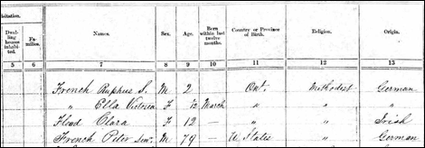

French Family Association
The Official Website of the Surname French
King St., Chatham Twp., Kent, Ontario, Canada
Chart #23, Isaac French, 1765
Chatham Twp., Kent, Ontario, Upper Canada
Detroit, Wayne Co., Michigan
This chart updated by Mara French on 12/27/11. Numbers in brackets [ ] show sources and refer to the bibliography at the end of this chart. An asterisk (*) shows continuation of that line. Send any corrections or additions to this chart to marafrench@mindspring.com. Revisions: 2011.
NOTE: Please make any corrections or additions to this chart that you can and send them to Mara. Refer to this chart by chart number so that your information will be understood. Refer to each family member by their number. Additions are greatly appreciated. This chart has been widely distributed and is constantly being updated. Although this is not my line, I make additions to it, and you will be notified when your data or someone elses data is added.
Contents
FFA Charts Related To This Chart
Future Research
and Possible Answers
The Blackburn
Family Association Master Database
DNA Test Data for Isaac French
DNA Test Group 4 Test Results (old website)
DNA Test Group 4 Test Results (new website)
DNA Test Group 4 Cross-Reference Chart
DNA Test Group 4 Descendant Chart to Testee
Isaac French Genealogy
In Appreciation
The following very concise information was sent to the FFA by Kevin Howley, Ref. [3] in collaboration with Diane French who lives in Chatham, Kent, Ontario, Canada [xx]. We also appreciate the work of Tim French who contributed more detail to his line, plus took the DNA test, which matches DNA Test Group 4.
Foreword
Ive researched this line just about all I can from ancestry.com and from the internet. Additions need to come from family members or from local books or historians who havent put their information online.
P.S. Although Isaac French is not of my line, I will continue to do research on him as time permits. My line is FFA Chart #6.
History and Background
Isaac French was b. ca. 1765. Peter was the son of Isaac French. Very little is known of Isaac and nothing is known of Peter's mother. An Isaac French appears in the ledgers of John Askin, a trader/merchant in the Detroit area, those ledgers running from 1788-94. It notes that Isaac is of River Rouge, an early settlement along the Detroit River (and the River Rouge), just down river (south) of Detroit. How long Isaac was in the Detroit area is yet unknown, but Isaac made his first petition for land in Kent County in 1792 and a second petition in 1793 in what is now known as Howard Township. The Crown provided him a patent for land on 10 Mar 1797. Isaac and family were probably resident in Kent County well ahead of the patent grant in 1797.
In an article written on 22 Jan 1880 in the Chatham Weekly about Peter French as a pioneer, we get our first clue as to the potential origins of Isaac French. The article indicates that Peter French was born in Kentucky. All the evidence we have indicates otherwise, but certainly it leads the reader to believe that Kentucky was where the Isaac French family had come from and that family members interviewed for the article had Kentucky firmly on their minds.
Given his grant of land from the Crown and his residence in Detroit while that trading post was under the control of the British, it is assumed the Isaac had some loyalty to the British post Revolution. Had Isaac been a Hessian soldier during the Revolution who decided to stay behind? [The FFA has ruled out that he was a Hessian soldier]. Had his family arrived before the War and was he one of the many families who flocked to Kentucky in the 1775-1785 period in search of new opportunities in that new territory? Very little is known of Isaac to this point, including his date of death. Peter sold a lot of land on 2 Feb 1820 and the paperwork in that transaction note Isaac as being deceased.
Blackburn Family
We note that the Blackburn family lived in the same localities as the French family did of DNA Test Group 4, of which Isaac French is part of. The Blackburns were in Menallen, Adams Co., PA, in Frederick Co., VA, and in Berkeley, WV. The French family of DNA Test Group 4 came originally from Lancaster and York Counties, PA, just east of Adams Co. Perhaps the Blackburn and French families migrated in similar paths.
In searching the FFA website for the name Blackburn, we see the name Blackburn is also in FFA Chart #136 and in FFA Chart #10, both charts of DNA Test Group 4.
Ref. [6] spotted a John Blackburn on a Berkeley County, VA / WV Revolutionary War Public Service Claims list (see http://genealogytrails.com/wva/berkeley/revwarpublicclaims.html). Rachael Blackburn's father was named John and he was born in 1753 in Menallen Twp., Adams Co., PA. He would have been the right age to participate in the Revolutionary War ca. 1776. He is the only Blackburn listed, and George French is the only French listed.
Furthermore, Joseph Blackburn married Olive Kendricks on 16 Apr 1782 in Berkeley Co., WV, therefore, the Blackburn and French families were at the same location at the same time.
Peter French and his wife Rachael Blackburn named their first daughter Eleanor. Rachaels mother was named Mary Mains, and her mother was Elizabeth – there is no known close connection to an Eleanor Blackburn, although that name existed in the Blackburn family elsewhere. Perhaps Eleanor was the name of Peters mother. We see that Peter and Rachael French named a son John probably after Rachaels father, John Blackburn. John Blackburn was born ca. 1753 and died 24 Nov 1828 in Chatham, buried at the Blackburn Cemetery in Dresden, Kent, Ontario, Canada. See the Ontario Cemetery Transcriptions and search for the French Cemetery.
Rachael Blackburn was born ca. 1795 in South Huntingdon township, Westmoreland Co., PA, and died 21 Feb 1851 in Chatham township, Kent, Ontario, Canada, and is buried at the Arnold Cemetery, Louisville, Kent, Ontario, Canada.
Thornton and Lucy Blackburn
Thornton and Lucie Blackburn, like many of the Underground Railroad refugees, headed for the towns and cities where they could find work and where they would help mould the character of their new homes.
The Blackburns were fugitive slaves from Kentucky who originally settled in Detroit. However, their former owner tracked them down there and tried to return them to slavery. In a highly publicized escape that left Detroit engulfed in riots, the Blackburns were able to make it to Canada. The Canadian Courts defended them against the threat of extradition. This was seen nationally and internationally as a symbol of Upper Canadas role as a safe haven for black refugees.
The Blackburns settled in Toronto and, in 1834, built their home on what are now the grounds of the old Sackville Street School. Thornton operated the first cab in the young city of Toronto. The Blackburns worked tirelessly in their new community for the abolition of slavery and to help other Underground Railroad refugees settle in Canada.
In 1985, archaeologists in downtown Toronto discovered what would become the most highly publicized dig in Canadian history: the remains of a house belonging to the Blackburns.
Karolyn Smardz Frost spent years researching this era of the Underground Railroad. Her book, Ive Got a Home in Glory Land: A Lost Tale of the Underground Railroad, which recounts the saga of Thornton and Lucie Blackburn, from slavery in Kentucky to freedom in Ontario, won the Governor Generals Literary Award for non-fiction in 2007. See http://www.cic.gc.ca/english/multiculturalism/black/people.asp.
Kent County, Ontario, Canada
Birth records in Ontario were not registered by the Government prior to 1869. To find a record of birth, if there is one to find, you will have to delve into Church Records.
Isaac and family were probably resident in Kent County well ahead of the patent grant in 1797. His son, Peter, sold a lot of land on 2 Feb 1820 and the paperwork in that transaction notes Isaac as being deceased. We have no word of Peter living in Canada before that time; he was 30 years old in 1820. He could have been in Kentucky.
On Peters death certificate, issued in Chatham Township, Kent County, Ontario on 22 Sep 1878, family members listed his place of birth as having been "Michigan, near Detroit". His age was listed as 88. In the 1851 census of Ontario, Peter French clearly lists his place of birth as Michigan and he and his family were practicing Methodists, the French family later contributing the land and building the Methodist church in that township, commonly known as French's Church. Peter lists his family origin in the 1871 and 1881census as being German. Peter's sons also list their origins as German even though their mother, Rachael Blackburn, appears to be mostly of Irish ancestry from Armagh, in Northern Ireland.
Family stories and anecdotal evidence indicate that Isaac French may well have been from Kentucky. In an article written on 22 Jan 1880 in the Chatham Weekly about Peter French as a pioneer, we get our first clue as to the potential origins of Isaac French (see article below). The article indicates that Peter French was born in Kentucky. All the evidence we have indicates otherwise, but certainly it leads the reader to believe that Kentucky was where the Isaac French family had come from and that family members interviewed for the article had Kentucky firmly on their minds. Furthermore, DNA Test Group 4 matches Isaac and Peter French with DNA Test Group 4, FFA Chart #193, David French of Kentucky.
Given his grant of land from the Crown and his residence in Detroit while that trading post was under the control of the British, it is assumed that Isaac had some loyalty to the British post-Revolution. Had Isaac been a Hessian soldier during the Revolution who decided to stay behind? Had his family arrived before the War and was he one of the many families who flocked to Kentucky in the 1775-1785 period in search of new opportunities in that new territory? See Tracing Your Roots in Chatham-Kent.
Ontario was originally known as:
Part of the 'colony' of Quebec until 1791
Upper Canada from 10 Jun 1791 - 10 Feb 1841
Canada West from 10 Feb 1841 - 1 Jul 1867
Ontario from 01 Jul 1867 – Present day
FFA Charts Related To This Chart
Several DNA tests match each other and are grouped together as DNA Test Group 4, thanks to the DNA administrator, Julia French Wood, for the surname French. She states that the only definite thing that DNA can show is that all the males in Group 4 are related i.e., descended from a common male ancestor.
Julia further states that the testee of FFA Chart #23 had 12 at DYS607 as do the testees of FFA Charts #186, #31, and #193 which may be more closely related to each other than the other four who have a 13 at that marker. The testee of FFA Chart #23 is the only one who has a 15 in DYS437, whereas all others have a 16. FFA Chart #23 is one mutation off from FFA Chart #194 in DYS511. Also, FFA Chart #23 is one mutation off from FFA Charts #10 and #136 at DYS389II, meaning that FFA Chart #23 is least connected to George P. French of Greenville, SC (FFA Chart #136), and John Peter French of TN (FFA Chart #10), both of whom have a 29 in DYS389ii instead of 30. Therefore, the closest matching tests to FFA Chart #23 are FFA Charts #186, #31, and #193. However, David French (FFA Chart #193) has a 31 in DYS449, whereas all the others have a 30, indicating that David is one mutation off from Isaac. So now we are down to FFA Charts #186 and #31 being the closest. Then we see that Henry French (FFA Chart #31) has a 12 in DYS460 where all the others have an 11, thereby indicating that FFA Chart #186 is the closest connected to Isaac as per the test numbers indicated.
It might be profitable to research the ancestry Philip French in Kentucky to find a possible connection. See Julia French Woods DNA administrative page, DNA Test Group 4.
FFA Chart #10,
John Peter French and William Lewis French – DNA Test Group 4
FFA Chart #23,
Isaac French – DNA Test Group 4
FFA Chart #30,
Louisa French – no test
FFA Chart #31,
Henry French – DNA Test Group 4
FFA Chart #129,
Peter French – no test
FFA Chart #136,
George French – DNA Test Group 4
FFA Chart #186,
Philip French – DNA Test Group 4 – Isaac is most closely connected
to
FFA Chart #193,
David French – DNA Test Group 4
FFA Chart #194,
Jonathan French – DNA Test Group 4
FFA Chart #195,
Jacob French – DNA Test Group 4
Future Research and Possible Answers
Who was Isaacs Father?
A descendant of Isaac French took the DNA test for the surname French, and it matches with DNA Test Group 4, as shown directly above. We have the ancestry of DNA Test Group 4 as far back as about 1710 in Pennsylvania, which starts with FFA Chart #195, Jacob French. As Isaac was born ca. 1760, his father was probably born between 1730-1740.
The 1680 Early Pennsylvania Settlers Along the Delaware River was extracted from the Pennsylvania Archives, but no French is on the list. It is possible that the first French arrived after 1680. The surname French is no longer shown in the early tax list of Antrim, Franklin Co., PA, by 1751. We do not have the records between 1680-1751.
Isaac named his son Peter, which could have been after his father.
The early settlers named French, who lived in the German and Dutch area of Pennsylvania, married mostly German women. The German naming convention was to give children a Christian or Religious name preceded with John for boys and Mary or Maria for girls. Hence, John Peter French would have been known as Peter French, and Mary Barbara French would have been Barbara French. We see many men named John Peter French in the DNA Test Group 4 ancestry. In particular is John Peter French, born ca. 1742 in Chansford, York Co., PA, m. Marie Barbara Schmeiss in 1760 in PA, a German national. Children: Elizabeth, Peter, George, John, and Catharine who moved to TN, FFA Chart #129. This Peter died on 25 Dec 1787 in Hagerstown, Washington Co., MD. It is not known if he had a son named Isaac.
Did Isaac Reside in Pennsylvania?
There is a listing for the following names as being
naturalized in PA in 1765 - Henry, Isaac, Jacob, and John FRANTZ.
The Ship Chance Passenger List 1765 lists Isaac Frantz among 216 passengers. He was able to sign his name and not sign it with an X. He signed the oath of allegiance. He arrived in the Port of Philadelphia on 9 Sep 1765 first from Rotterdam, Holland, and last from Cowes, England, and who took the oath of allegiance. Could Isaac have emigrated to PA in 1765 and migrate to Kentucky and then Detroit where his son Peter was born? The name Frantz is in no way interchangeable with French. See the full text of A collection of upwards of thirty thousand names of German, Swiss, Dutch, French, and other immigrants in Pennsylvania from 1727 to 1776. The name Frantz has over 100 matches. Best to search for Frantz, by adding the comma to find 36 matches. Of interest is Henry and Peter Frantz in 1748, Georg Frantz in 1749, Jacob Frantz in 1751, and Isaac Frantz in 1765.
It could be that some French ancestors left England and moved to other countries, such as Holland and Germany, before emigrating to America. These French men then took a Dutch or German wife and emigrated mostly to PA – hence the Pennsylvanian Dutch (or Deutsch meaning German). The name French could have been Franch, Frinch, Frantz, Franz, Frensch, Fronch, etc.
One wonders if the surname Frantz belongs with the surname French? Take a look at FFA Chart #129, John French, possibly of Germany, where no DNA test for this family has yet been taken. Perhaps the name was changed to Frantz due to errors in translation, phonetics, spelling, or interpretation.
Why Did Isaac Migrate to Detroit?
It is thought that Isaac was the only member of this family to migrate to Detroit, which at that time was part of Canada. The fur trade was a tremendous business then; traders lived in Detroit and traded their furs in Canada. Isaac could have been offered a business opportunity and therefore left Kentucky.
Who Was the Mother of Peter?
It is not known whether or not Isaac even married or if Peters mother ever lived in Detroit or Canada. See Molly French below. Isaac could have married a woman named Eleanor only because his son, Peter, named their first daughter Eleanor. There has been absolutely no one with the name Eleanor turn up in Canada or Michigan who could fit this model. Son Peter may have had a marriage before Rachael Blackburn as his first children were born in 1812, 1814, and 1817 and he didnt marry Rachael until 1818. If he had a first wife, she might have been named Eleanor, the name of his first child.
Was Peter of German Origin?
It is assumed Peter was born in 1790 to a German mother. But . . . generally, the origin listed for children seems to follow that of the father. Sometimes the mother will be listed as the same origin as her husband in one year and a different (perhaps the correct one?) in another year, but very seldom (if ever) have I seen the children follow the origin of the mother in the census reporting [2].
Who was Molly French of Detroit?
A Molly French turns up in the District of Hesse (very close to River Rouge south of Detroit) at the exact place and time (1792) Isaac resided there; she could have been his wife or sibling. Molly is a nickname for Mary and Molly is also an independent name. See article below. John Askin is mentioned, and he is also mentioned in articles involving Isaac French.
We note that Isaac French, the topic of this website, is most closely connected thru DNA with FFA Charts #186, #31, and #193. Reviewing FFA Chart #31, Henry and Elizabeth (Ersom) French, we note that they had a daughter named Polly or Mary French who was born 1 Dec 1776 in Mercer Co., KY. She may have traveled to Detroit with Isaac ca. 1792 and then returned to Kentucky by 1800 when she married John Godhart Smick / Smock. Another indication of this situation could be the fact that she, Mary Smick/Smock, named a son Isaac. We note that in FFA Chart #186, Philip French named a son Isaac. Philip French was born on 3 Mar 1790 in Kentucky, the same year that Peter French was born, Isaacs son.
Who was Anna French of Detroit?
Anna French was b. ca. 1793 in Kentucky and d. 17 Jul 1873 in Detroit, Wayne Co., MI, 80 years old, had been married, and she was black.
Who was George French of Detroit?
George French was b. ca. 1813 in KY. His father was Francis French and his mother was Percelia. He d. 4 Jun 1885 in Detroit, Wayne Co., MI, age 72, was a cook, married, and a Mulatto. He was the only man, besides Isaac and Peter, who emigrated from Kentucky to Detroit between 1760-1860. Most likely Francis French was a white man and Percelia was a slave.
In the 1850 census of Detroit, Wayne Co., Michigan, George was 35, listed as born in 1815 in KY, a mulatto, and Caroline was 29, listed as born in 1821 in Michigan, a mulatto. They were living with Eliza Lenox, age 26, a mulatto born in Michigan.
In the 1860 census of Detroit, Wayne Co., Michigan, a Julia A. French is listed as born in 1805 in Kentucky, now aged 55, black, living with Louis French, age 14, black, born in KY, and Lucretia French, age 10, mulatto, born in Michigan. The Julia A. Flood who married Peter French was b. Mar 1842 in Raleigh, Chatham, Ontario, Canada, therefore she is not the same person.
Many women named Julia A. French lived in Kentucky, Michigan, or Canada: Julia A. French was the spouse of Benjamin French and she was b. Jan 1828 in Kentucky. Julia A. French was born ca. 1842 in Ontario and married Peter French, resided in Chatham, Bothwell, Ontario. Julia A. French was born in Aug 1837 in Canada and married Levi W. French of Quebec. Julia A. French was born in 1863 in Michigan and married James R. French. Julia A. Chase married Edwin French on 29 Oct 1871 in Michigan. Julia A. French was born in 1890 and married William S. French in Michigan.
In the 1870 census George was living in Detroit, Wayne Co., MI, age 60, a mulatto, born in KY. He was living with Caroline French, age 30, a Mulatto, however she was born in Michigan. They were living with Alice French, age 14, a mulatto born in Michigan, and Ida French, age 6, a mulatto born in Kentucky.
In the 1880 census of Detroit, Wayne Co., Michigan, George is listed as age 70, b. ca. 1810 in KY, with wife Caroline, age 45. It states that both Georges parents were born in KY. George was a cooper, married, and black. Caroline was keeping house, married, and black, and her father was born in Massachusetts and her mother in Canada. I believe later on in the census, they used only black and white and not mulatto.
In the 1900 census of Powder House, Scott Co., KY, this same Louis French is listed, age 54, born in May 1846 in KY, black, both parents born in Kentucky, married to Emaline French in 1865, married for 35 years, both her parents were born in KY, living with their son, Henry French, age 19, born in KY, black.
From Julia French Wood, the DNA expert for the surname French:
If the black were in a direct male line, he would have to have African Y-DNA, but if it crossed to female then back to male he could have European Y-DNA. In addition, you can't know for certain that the one in 1760 was 100% black. I would have to see the DNA to make a further analysis. It is the Haplogroup that determines origin.
G2a3b1a may have come from England, but it is not the origin. It is from Georgia or Odessa, but scientific thought differs on the origins. It is not African.
A wife could be from Africa and the white French male line would not be affected. The child may look African but the Y-DNA would be European.
First Generation
The generation before Isaac would have been born ca. 1735-40, the same time in which the main group of DNA Test Group 4 ancestors were born in Berkeley County, West Virginia.
1.1* Isaac French, b. ca. 1765 (whereabouts unknown). There is no proof that Isaac was born in Detroit or Ontario. Various documents, including the Canadian census, are consistent in showing Peter's birthplace as USA or Detroit. We need to get proof of this birth year and town as Isaac could very well have been born in WV, VA or KY. His DNA matches with David French of FFA Chart #193 who was born ca. 1770 in WV, VA, or MD. David lived in Ohio Co., KY. Ref. [2] organized a spreadsheet of 18 Frenches in the 1881 census from Chatham, Kent Co., all with German origin, and they include Amslem, Elizabeth, Ellen, Joseph, Frances, Edwin, David, Isaac, Sylvester, John, Barba, Harrie, Julius, Arther, Farses, Harriet, Florence, and Harrie (oldest to youngest).
An account written in 1880 indicates his son Peter was from Kentucky, but it could have also meant that his family or father was from Kentucky. There is no information on siblings of Isaac or his son Peter. Peter could have received his name from Isaacs father, but even that is unknown.
Isaac was living near Fort Detroit (Canada at that time) or in Kentucky by about 1790 when his son Peter was born. The only state in between Michigan and Kentucky is Ohio; he could have been born in Kentucky or his father could have been born in Kentucky, but we have no proof.
Isaac was living in Chatham, Kent Co., Upper Canada by 10 Mar 1797 when he received property from the Crown in Howard Twp., Kent Co., Ontario.
Isaac French got Lot 16 southside 3rd Ts. River Thames, and Lot 18 went to Stephen Kissler (Kessler) a Hessian soldier of the Hesse-Kassel Battl. v. Lengerke, and Lot 19 went to Georg Bach, a Hesse-Hanau Jaeger, who got his discharge in Quebec, and Lot 20 went to a comrade of #19, Jacob Henckel. Could not find out who got Lot 17 or 15. Both these Hanau Jaegers had a comrade by the name of Johannes (Jean) FRANZ also discharged in Quebec in 1783, for which I have some information. He applied for land in Quebec on 1 Oct 1818, and his widow Marie Daniel got a grant in 1819 in Quebec. Just a hunch, FRANZ sounds like FRANCE or FRENCH. (Comments by Kevin Howley, Ref. [3] ).
Isaac French died before 2 Feb 1820 (about age 55) at Kent Co., Ontario, when his son Peter sold his fathers land.
Chronology of Isaac French
|
Date |
Description |
|
1765 |
Approximate birth date, place unknown |
|
1774 |
The Judicial District of Hesse was created and Detroit and Michigan were part of upper Canada. |
|
1785-89 |
Isaac perhaps married, place unknown, but perhaps Kentucky, as Isaacs son Peter could have been born in Kentucky. |
|
1790 |
Son Peter was born in Detroit, Michigan or in Kentucky. |
|
1792 |
Originally a part of Virginia, in 1792 Kentucky became the 15th state to join the Union. First settlers came to the Ohio River Valley as did the French family; however, by this time, Isaac had migrated to Canada. Isaac petitioned for land in Kent County, Ontario, Canada. A Molly French turns up in Hesse very close to the town of River Rouge outside Detroit where Isaac lived. |
|
1793 |
Isaac petitioned for land in Howard Township, Kent Co., Ontario, Canada |
|
1793 |
John Askin held the meeting of the Land Board for the Counties of Essex and Kent (in Ontario, Canada), at the Commandants Quarters, Detroit, June 28th, 1793, in which Isaac French was present. John Askin was in another meeting in which Molly French was present. |
|
1797 |
Isaac received land in Howard Township, Kent Co., Ontario, Canada |
|
1802 |
Isaac received a Free Grant of land in Howard Twp (his residence is also given as Howard) on 11 June 1802 under the Old Regulations. This land grant was in recognition for Loyalist service against the Colonies [20]. |
|
1804-1809 |
Isaac is on a subscription list for the building of a bridge over the two lower forks of the Thames in Canada, near Chatham. |
|
1811 |
Son Peter may have had a marriage before Rachael Blackburn as his first children were born in 1812, 1814, and 1817 all in Canada. This first wife might have been named Eleanor, the name of their first child. |
|
War of 1812 |
Siege of Fort Detroit. Peter immediately shouldered his musket and enlisted in the defense of the country under General Proctor. |
|
1818 |
Peter married Rachael Blackburn on 22 Dec 1818 in Chatham, Kent Co. in Ontario, Canada. |
|
1820 |
Isaac died before 2 Feb 1820 (about age 55) at Kent Co., Ontario. His son, Peter, sold a lot of land on 2 Feb 1820 and the paperwork in that transaction notes Isaac as being deceased. |
Land Petition -- 1792
A Isaac French appears in the ledgers of John Askin (1739-1815), a fur trader/merchant in the Detroit area, those ledgers running from 1788-94. The ledgers note that Isaac French was of River Rouge, Wayne Co., MI, an early settlement along the Detroit River, just down river (south) of Detroit, MI. How long Isaac was in the Detroit area is yet unknown, but Isaac made his first petition for land in Kent County, Ontario, Canada, in 1792 and a second petition in 1793 in what is now known as Howard Township, Kent Co., Ontario, Canada. The Crown provided him a patent for land on 10 Mar 1797 – Lot No. 16 con. 1 Howard twp., Kent Co., ON – Crown to Isaac French patent Mar. 10, 1797.
Land Petition -- 1793
Search Google Books for Third Report of the Bureau of Archives for the Province of Ontario by Alexander Fraser, 1905, p. 234.
John Askin held the meeting (above) of the Land Board for the Counties of Essex and Kent (in Ontario, Canada), at the Commandants Quarters, Detroit, June 28th, 1793, in which Isaac French was present. The River Thames is located in southwestern Ontario, named after the Thames River in London. It was the location of an important battle of the War of 1812, fought 5 Oct 1813 between American General William Henry Harrison and British General Henry Proctor along with Proctors ally Tecumseh, in which Chief Tecumseh was killed. Peter French fought on the British side.
Molly French
Also listed in this report from Detroit located in Canada at that time are:
Jeremiah French, p. 210, from the Counties of
Glengarry and Stormont
Jeremiah French, p. 312, for a board meeting in Montreal on 10 Sep 1788
Jeremiah French, p. 382 in the Surveyor Generals Office in Quebec on 11 Sep
1788
Lieutenant French, p. 370 and p. 483, farm lots in Quebec on 17 May 1784
Molly French, p. 186 at a Land Board for the District of Hesse (very close to River Rouge where Isaac French resided – see map below and marker A where Hesse is situated) holden at the Council Chamber of Detroit, 25 May 1792 and mentioning John Smith, John Askin, George Leith, Montgny Louvigny, D. W. Smith, and inhabitants of River Canard, who attended in person. John Askin was b. 1762 in Michigan, m. 1791 in Detroit to Catherine (1763-1796), d. 1820 in Amhertburg, Ontario (much the same dates and places as Isaac French). His father was from Tyrone, Ireland. River Canard is a hamlet in Amherstburg about 12 miles south of Windsor. In the 1790s, John Askin set up a trading post and hired people to help in his fur trading business.
Could Molly French have been Isaacs wife or sister? Could she have been the mother of Peter, listed here only 2 years after his birth? She must have been a head of household or else her husbands name would have appeared at that time. Is that correct?
Detroit, Michigan
In 1718 Fort Pontchartrain was built for protection
from the British. However in 1760, it was surrendered by the
French to the British. Because Detroit was a Canadian city, the first civil
government was established under the Quebec Act in 1774. After creation of the
Judicial District of Hesse, Detroit and Michigan were
part of Upper Canada. In 1796 Detroit
was occupied by American troops and Wayne County was established in honor of
General Anthony Wayne whose victories against the Indians increased the
transfer of sovereignty to America. Originally, the boundaries of the county were
farther than Michigan itself. Americans started settling in Detroit in large
numbers marrying both French and British residents.
A marks the District of Hesse. Detroit is at the top of the map, and River Rouge is just south of Detroit. Note Windsor and Tecumseh, which are discussed in the sections on Isaac and his son Peter French.
Detroit became a town in 1802, but was completely destroyed by fire in 1805. The only building remaining was a stone warehouse. There was great doubt that Detroit would ever become a great city until Judge Augustus Woodward came to Detroit in 1805. His purpose was to help Governor William Hull establish the new territory of Michigan, with Detroit as its capitol. Because of Woodwards design of a new Detroit, the main street was named after him.
Glengarry County, Canada, was established in 1792; in 1786 500 settlers arrived from Glengarry, Scotland and were the first to settle inland, away from a river. Farming was the main occupation.
Fur Traders and Merchants
Very few fur traders actually lived in the valley. Most used Detroit as their home base where they would sell their furs and acquire trading goods. They would make the trip to the valley hauling heavy backpacks of about 125 pounds stocked with goods for trading with the Indians. These later traders became very skillful in dealing with the Indians and at the time provided practical goods desired by the Indians such as blankets, ammunition, knives and other tools. Meeting these mutual needs helped to maintain a civility making the trading business lucrative for both parties. Links regarding the fur trade in Detroit. (perhaps have more clues)
http://www.pcmaf.org/fur_trade.htm
https://frenchadvocacy.wikispaces.com/file/view/BellRinger_FrenchInNorthAmerica_Info.pdf
http://www.dittrichfurs.com/dittrich_furIndustry.htm
http://saugeenmetis.com/page.php?page=upperdetroit
http://apps.detnews.com/apps/history/index.php?id=180
http://www.uwgb.edu/wisfrench/library/articles/metis.htm
http://mlloyd.org/gen/navarre/text/pnbio.htm
Land Grant -- 1802
Isaac received a Free Grant of land in Howard Twp (his residence is also given as Howard) on 11 June 1802 under the Old Regulations. This land grant was in recognition for Loyalist service against the Colonies [20]. Isaac did not pay for his land (FG=Free Grant) and he qualified as a non-payer under the conditions given as OR (Old Regulations). The CLRI also shows that Isaac's Date Identity Code is 1. This refers to a location ticket, meaning that Isaac was authorized to occupy this specific parcel of land.
After an Order-in-Council authorizing the land grant was issued, the Attorney General issued a fiat containing the petitioner's name and details of their land grant. Upon receiving the fiat, the Surveyor-General assigned a parcel of land to the petitioner and issued them a location ticket. In the Surveyor-General's Office, the fiats were renumbered and categorized according to the regulations under which they were issued.
In this case (Isaac's grant of land) we know that we should now check the UCLP (Upper Canada Land Petitions) Index for Isaac's petition for land. This petition (or petitions) may provide a great deal of genealogical information - sometimes it has a father's name, or brothers. In any case it is always interesting and shouldn't be overlooked. The outside of the petition is very important (it is also microfilmed) as it will tell under what conditions the land was granted.
Even if you do not find Isaac's petition in the UCLP Indexes (but be VERY careful to search every single spelling variation you can think of) you have other avenues of research open to you.
There are other petitions that can be searched as well - and you can also search patents, fiats, warrants... and more.
Isaac French's Free Grant meant he did not pay for this land, and because he is not listed as FF (Full Fees) but rather OR (Old Regulations) it's Loyalists did not pay fees; military claimants and other settlers did. It's not quite that cut and dried however so you need to search the UCLP. I would also search Township Papers, Heir & Devisee Commission records, and I would obtain the original record from the CLRI. To do that, visit the CLRI at http://olivetreegenealogy.com/can/ont/clri.shtml. Scroll down to the section on the Archival Reference Number. Isaac's Ref. # is 01 CI3 014 406. You want Register for Fiats, Old regulations, Volume 14, page 406. 01 CI3 is the Crown Lands Registers for Fiats and Warrants, and this is what you will be checking. I provide a link to the online Archives of Ontario Conversion Tables so you can convert the Archival Ref. # to a microfilm reel #. You want to consult the original as sometimes there is more information given there. Sometimes there is nothing more than what is found on the CLRI, but you will not know until you check. Some of the comments given on the originals are well worth the effort to view!
Don't confuse this with the UCLP Indexes though. They are separate resources and do not replace each other! UCLP gives petitions with details; CLRI gives a record of transaction on a piece of land, providing clues for further research.
You should also consult the Abstract Index to Deeds for the specific piece of property your Isaac owned. You can obtain many at the Ontario Archives; some are only found at the local Land Registry Office.
The preceding information was written by Lorine McGinnis Schulze, Box 341, Port McNicoll ON L0K 1R0, Canada, email: otg@csolve.net or lorine@olivetreegenealogy.com. Hopefully someone will follow thru on these suggestions to determine more about Isaac French. If so, please email marafrench@mindspring.com. To see what information can be provided, look at the OBrien family: http://webhome.idirect.com/~obrienr/ontlands.html.
1804-1809 Subscription List
Isaac is on a subscription list for the building of a bridge over the two lower forks of the Thames in Canada, near Chatham. The number 4 after his name indicates he contributed cash, bushels of wheat, gallons of whisky, or labor [23].
Second Generation
Notice the proximity of Chatham to Detroit.
Child of Isaac French, 1.1
See also http://trees.ancestry.com/tree/11618671/person/785918462.
2.1* Peter French, b. 1790 in Kentucky or Michigan (no record exists). Very early in his boyhood he came with his parents to Canada and settled in this western section of Ontario. He was a farmer in Kent Co., Ontario, Canada. He resided in Detroit during the War of 1812, and then in Chatham, Kent Co., Ontario, Canada when his father was elderly, about in 1818, as his father died about that time. There, Peter met and married Rachael Blackburn in 1818 and dealt with his fathers death and land in 1820. Some records indicate that he was born in Kentucky, but the 1851, 1861, and 1871 census of Canada state he was born in Michigan. The 1851 census states he was born in Michigan and he was living alone without a spouse, as his wife had died earlier that very year. The 1861 census states he was born in the United States and was widowed. The 1871 census states he was born in the United States, a Methodist, and of German origin, not married.
Marriage
Peter had children born between ca. 1812-1835, a span of 23 years, which could indicate that he could have married twice. From Ref. [2]: In the book by J. H. Beers, Commemorative Biographical Record of the County of Kent, Ontario (pre- 1904), Peter Jrs parents name were identified as Peter and Lena. We know this is not correct; his mothers name was Rachael Blackburn --- or was it? Lena is not a known nickname for Rachael, but Lena or Lana was a common nickname for Eleanor, which was the name of Peters oldest daughter.
Peter m. Rachael Blackburn ca. 1811 or on 22 Dec 1818 (date never verified) in Chatham, Kent Co. in Ontario, the daughter of John Blackburn and Mary Mains, Loyalists from Pennsylvania, the state of origin of the French Family DNA Test Group 4, of which Isaac French is part of. The marriage date of 22 Dec 1818 has never been verified and there is no source document stating this date; it is only a date stated on a pedigree tree online. Rachael was b. in 1794, so age-wise, she could have been the mother of all Peters children. Because she died young in 1851 before her youngest children were adults (last one born in 1835), these children may have considered their oldest sister, Eleanor, as their caregiver or mother.
The Blackburn family was of Ireland from 1643. Rachael was b. ca. 1794 in S. Huntingdon Twp., Westmoreland, PA, d. 24 Feb 1851 in Chatham Twp, Kent, Ontario. John Blackburn was b. 1753 in Menallen Twp., Adams Co., PA and Mary Mains was b. 1757 in Menallen Twp., Adams Co., PA. Both died in Chatham Twp., Ontario, Canada. Could the surname Mains actually be Mainz, a German name? Peter consistently lists his family origin in the census as being German. Peter's sons even list their origins as German even though their mother, Rachael Blackburn, appears to be mostly of Irish ancestry. Perhaps they are referring further back to Isaacs wife.
The following record is from The Loyalists in Ontario, Sons and Daughters, p. 24, but it has no rhyme or reason for the date.
Bargain and Sale Document, 1820
A Bargain and Sale document, dated Feb. 7, 1820 and filed in the Kent Registry Office, identifies the father-son relationship between Isaac and Peter French. This Bargain and Sale describes the transaction in which Peter French sold land to Peter Traxler. It says Peter French, heir et ux to Isaac French deceased and Rachael his wife. Later in the document it says two hundred acres of land which is described in the Kings patent to his father Isaac French". This document is the only source found to date that proves Peters father was Isaac. Some of the additional land petitions filed by Isaac say that he had a family when he came, but no additional references to wife or children have been found [14].
Furthermore, Peter dealt with the land which would normally go to Peters mother; we assume she had died or was not living with Isaac at his death. We do not know with whom nor where Peter was living as a youngster before the War of 1812.
Census Record, 1850
The 1850 census shows Rachel Blackburn, age 56, born 1794 in Pennsylvania, living in 1850 in Napier, Bedford Co., PA with 7 other Blackburns. She was probably visiting her family at that time perhaps knowing that she was not well, and returned to Canada by the next census, as she died that year.
Census Record, 1851
1851 census of Canada West, Kent County, Chatham sub-division, lists Peter as age 61, therefore born about 1790. In this census, he is listed with:
John French, age 32, b. ca. 1820 in Canada
Mary (Dolsen) French, age 37, b. ca. 1815 in Canada
Oscar French, age 9, b. ca. 1843 in Canada
Jacob French, age 4, b. ca. 1848 in Canada
Anninos / Arminea French,
age 1, b. and d. ca. 1851 in Canada
Peter French, age 61, b. ca. 1791 in Michigan
Rachael French, age 57, b. ca. 1795 in Pennsylvania (she died this same year)
Eliza French, age 21, b. ca. 1831 in Canada
Rebecca French, age 16, b ca. 1836 in Canada
Also in this census are 13 members of the Blackburn family, ancestors of Peters wife Rachael; however, they are all listed as born in Canada. [Rachaels parents (John Blackburn and Mary Mains) and Rachaels older siblings arrived in Upper Canada about 1803, when John was granted land by the Crown.] The French family were farmers and Methodists. From this listing, we find Peter and Rachael listed with their two youngest children (Agnes Elizabeth, and Rebecca) and their son John and his family (wife Mary (Dolsen), and children Oscar, Jacob, and Arminea – recently deceased).
Census Record, 1861
Peter French is listed as b. ca. 1794 in the U.S., age 67, widowed, living alone in Gore, Kent, Canada West.
Census Record, 1871
Ethnic origin listed in the 1871 census of Chatham, Kent, Ontario, Canada, as origin German, Methodist, along with four of his children. In this census, Peter is 79. Rachael is not listed having died 24 Feb 1851. Others listed are:
Peter French, age 46, German origin, born in Ontario
Julia A. French, age 28, French origin, born in Ontario (Peter m. Julia Flood)
Elizabeth French, age 18, German origin, born in Ontario
Edgar French, age 16, German origin, born in Ontario
Almyra French, age 14, German origin, born in Ontario
William French, age 11, German origin, born in Ontario
Byron French, age 10, German origin, born in Ontario
James French, age 4, German origin, born in Ontario
Ruphus S. French, age 2, German origin, born in
Ontario
Ella Victoria French, age 1 month, German origin, born in Ontario
Clara Flood, age 12, Irish origin, born in Ontario (dau.
of Julia A. Flood)
Peter French, Sr., age 79, German origin, born in the United States
The family were farmers and Methodists.

Death
The Ontario, Canada Deaths for 1869-1938 state he died 22 Sep 1878 at age 88 in Kent County, and that he was born in Detroit, Michigan. The death date would indicate he was born before 22 Sep 1790.
On Peters death certificate (above), issued in Chatham Township, Kent County, Ontario on 22 Sep 1878, family members listed his place of birth as having been "Michigan, near Detroit". His age was listed as 88. In the 1851 census of Ontario, Peter French clearly lists his place of birth as Michigan and he and his family were practicing Methodists, the French family later contributing the land and building the Methodist church in that township, commonly known as French's Church. Peter lists his family origin in the 1871 and 1881 census as being German. Peter's sons also list their origins as German even though their mother, Rachael Blackburn, appears to be mostly of Irish ancestry.
Chatham Tri-Weekly Planet
January 21, 1880
We promised in our last weekly edition to give a few facts in connection with the life two old residents of Kent County who took part in the struggle of 1812, and who have lately passed away from the scene of their war fare to the quiet of the tomb. Their names are Peter French and Malcolm McLeod. But it is only of the first that we have been able to gather any particulars. The other will follow.
Peter French died in the month of September last at his home in the township of Chatham, in that section known as French's Settlement, the neighbourhood having taken its name from the number of descendants of the old veteran settled here. He was born in the State of Kentucky (the state that produced such hardy old pioneers as Daniel Boone) in the year 1791 and was therefore something over 88 years old at the time of his death. Very early in his boyhood he came with his parents to Canada and settled in this western section of Ontario. When the war of 1812 broke out, Peter immediately shouldered his musket and enlisted in the defense of the country under Gen. Proctor. He was of the number who were compelled to retreat at the re-taking of Detroit and was with the troops in this neighbourhood at the time of Tecumseh's death. Deceased, with other young recruits, had lagged behind when the British were being pursued toward Moraviantown and the Americans on their way back to Michigan came upon the boys and took them prisoners. French was sent to a post in the centre of Ohio for safe keeping, but soon meeting an old General who had known his father, and who recognized Peter as a Kentucky's boy, he was released and found his way back to Canada, here to settle permanently. Clear a home in our backwoods and raise up a family that with their descendents now form no small portion of the vigorous ordinary yeomanry of Kent. His wife was Rachael Blackburn and his family comprised six boys and four girls. At the time of his death his grandchildren numbered 53 and great-grandchildren 62.
The inheritance of a deceased parents property usually goes to the oldest son, with the other children being given perhaps a payment by the oldest son, then going out on their own to establish themselves and their families in a different geographic area. Assuming Peter was the oldest son of Isaac, and that there were other children of Isaac, and although unmentioned in currently known documents, where did those other children go? A search of the 1871 and 1881 census in Ontario (less Bothwell & Kent Co.) for the surname (Soundex) French and German origin, yields 64 people, 4 of which show in both census lists. Some of them might be descendants or relatives of Isaac.
Third Generation
Children of Peter and Rachael (Blackburn) French, 2.1
3.1 Eleanor French, b. in Chatham Twp., Kent, Upper Canada; d. 22 Nov 1842 in Chatham Twp, Kent, Canada West [3]. She may have died in conjunction with childbirth, as her sixth, an un-named, child also died in Nov 1842. She does not appear in the 1851 any subsequent census. She m. Samuel Arnold on 6 Apr 1831 in Harwich Twp., Kent, Upper Canada and had 6 children: Mary Jane, Lewis Henry, Anselam French, Samuel Snyder, Peter Frederick, and un-named. Eleanors husband Samuel was the son of Johan Ludwig (identified by some researchers as John Lewis) Arnold (1770 – 1869) and Catherine Snyder (1776 – 1858). He m2. Elizabeth McKergan on 11 Dec 1843 at Chatham Twp., Kent, Upper Canada [14]. See Arnold Cemetery, Chatham, Ontario, Canada.
Note: Eleanor French has been confused with the Eleanor French, b. 13 Nov 1811 in Coteau du Lac, Soulanges Co., QC, Canada who died 24 Aug 1889, the daughter of Gershom French and Margaret Faulkner, and in no way connected to this family.
3.2* Isaac French, b. in Chatham Twp., Kent, Upper Canada [3], m. Ann Ellen Jane Campbell 5 Jan 1842 in Kent, Canada West, he d. Aug 1870 in Chatham Twp., Kent, Ontario. Jane Campbell was born about 1823 in New York, was of Scotch origin, and died 1 Jul 1901 in Chatham, Kent, Ontario. Isaac and Ann had 6 children: Eleanor G., Joseph Blackburn, Robert James, George, Barbara Ann, and John Henry.
Isaac left a will, written 7 May 1869 and filed in the Registry Office. The will does not mention his son, John.
Census Records
Isaac appeared in the 1851 census as Isaac French (36, Canada, farmer, Methodist) at Chatham twp., Kent Co. Dist 1, Canada West in a log house with Jane (29, NY), Eleanor (5, Canada), Joseph (3, Canada), and Robert James (1, Canada).
Isaac appeared in the 1861 census as Isaac French (47, U Canada, Methodist, farmer) at Kent Co., Dist 2, Canada West in a 1-story frame house with Jane (38, U States), Leanor (14, U Canada), Joseph (12, U Canada), Robert (9, U Canada), George (6, U Canada), Barbara A. (3, U Canada), and John H. (1, U Canada).
Isaac appeared to have upgraded his living accommodations, moving from a log house to a frame house between 1851 and 1861, as did some of his siblings in the same timeframe. He does not appear in the 1871 or any subsequent census, although Jane does:
Jane appeared in the 1871 census as Jane French (48, U States) at Chatham, Kent Co., Ontario with head of family son, Joseph (22, Ont., farmer), Robert J (20, Ont., harness maker), George (17, Ont., farmer), Barbara Ann (13, Ont.), and John Henry (11, Ont.). The family was E. Methodist, and of English origin, except Jane who was of Scotch origin.
3.3* Anslum/Anselm Guthrie
French, b. 13 Jul 1817 in Chatham Twp., Kent, Upper Canada, d. 12 Jun 1893
in Chatham Twp., Kent, Ontario [3]. He appeared in the 1851, 1861, 1871, 1881,
and 1891 census. He does not appear in any subsequent census. He m. Nancy
McIntyre on 18 Oct 1836 in Christ Church, Chatham, Kent, Upper Canada, and they
had ten children: John Anslum, Susannah, Rachael
Blackburn, Thomas McIntyre, Agnes Elizabeth, Sarah Ann, Nancy Ann, Isaac Edwin,
Anslum Wesley Sylvester, and Harry James. Nancy was
the daughter of James C. and Anne Nancy (McDormand)
McIntyre, b. 18 Aug 1820 in Harwich, Kent, Upper Canada and d. 10 Oct 1893 in
Chatham, Kent, Ontario. Anslum &
Nancy are buried in Arnold Cemetery,
Louisville, Kent Co., ON [8]. Anslums obituary
lists him as having seen service in the Upper Canada militia at the rebellion
at Windsor and Sandwich, 1837 – 1838.
Exerted from the book Commemorative Biographical Record of Kent County, Ontario:
Anselm French and his wife located after their marriage, on the farm in County Kent and proceeded at once to redeem it from the wilderness. They made a clearing for their home, erecting a diminutive frame house, in which they lived for several years and then built the home where they passed the remainder of their days. He died in 1894, at the age of seventy-six and his wife the same year at the age of seventy-four and both are buried in the Louisville Cemetery (Arnold Cemetery, Louisville, Kent Co., ON). They were consistent members of the Methodist Church and actively interested in its founding, Mr. French having donated the site for the church building from a portion of his land. Anselm and Nancy (McIntyre) French were the parents of the following children: John a harness maker of Kent Bridge, ON; Susan who married Edward Wicks, a farmer of Chatham Township; Rachael who married Thomas Richie, now living retired in Dresden, ON; Sarah A, deceased wife of Duncan Richie; Thomas of Chatham, ON; Edwin; Eliza, widow of William Smith of Dresden, ON; Annie who married John Dowswell, a manufacturer of Dutton, OH; Harry, a farmer of Dresden, ON.
[The Battle of Windsor was a short-lived campaign in the eastern Michigan area of the United States and the Windsor area of Upper Canada. A group of men on both sides of the border, calling themselves "Patriots", formed small militias in 1837 with the intention of seizing the Southern Ontario peninsula between the Detroit and Niagara Rivers and extending American-style government to Canada. They were opposed and defeated by an Upper Canadian force of regulars and militia.]
\ is a man's name and is pronounced an-SELM. It is of Old German origin, meaning "God's helmet". The English meaning is close to the same, being divine protection. Saint Anselm (11th century) was archbishop of Canterbury during William the Conqueror's reign, and was a formidable influence on medieval Christian thought.Census Records
Anslum appeared in the 1851 census as Anslum French (35, Canada, Methodist, farmer) in a log house in Chatham Twp., Dist 1, Kent Co., Canada West with Nancy (32, Canada), John (16, Canada), Susannah (13, Canada), Rachael (9, Canada), Thomas (7, Canada), Sarah Ann (4, Canada) and Agnes Elizabeth (1, Canada).
Anslum appeared in the 1861 census as Ansalum French (43, U Canada, farmer) in a 1 ½ story, 1 family frame house in Chatham Twp., Dist 2, Kent Co., Canada West with Nancy (40, U Canada), Rachael (17, U Canada), Thomas (15, U Canada), Sarah A. (12, U Canada), Agnes E. (9, U Canada), Nancy (7, U Canada), Isaac A. (4, U Canada), and Ansalum S. (2, U Canada). All were Wesleyan Methodists.
Anslum appeared in the 1871 census as Anslum French (53, Ont., farmer) at Chatham Twp., Dist 1, Kent Co., Ontario with Nancy (50, Ont), Eliza (20, Ont), Ann (17, Ont), Edwin (15, Ont), Sylvester (12, Ont), and Harry (8, Ont). All were Wesleyan Methodist; all were of German origin except Nancy who was of Scotch origin.
Anslum appeared in the 1881 census as Anslum French (63, Ont., retired farmer, rabbit hunter) at Chatham Twp., Kent Co., Ontario with Nancy (60, O), Sylvester (22, O) and Harrie (18, O). All were C. Methodist; and all were of German origin except Nancy who was of Scotch origin).
Anslum appeared in the 1891 census as Ansalem French (73, Ont., parents b. U States, farmer) at Chatham Twp., Bothwell, Ontario with Nancy (70, Ont, parents b. Nova Scotia), Edwin (34, Ont), and Edwins family: Annie (nee Sandercock), (31, England), Harry (10, Ont), Lawrence (9, Ont), Melvin (6, Ont), and Violet (4, Ont).
3.4* John French, was born about 1819 in Chatham Twp., Kent Co., Upper Canada, d. 15 Aug 1882 at Chatham Twp., Kent Co., Ontario. He married Mary Dolsen on 3 May 1843 at Chatham, Kent Co., Canada West [3]. Witnesses at marriage: Oscar Dolsen, Elizabeth Chalmers. Ceremony by Rev. C. Flumerfelt. Mary was the daughter of Jacob George and Janet (Laird) Dolsen, b. about 1814 at Raleigh, Kent Co., Canada West, d. 12 Mar 1884, possibly at Saginaw, Saginaw Co., Michigan or while travelling from Saginaw back to Chatham Twp., Kent, Ontario. John and Mary had four children: Oscar, Jacob, Arminea, and Sarah A. E.
John and Mary were buried in Arnold Cemetery, Louisville, Kent, Ontario. Johns will was filed 15 Aug 1878 in Surrogate Court.
In memory of / John FRENCH / died Aug. 15 1882 / aged 65 yrs / Our Father [This inscription puts his birthday at about 1816-7.]
In memory of / Mary FRENCH / died Mar. 12 1884 / aged 62 yrs / Our Mother
[This inscription puts her birth date at about 1821-2.]
Census Records
John appeared in the 1851 census as John French (32, Canada, farmer) living in a frame house in Chatham Twp., Dist 1, Kent, Upper Canada with Mary (37, Canada), Oscar (9, Canada), Jacob (4, Canada) and Araminia (1, Canada). All were all Methodists.
John appeared in the 1861 census as John French (42, Canada, (presumed) farmer) living in a 1 story, 1-family frame house in Chatham Twp., Dist 1, Kent, Canada West with Mary (44, U Canada), Oscar (17, U Canada), Jacob (13, U Canada), and Sarah (8, U Canada). They were all Wesleyan Methodist.
John appeared in the 1871 census as John French (50, Ont., farmer) at Chatham twp., Div 1, Kent, Ontario with Mary (52, Ont), Oscar (26, Ont, farmer), Jacob (22, Ont, farmer), and Sarah A. E. (18, Ont.). All were Wesleyan Methodist, of English origin, except Mary who was of German origin. Living next door was Abraham Blackburn and family.
John appeared in the 1881 census as John French (53, Ont., farmer) at Chatham Twp., Div 2, with Mary (51, Ont.), and Sarah (27, Ont.). All were C. Methodist and of Dutch origin.
John did not appear in the 1891 census or any subsequent census.
3.5* Joseph French, b. 1822 in Chatham Twp., Kent, Upper Canada, d. 28 Feb 1880 in Chatham Twp., Kent, Ontario [3] at age 58 of consumption. He m. Elizabeth Sicklesteel ca. 1851 in Chatham, Kent Co., Canada West, and they had 7 children: Samuel Henry, Louisa Ann, David Sineon, Barbara, Isaac, Julius, and Charles Arthur. Elizabeth was the daughter of David Sicklesteel (1802 – 1888) and (possibly) Nancy Ann Turner (1802 -- 1857).
Census Records
Joseph appeared in the 1851 census as Joseph French (31, Canada, Methodist, farmer) in a log house at Chatham Township, Kent Co., Canada West with Elizabeth (21, Canada).
Joseph appeared in the 1861 census as Joseph French (39, Canada, farmer, unable to read or write) in a 1 story, 1-family log house at Chatham Township, Dist. 1, Kent Co., Canada West with Elizabeth (20, Canada), Samuel (9, Canada), Louisa Ann (7, Canada), David S. (6, Canada), and Isaac (3, Canada). The family was Wesleyan Methodist.
Joseph appeared in the 1871 census as Joseph French (48, Ont., farmer) at Chatham Township, Dist. 1, Kent Co., Ontario with Elizabeth (38, Ont.), Samuel (19, Ont., farmer), Louisa A. (16, Ont.), David (14, Ont.), Isaac (11, Ont.), Barbara (9, Ont.), Julius (5, Ont.), and Charles A. (3, Ont.). They all were Wesleyan Methodist and of German origin.
Joseph did not appear in the 1881 census or any subsequent census. Elizabeth appeared as follows.
Elizabeth appeared in the 1881 census as Elizabeth French (49, Ont.) at Chatham, Kent Co., Ontario with head of family David (24, Ont., farmer), Isaac (22, Ont.), Barba (18, Ont.), Julius (15, Ont.), and Arther (12, Ont.) The family was Methodist Church of Canada and of German origin.
Elizabeth appeared in the 1891 census as Elizabeth (56, Ont., parents b. Ont.) at Chatham, Bothwell, Ontario with Isaac (26, Ont, parents b. Ont., farmer) Barbara French (23, Ont., parents b. Ont., dress maker), and Arthur (21, Ont., parents b. Ont., farm laborer). Living next door to her brother-in-law, Ansalem French.
Elizabeth appeared in the 1901 census as Elizabeth French (68, rural Ont., b. 12 Aug 1833) at Chatham, Bothwell, Ontario with Isac (39, rural Ont., b. 22 Sep 1862, farmer), Eva (30, rural Ont., b. 9 Mar 1871), Edna I (6, rural Ont., 7 Nov 1894), Richard L (2, rural Ont., b. 7 Jan 1899), and. The family was of Canadian nationality, English origin except Eva who was of Scotch origin, and Presbyterians, except Elizabeth who was Methodist.
See also http://familyfolk.com/pedigree/80.htm and also see http://trees.ancestry.co.uk/tree/11618671/person/-161072141
3.6* Peter French, b. 9 Jul 1823 in Chatham Twp., Kent, Upper Canada, d. 9 Jun 1900 in Chatham Twp., Kent, Ontario [3]. Peters parents names were identified as Peter and Lena. We know this is not correct; his mothers name was Rachael Blackburn --- or was it? Lena is not a known nickname for Rachael, but Lena or Lana was a common nickname for Eleanor, which was the name of Peters oldest daughter. But, as Rachael had died in 1851, Peters oldest sister Eleanor may have taken over the duties of mother in this family.
Census Records
Peter appeared in the 1851 census as Peter French (27, Canada, E. Methodist) living in a log house at Chatham Township, Kent Co., Canada West with Anne (19, Canada).
Peter appeared in the 1861 census as Peter French (37, Canada, farmer) in a 1-story 1-family log house at Chatham Township, Dist. 1, Kent Co., Canada West with Ann (28, Canada), Elizabeth (8, Canada), Edgar (6, Canada), Almira (4, Canada), and William (2, Canada). The family all were Primitive Methodist.
Peter appeared in the 1871 census as Peter French (46, Ont., farmer) at Div 1, Chatham Township, Kent Co., Ontario with Julia A. (28, Ont.), Elizabeth (18, Ont.), Edgar (16, Ont., farmer), Almyra (14, Ont.), William (11, Ont.), Byron (10, Ont.), James (4, Ont.), Ruphus S. (2, Ont.), and Ella Victoria (1/12, b. Mar 1871, Ont.). Also listed were Clara Flood (12, Ont., Irish) and Peters father, Peter French, Senr. (79, U states). The family was Methodist and of German origin except Julia who was of French origin.
Peter appeared in the 1881 census as Peter French (56, Ont., farmer) at Div 1, Chatham Township, Kent Co., Ontario with Julia (39, Ont.), Byron (20, Ont.), William (22, Ont.), Almira (24, Ont.), James (14, Ont.), Ruphus (11, Ont.), Ella (9, Ont.), and Peter (7, Ont.). The family was Methodist (Church of Canada) and of English origin.
Peter appeared in the 1891 census as Peter French (64, Ont., parents b. U States, farmer) at Chatham Township, Kent Co., Ontario with Julia A. (49, Ont., parents b. Ont.), Almira (30, Ont., parents b. Ont.), Inez (20, Ont., parents b. Ont.), and Peter H (17, Ont., parents b. Ont.). Next door was Byron French (29, Ont., parents b. Ont., farmer), Fanny E (22, Ont., parents b. Ont.) and William Brown (17, Ont., parents b. Ont., farm laborer). The family was Methodist.
Peter did not appear in the 1901 or 1911 census. Julia A appeared as follows.
Julia appeared in the 1901 census as Julia A French (59, rural Ont., b. 26 Mar 1842 at Chatham, Kent Co., Ontario with Ernest (26, rural Ont., b. 15 Feb 1875, farm laborer). Both of them were Methodist, of English origin and of Canadian nationality. Next door was Byron French and family.
Julia appeared in the 1911 census as Julia (69, Ont., b. Mar 1842) at Chatham, Kent East, Ontario with son and family, Ernest P (36, Ont., b. Feb 1875, farmer) and Carie (38, Ont., b. May 1873). All were Methodist, of German origin and of Canadian nationality.
Marriage
Peter m1. Ann Atkinson ca 1851 in Chatham Township, Kent Co., Canada West. Ann was the daughter of William and Sarah (Spence) Atkinson; b. 4 Mar 1833; d. Nov 1866. They had six children: Elizabeth, Edgar, Almira, William, Byron, and James. See http://www.theatkinsonfamily.com/reference.html.
Allan Atkinson, a worthy descendant of one of the old and highly respected families of County Kent, is one of the prosperous farmers of Howard township, and is located on Lot 15, 7th Concession. Much of his success in life is owing to his own energy and perseverance. Mr. Atkinson was born on his father's farm on Concession 3, Howard township, a son of Robert and Mary A. (Wilson) Atkinson. William Atkinson, of Yorkshire, England, father of Robert and grandfather of Allan, came to Canada in 1830, and settled on Lot 5, in Howard township, County Kent, where he cleared up a home from the woods living until he was able to enjoy some of the fruits of his labour. At his death he left five sons and four daughters. These were: Christopher, deceased; Robert; John, formerly of Howard; William, who died in young manhood; Thomas, who lives on the old homestead; Ann, wife of Peter French, of Chatham township; Mary, wife of Albert Mains, of the State of Michigan; Isabel, wife of Ethley Griffith, of the State of Michigan; and Jane, wife of Daniel McTavish, of Harwich township.
Peter m2. Julia Ann Flood 18 Nov 1868 in Park Street Wesleyan Methodist Church, Chatham, Kent Co., Ontario. Julia was the daughter of Alexander and Mary (Pardeau?) Flood, b. 24 Mar 1842, d. 23 May 1929. Peter and Julia had three children: Rufus Stephenson, Ella Victoria, and Peter Ernest H.
Julia was previously married; her maiden name is unknown. She had daughter with her first husband at a very young age, named Clara Flood, b. ca. 1859. On the 1861 census, Clara is age 3, b. ca. 1858 in Upper Canada, living in 1861 in Sombra, Lambton, Canada West. In the 1861 census, Clara was living with her mother, Judith Flood, b. 1843, age 18, in Upper Canada, stating she was married most likely to John Flood who was living with her, age 30, born in 1831 in Ireland. They both state they were married. They also had a son, E. H. Flood, 1 year old, b. 1860 in Upper Canada. John Flood was a school teacher. The entire family were Roman Catholics.
See http://www.blackburn-tree.org/genealogy/getperson.php?personID=I3593&tree=blackburn.
3.7 Barbara Elizabeth French, b. 4 Mar 1827 in Chatham Twp., Kent, Upper Canada, d. 22 Sep 1871 in Chatham Twp., Kent, Ontario [3]. She m. Robert M. McCubbin on 30 Nov 1843 in the Wesleyan Methodist Church, Chatham, Kent, Canada West [3]. Robert, b. 1822 in Nova Scotia; d. 9 Dec 1899 in Chatham Township., Kent Co., Ontario, and was the son of Robert and Mary (Carson) McCubbin. Barbara Elizabeth and Robert had nine children: Mary Carson, Rachael Elizabeth, Robert James, George Arthur, Sylvester, Emelia Almira, Sarah Louise, Amanda M., and Charles Wesley.
3.8 Agnes Elizabeth French, b. ca. 1830 in Chatham Twp., Kent, Upper Canada, d. 26 Nov 1900 in Dresden, Kent, Ontario [3]. She m. William Parker on 7 Mar 1859 in the Park Street Wesleyan Methodist Church, Chatham, Kent, Canada West [3]. William was b. about 1829 in Upper Canada; d. between 1876 and 1881in Ontario. Eliza and William had five children: Rachael Rebecca, Peter Jacob Wesley, Richard, Andrew, and Martha.
3.9 Rebecca French, b. ca. 1835 in Chatham Twp., Kent, Upper Canada [3]. She m. James Blake on 26 Apr 1877 in Dresden, Kent, Ontario. James was the son of John and Frances Blake. He was b. about 1841 in England; d. 22 Apr 1879 in Dresden, Kent, Ontario.
Fourth
Generation
Children of Isaac and Ann Ellen Jane (Campbell) French, 3.2
4.1 Eleanor G. French, born 1847 in Chatham Twp., Kent Co., Canada West, married Charles Hoffenbaker, 13 Apr 1864, Park Street Wesleyan Methodist Church, Chatham, Kent Co., Canada West, died between 1883 – 1894, prob Keweenaw Co., MI. Charles was the son of Peter and Mary (Schiller) Hoffenbaker, born about 1840 in Germany, died 5 Jan 1907 at (probably) Eagle Harbor, Keweenaw Co., MI. Eleanor and Charles had five children: Margaret A., Charles, Joseph, Frank, and Henry.
Census Records
Eleanor appears in the 1851 census in Chatham Twp., Kent Co., Canada West, Dist 1 in a log house with Isaac (36, Canada), Jane (29, NY), Joseph (3, Canada), and Robert James (1, Canada). The family was Methodist. Eleanor was 5 and from Canada.
Eleanor appeared in the 1861 census as Leanor (14, U Canada) in Canada West, Kent, Dist 2 in a 1-story frame house with Isaac (47, U Canada), Jane (38, U States), Joseph (12, U Canada), Robert (9, U Canada), George (6, U Canada), Barbara A. (3, U Canada), and John H. (1, U Canada).
Eleanor appeared in the 1870 census in Eagle Harbor, Keweenaw Co., MI, USA, living as Leana Hoffenbecker (23, Canada), census enumeration of 1 Jun 1870, pg 688 (3 of 8), dwelling 23, family 17 with husband Chas (29, Hesse, Cassel) and children M. A. (4, f, Canada), Chas H (2, m, MI) and Isaac A. (1, m, MI). The family lives next door to Peter (72, Hesse Cassel) and Maria Hoffenbecker (69, Hesse, Cassel.)
Eleanor appeared in the 1875 Minnesota state census in Rice Lake, St. Louis Co., MI, USA living as Lenah Hovenbecker (28, Canada; father from NY, mother from Canada) with Chas (34, Germany), Margaret (9, Canada), Charles (?1?, MI) and Joseph (3, MN). Two more children were born in 1882 (Frank) and 1883 (Henry). Charles was widowed and living with the two of them when they appear in the 1894 Kaweenaw Co., MI state census.
4.2* Joseph Blackburn French, born 1848 in Chatham Twp., Kent Co., Canada West, m1. Frances Augusta Fannie Ashford, 28 Apr 1875 in Chatham Primitive Methodist Church, Kent Co., Ontario; died 16 Apr 1891, in Chatham Twp., Kent Co., Ontario. Fannie was the daughter of James and Harriett Newell (Wilder) Ashford, b. 19 Jan 1855 in Hope Twp., Durham Co., Canada West, m2. William Scott 14 Apr 1896, in Darrell, Chatham Twp., Kent Co., Ontario, d. after 1901. Joseph and Fannie had five children: Francis Joseph Frank, Harriett Ethel Ann Hattie, Florence Edith Edith, Clarence Ashford, and Clara Beatrice.
Census Records
Joseph was listed in the 1851 census in Canada West, Kent, Chatham twp., Dist 1, living in a log house with Isaac (36, farmer, Canada), Jane (29, NY), Eleanor (5, Canada), and Robert James (1, Canada). The family was Methodist. He was 3 y/o and from Canada.
Joseph appeared in the 1861 census as Joseph (12, U Canada) in Canada West, Kent, Dist 2 in a 1-story frame house with Isaac (47, U Canada), Jane (38, U States), Leanor (14, U Canada), Robert (9, U Canada), George (6, U Canada), Barbara A. (3, U Canada), and John H. (1, U Canada).
Joseph appeared in the 1871 census in Chatham, Kent Co., Ontario, listed as head of family after Isaac's death: Joseph (22, Ont.) with Jane (48, U States), Robert J. (20, Ont.), George (17, Ont.), Barbara Ann (13, Ont.), and John Henry (11, Ont.). Family was all E. Methodist, and all were of English origin except Jane who was of Scotch origin.
Joseph appeared in the 1881 census in Chatham, Kent Co., Ontario as Joseph B. (32, farmer, Ontario) with Frances (26, Ontario), Francis J. (5, Ontario), Harriet (4, Ontario), and Florence (1, Ontario), his brother John (20, Ontario), his mother Ellen (38, USA), his nephew Joseph Hoffenbecker (10, USA) (his older sister, Eleanor's son), and Edith Ashford, his wife's younger sister (17, Ontario). All were Methodists of the Church of Canada, and all were of German origin.
Joseph appears in the 1891 census in Chatham, Kent Co., Ontario as Joseph B. (42, Ont, farmer; father from Ont, mother from U States)) with Frances A. (36, Ont, parents from Ont), Francis (15, Ont, parents from Ont), Harriett (14, Ont; parents from Ont), Edith (11, Ont; parents from Ont), Clara (3, Ont; parents from Ont), his mother, Jane (68, widow, U States; parents from U States), and his brothers George (37, Ont, blacksmith, a wage earner; parents from Ont) and John H (30, Ont, farmer; parents from Ont). All were Methodist; all except Clara were able to read and write.
Joseph did not appear in the 1901 census or
any subsequent census.
4.3* Robert James French, born April 1852 in Chatham Twp., Kent Co., Canada West, married Flora E. van Alstine about 1881, prob in Michigan; died after 1930 (prob in Adrian, Lenawee Co., MI). Flora was the daughter of Andrew and Mary van Alstine, b. February 1858 in Michigan, d. after 1930 (prob in Adrian, Lenawee Co., MI). They had two sons: Herbert L., and Robert J.
Census Records
Robert was listed as Robert James (1, Canada) in the 1851 census in Canada West, Kent, Chatham twp., Dist 1, living in a log house with Isaac (36, farmer, Canada), Jane (29, NY), Eleanor (5, Canada), and Joseph (3, Canada). The family was Methodist.
Robert appeared in the 1861 census as Robert (9, U Canada) in Canada West, Kent, Dist 2 in a 1-story frame house with Isaac (47, U Canada), Jane (38, U States), Leanor (14, U Canada), Joseph (12, U Canada), George (6, U Canada), Barbara A. (3, U Canada), and John H. (1, U Canada).
Robert appeared in the 1871 census as Robert J. (20, Ont.) in Chatham, Kent Co., Ontario, with Joseph (22, Ont.) listed as head of family after father's death, Jane (48, U States), George (17, Ont.), Barbara Ann (13, Ont.), and John Henry (11, Ont.). Family was all E. Methodist, and all were of English origin except Jane who was of Scotch origin.
Robert appeared in the 1880 census in Adrian, Lenawee Co., MI, as Robert J French (28, Ontario, harnessmaker; parents from England) with Florence E. (23, MI; father from NY, mother from Vt.). Living next door Florence's parents: Andrew and Mary Van Alstine.
Robert appeared in the 1900 census in Adrian, Ward 3, Dist 36, Lenawee Co., MI, as Robert J French (48, Canada (Eng); parents from Canada (Eng); born Apr 1852) with Flora (42, MI; parents from New York; born Feb 1858), Herbert L. (18, MI; born Sep 1881) and Robert J. (15, MI; born Sep 1884). Robert immigrated to the US in 1875, has been in the US for 25 years; was a naturalized citizen. Robert was a deputy sheriff.
Robert appeared in the 1910 census in Adrian ward 1, Dist 43, Lenawee Co., MI as Robert J. French (58, Canada (Eng); parents from Canada (Eng); harnessmaker) with Flora E. (53, MI; parents from NY). This was the first marriage for them both; they have been married 29 years. Flora was the mother of two children, one of whom was living. Robert owns their home at 12 Company Street without mortgage.
Robert appeared in the 1920 census in Adrian, Dist 52, Lenawee Co., MI as Robert J. (66, Canada (Eng); father from Canada (Eng), mother from Canada (Scot); harnessmaker) with Flora E. (62, MI; father from NY, mother from MI; owns a restaurant) and Floras mother, Mary L. Van Alsted (88, MI, widow; father from NY, mother from MI). Robert immigrated to the US in 1877 and became a naturalized citizen in 1879. They live at 538 Company St.
Robert appeared in the 1930 census in Adrian, Dist 5, Lenawee Co., MI as Robert J (78, Canada (Eng); parents from Canada (Eng)) with Flora E. (73, MI; parents from the United States; housekeeper at the City Hospital). They live at 538 Company St. He owns his home, valued at $3,000. They have a radio in the house. He was married at age 29; she at 24. He immigrated in 1877 and became a naturalized citizen.
4.4 George Guff French, born about 1855 in Chatham Twp., Kent Co., Canada West, died 13 Apr 1938 in Chatham Twp., Kent Co., Ontario. Never married. Buried in Arnold Cemetery, Louisville, Kent Co., Ontario.
Census Records
George appeared in the 1861 census as George (6, U Canada) in Canada West, Kent, Dist 2 in a 1-story frame house with Isaac (47, Canada, farmer), Jane (38, U States), Leanor (14, U Canada), Joseph (12, U Canada), Robert (9, U Canada), Barbara A. (3, U Canada), and John H. (1, U Canada). The family was Methodist.
George appeared in the 1871 census in Chatham, Kent Co., Ontario, as George (17, Ont.), with mother and siblings: Joseph (22, Ont.) with Jane (48, U States), Robert J. (20, Ont.), Barbara Ann (13, Ont.), and John Henry (11, Ont.). Family was all E. Methodist, and all were of English origin except Jane who was of Scotch origin.
George appeared in the 1891 census in Chatham, Kent Co., Ontario as George (37, Ont, blacksmith, a wage earner; parents from Ont) with brother Joseph and family: Joseph B. (42, Ont, farmer; father from Ont, mother from U States) with Frances A. (36, Ont, parents from Ont), Francis (15, Ont, parents from Ont), Harriett (14, Ont; parents from Ont), Edith (11, Ont; parents from Ont), Clara (3, Ont; parents from Ont), his mother, Jane (68, widow, U States; parents from U States), and his brother John H (30, Ont, farmer; parents from Ont). All were Methodist; all except Clara were able to read and write.
George appeared in the 1911 census as: George French
(57, Ont; uncle to the head of household) in Chatham,
Kent-East, Ontario, with head of household Frank (35, Ont,
farmer), Franks sister: Clara (16, Ont), and Franks
mother: Frances (56, Ont). The family was Methodist.
4.5 Barbara Ann French, b. 20 Jul 1858 in Chatham Twp., Kent Co., Canada West.
Barbara appeared in the 1861 census as Barbara A. (3, U Canada), in Canada West, Kent, Dist 2 in a 1-story frame house with Isaac (47, U Canada), Jane (38, U States), Leanor (14, U Canada), Joseph (12, U Canada), Robert (9, U Canada), George (6, U Canada), and John H. (1, U Canada).
Barbara appeared as Barbara Ann (13, Ont.) in the 1871 census in Chatham, Kent Co., Ontario, with Joseph (22, Ont.), Jane (48, U States), Robert J. (20, Ont.), George (17, Ont.), and John Henry (11, Ont.). Family was all E. Methodist, and all were of English origin except Jane who was of Scotch origin.
4.6 John Henry French, born 26 Jul 1860 in Chatham Twp., Kent Co., Canada West, married Florence Mabell Aubrey 14 Jun 1899 in Kent Bridge, Kent Co., Ontario, died 23 Feb 1908. Florence was the daughter of Alonzo and Sarah (McIntyre) Aubrey. She was b. 24 Sep 1871 in Camden Twp., Kent Co., Ontario, d. 18 Dec 1946. John and Florence had no children.
Census Records
John appeared in the 1861 census as John H. (1, U Canada) in Canada West, Kent, Dist 2 in a 1-story frame house with Isaac (47, U Canada), Jane (38, U States), Leanor (14, U Canada), Joseph (12, U Canada), Robert (9, U Canada), George (6, U Canada), and Barbara A. (3, U Canada).
John appeared as John Henry (11, Ont.) in the 1871 census in Chatham, Kent Co., Ontario, with Joseph (22, Ont.), Jane (48, U States), Robert J. (20, Ont.), George (17, Ont.), and Barbara Ann (13, Ont.). Family was all E. Methodist, and all were of English origin except Jane who was of Scotch origin.
John appeared in the 1881 census in Chatham, Kent Co., Ontario as John (20, Ontario) with his brother Joseph B. (32, farmer, Ontario) and Frances (26, Ontario), Francis J. (5, Ontario), Harriet (4, Ontario), and Florence (1, Ontario), his mother Ellen (38, USA). All were Methodists of the Church of Canada, and all were of German origin.
John appeared in the 1891 census as John H (30, Ont, farmer; parents from Ont) in Chatham, Kent Co., Ontario with Joseph B. (42, Ont, farmer; father from Ont, mother from U States)), Frances A. (36, Ont, parents from Ont), Francis (15, Ont, parents from Ont), Harriett (14, Ont; parents from Ont), Edith (11, Ont; parents from Ont), Clara (3, Ont; parents from Ont), his mother, Jane (68, widow, U States; parents from U States), and his brother George (37, Ont, blacksmith, a wage earner; parents from Ont). All were Methodist; all except Clara were able to read and write.
8156-99 John Henry FRENCH, 37, miller, Chatham twp., Blenheim, s/o Isaac FRENCH & Jane CAMPBELL, married Florence Isabel AUBREY, 27, maid, Camden, same, d/o Alonzo AUBREY & Sarah McINTYRE, witn: Blake AUBREY of Kent Bridge & Harriet E. FRENCH of Darrell, 14 June 1899 at Camden twp
John appeared in the 1901 census as John (40, Ont.; laborer in sawmill) in Blenheim, Kent County with wife, Florence (29, Ont.). He had two borders living with them: Eliza Cumberland (46, United States), and Florence I. Young (15, Ont.). John & Florence were Baptists.
John did not appear in the 1911 census, although Florence was living with her mother and other family members in 1911.
Children of Anslum Guthrie and Nancy (McIntyre) French, 3.3
4.7* John Anslum French, b. 22 or 23 Jul 1838 in Chatham, Kent Co., Upper Canada, d. 28 Jul 1935 in Dresden, Kent Co., ON, and was buried at the Dresden Cemetery. John m1. Ann Hitchins Wicks, Jan 12, 1860 in Dresden, Kent Co., Canada West [8]. [Birth date determination: baptismal record (transcription) shows 22 Jul 1838; 1901 census shows 22 Jul 1838; death certificate shows 22 Jul 1838] Buried in Dresden Cemetery, Dresden, Kent Co., Ontario. Ann was the daughter of Thomas and Joanne (Hitchins) Wicks. She was b. 15 Mar or 22 May 1836 in Tywardreath, Cornwall, England, d. 20 Oct 1882 in Dresden, Kent Co., Ontario. John m2. Jennie Haines 5 Jun 1883 in Windsor, Essex Co., Ont. She was born on Mar 25, 1851 in Kent Co., ON63. She died on Mar 08, 1922 in Dresden, Kent Co., ON. John was a Master Mason.
John and Ann had five children: Alfred Anselem, Walter T., Charlotte, Clara Edith Edith, and Edward.
Census Records
John appeared in the 1851 census as John (16, Canada) in Canada West, Kent, Chatham Twp., Dist 1, in a log house with Anslum (35, Canada, farmer), Nancy (32, Canada), , Susannah (13, Canada), Rachael (9, Canada), Thomas (7, Canada), Sarah Ann (4, Canada) and Agnes Elizabeth (1, Canada). The family was Methodist.
John appeared in the 1861 census as John (23, U Canada, carpenter) in Chatham town, Kent Co., Canada West in 1 story, 1 family frame house on 1/8 acre with wife Ann (24, England), and brother, Thomas (15, U Canada). Also, residents of household, but not members of the family: Susan Wicks (22 Single U Canada), Albert Wicks (3, U Canada), and Mary Wicks (1, U Canada)
John appeared in the 1871 census as John (33, Ont., carpenter & joiner) in Camden Dist 2, Bothwell Co., Ontario with wife, Ann (34, England), and children Alfred (10, Ont.), Walter (7, Ont.), Charlote (4, Ont.), and Edith (1, Ont.). Living with them was Oschar French (27, Ont.; carpenter) probably Johns 1st cousin. The family (incl. Oscar) were Wesleyan Methodist, and all except Ann were of German origin. Ann was of English origin.
John appeared in the 1881 census as John (42, Ont; contractor & manufacturer) in Dresden, Bothwell, Ontario, with Ann (43, Eng), Alfred (20, Ont.; carpentry), Walter (17, Ont.; engineer), Sharlot (14, Ont.), Edith (11, Ont.) and Eddie (9, Ont.). Jane Johnson (22, Ont.), a servant, was also living with them. All the family (including Jane Johnson) were Methodists of the Church of Canada, and all were of German origin except Ann who was of English origin.
John appears in the 1891 census as John (50, Ont.; parents from Ont.; house builder) in Dresden, Bothwell Co., Ont. with Jennie (38, US; father from Ireland, mother from England), Edith (21, Ont.; father from Ont., mother from US), Alfred (30, Ont., carpenter; father from Ont., mother from US), Walter (28, Ont., tinsmith; father from Ont., mother from US), Sharlet (24, Ont., dress maker; father from Ont., mother from US), Edward (20, Ont., tinsmith; father from Ont., mother from US).
John appears in the 1901 census as John (62, Ont., harnessmaker; b. 22 Jul 1838, of German origin) in Chatham, Kent Bridge, Bothwell Co., Ontario with Jennie (50, Ont.; b. 25 Mar 1851, of English origin). Both were Methodist, and Canadian nationality.
John appeared in the 1911 census as John (72, Ont., harnessmaker; b. Jul 1838) with Jennie (60, Ont.; b. Mar 1851). Both were of German origin; Canadian nationality; and Methodist.
John was a steward and superintendant of the Methodist Church at Kent Bridge, Ontario. From Chatham Daily News:
Birthday celebrations were reported in Chatham Daily News July 12, 1928 (90th), July 22, 1930 (reunion). The French's Reunion is celebrated in July each year at the French's United Church in memory of John French, 9645 Pioneer Line.
Chatham-Kent Bridge, called the McDougal Line Bridge
This church building in Kent Bridge in Chatham, Ontario is now for sale for $49,900.
Notes for JOHN ANSLUM FRENCH:
Exerted from the book Commemorative Biographical
Record of Kent County, Ontario:
John French, brother of the late Edwin French and a
successful harness maker of Kent Bridge, ON was born in Chatham Township July
22, 1838. Like his brother and nephew, he is a man highly esteemed by his
business associated and friends, and has borne his part in the development of
the county and his special community and proven himself a worthy member of so
old and substantial a family. He is a steward and superintendent of the
Methodist Church at Kent Bridge.
Census 1: 1891, Dresden, Kent Co., ON
Census 2: 1911, John & second
wife Jennie. Chatham, Kent Co., ON
Notes for ANN HITCHINS WICKS:
John & Ann are buried in Dresden Cemetery,
Dresden, Kent Co., ON.
Christening: May 22, 1836, Tywardreath, Cornwall, England.
4.8 Susannah French, b. 10 Sep 1840 in Chatham, Kent Co., Canada West, d. 8 Jan 1933 in Dresden, Kent Co., ON, and is buried at the Dresden Cemetery, m. Edwin Wicks, Abt. 1856 in Dresden, Kent Co., Canada West [8]. Susannah was buried in French Cemetery, Chatham Gore, Kent Co., Ontario. Edwin was the son of Thomas and Joanne (Hitchins) French. He was b. 5 Nov 1833 in Tywardreath, Cornwall, England; d. 28 Jan 1921 in Ontario. Edwin was in the 1891 Census of Dawn, Lambton Co., Ontario. Susannah and Edwin Wicks had nine children.
i. ALBERT JOHN WICKS, b. Mar 28,
1858, Dresden, Kent Co., ON; d. May 13, 1897, Dresden, Kent Co., ON; m.
MARGARET BOYLE; b. Nov 13, 1862, Kent Co., ON, d. Unknown.
ii. MARY SELINA WICKS, b. Jun 25, 1860,
Dresden, Kent Co., ON; d. Oct 31, 1935, Kent Co., ON; m. JAMES DUFFIN, May 29,
1878, Camden, Kent Co., ON; b. Abt. 1855, Kent Co., ON; d. Unknown.
iii. WILLIAM JAMES WICKS, b. Jan 06, 1863, Dresden, Kent Co.,
ON; d. Jan 19, 1909, Dresden, Kent Co., ON; m. EMMA M GORMAN; b. Abt. 1863; d.
Sep 30, 1938, Dresden, Kent Co., ON.
iv. ANSLUM WABASH WICKS, b. Mar 09, 1864, Kent Co., ON; d.
Jan 1956, Kent Co., ON; m. FLORENCE BURWELL, May 20, 1891, Camden, Kent Co.,
ON; b. Apr 01, 1873, Camden, Kent Co., ON; d. Abt. 1949, Kent Co., ON.
Census: 1891, Dawn, Lambton Co., ON
v. ARTHUR WICKS, b. Feb 12, 1868, Dresden, Kent Co., ON; d.
Aug 29, 1941, Dresden, Kent Co., ON; m. GRACE M BURWELL; b. Dec 20, 1874,
Camden, Kent Co., ON; d. Unknown.
vi. IDA EVALINA WICKS, b. Dec 17, 1871, Dresden, Kent Co.,
ON; d. May 20, 1930, Dresden, Kent Co., ON; m. GEORGE NURSE, Mar 22, 1893,
Dawn, Lambton Co., ON; b. Abt. 1872, Waterloo, Waterloo Co., ON; d. Unknown.
vii. EDWIN H WICKS, b. Jan 22, 1874, Dresden, Kent Co., ON;
d. May 07, 1955, At Sea; m. LILLIAN MAE FARTHING, Oct 05, 1904, Flushing,
Genesee Co., MI; b. Jan 14, 1879, Flushing, Genesee Co., MI; d. Sep 21, 1954,
Owosso, Shiawassee Co., MI.
viii. FREDERICK WICKS, b. Mar 31, 1876, Dresden, Kent Co.,
ON; d. May 31, 1952, Kent Co., ON; m. (1) NELLIE STINSON, Feb 07, 1902,
Rutherford, Lambton Co., ON; b. Abt. 1878, Dawn, Lambton Co., ON; d. Unknown;
m. (2) MARJORIE GERTRUDE MARLOW, Dec 29, 1915, Rutherford, Lambton Co., ON; b.
Aug 21, 1897, Wednesbury, Stafford, England; d.
Unknown.
ix. THOMAS BRUCE WICKS, b. Dec 16, 1880,
Dawn, Lambton Co., ON; d. Mar 23, 1883, Dresden, Kent Co., ON.
Census Records
Susannah appeared in the 1851 census as Susannah (13, Canada) in Canada West, Kent, Chatham Twp., Dist 1, in a log house with Anslum (35, Canada, farmer), Nancy (32, Canada), John (16, Canada), Rachael (9, Canada), Thomas (7, Canada), Sarah Ann (4, Canada) and Agnes Elizabeth (1, Canada). The family was Methodist.
Susannah appeared in the 1861 census as Susan Wicks (22 Single U Canada) in Chatham town, Kent Co., Canada West in 1 story, 1 family frame house on 1/8 acre with her brother, John (23, U Canada, carpenter) and his wife, Ann (24, England), and their brother, Thomas (15, U Canada). Also, residents of household, but not members of the family were Susannahs children Albert Wicks (3, U Canada), and Mary Wicks (1, U Canada). No mention was made of Susannahs husband.
Susannah appeared in the 1871 census as Susan T. Wicks (31, Ont) in Chatham Twp., D1, with husband, Edwin (37, Eng., farmer), and children Albert J. (13, Ont.), Mary S. (11, Ont.), William J. (8, Ont.), Ansalem (6, Ont.), and Arthur (3, Ont.). Albert, Mary and William all attended school. The family was Primitive Methodist, and of English origin, except Susan who was of German origin.
Susannah appeared in the 1881 census as Susana Meks (40, Ont.) in Dawn, Bothwell Co., Ontario with Edwin (47, Eng., farmer), William (18, Ont., farmer), Anselm (16, Ont.), Arthur (13, Ont.), Ida (9, Ont.), Edwin (7, Ont.), Frederick (5, Ont.) and Thomas (3/12, Ont., b. Dec 1880). The family was Primitive Methodist, and of English origin, except Susan who was of German origin.
Susannah appeared in the 1891 census as Susanna Wicks (50, Ont.; parents from Ontario) in Dawn, Bothwell Co., Ontario with Edwin (57, Eng., farmer; parents from England), William (28, Ont., farmer), Arthur (23, Ont., farmer), Ida (19, Ont.), Edwin (17, Ont.), and Fred (15, Ont.). Charles Standen (15, Eng.; parents from Eng.) living with the family as a farm laborer. The family was Methodist.
Susannah appeared in the 1901 census as Susan Wicks (60, Ont – rural; b. 10 Sep 1840) in Dawn, Bothwell Co., Ontario with Edwin (67, Eng., farmer; immigrated to Canada 1847; b. 5 Nov 1833), William (38, Ont. – rural, farmer; b. 6 Jan 1863), Frederic (25, Ont. – rural, farmer; b. 31 Mar 1876). The family was Methodist; all were of Canadian nationality and English origin except Susan, who was of German origin.
Susannah appeared in the 1911 census as Susan Wicks (70, Ont.; b. Sep 1840) in Dawn, Lambton West Co., Ontario with Edwin (77, Eng., immigrated to Canada 1847, farmer; b. Nov 1833). Both Susannah and Edwin were Methodists, of English origin and Canadian nationality. Living next door were the widow and child of William Wicks; and Frederick Wicks and his son.
4.9 Rachael Blackburn French, b. 7 Jul 1843 in Chatham, Kent Co., Canada West, d. 24 Nov 1920 in Dresden, Kent Co., ON, and is buried at the Dresden Cemetery, m. Thomas Ritchie, Jan 13, 1869 in Chatham Primitive Methodist Church, Chatham, Kent Co., ON [8]. Thomas was the son of Robert James and Elizabeth Jane (Hook) Ritchie, b. 18 Jan 1843 in Raleigh township, Kent Co., ON, and d. 1 Oct 1930 in Dresden, Kent Co., ON. Rachael and Thomas may have had one daughter, Florence.
Census Records
Rachael appeared in the 1851 census as Rachael (9, Canada) in Canada West, Kent, Chatham Twp., Dist 1, in a log house with Anslum (35, Canada, farmer), Nancy (32, Canada), John (16, Canada), Susannah (13, Canada), Thomas (7, Canada), Sarah Ann (4, Canada) and Agnes Elizabeth (1, Canada). The family was Methodist.
Rachael appeared in the 1861 census as Rachael (17, U Canada) living in a 1 ½ story, 1 family frame house in Chatham Twp., Dist 2, Kent, Canada West, with Ansalum (43, U Canada, farmer), Nancy (40, U Canada), Thomas (15, U Canada), Sarah A. (12, U Canada), Agnes E. (9, U Canada), Nancy (7, U Canada), Isaac A. (4, U Canada), and Ansalum S. (2, U Canada). The family were all Wesleyan Methodists.
Rachael appeared in the 1871 census as Rachael Ritchie (27, Ontario) in Harwich, Kent Co., Ontario with Thomas (28, Ontario, farmer). Living with them was James McEachran (12, Ont.). All three were Methodists and of Scotch origin.
Rachael appeared in the 1881 census as Rachiel B. Richie (37, Ont.) in Dresden, Kent Co., Ontario with Thomas (38, Ont., laborer) and Harry French (18, Ont.) – probably Rachaels youngest brother. All three were Methodists of the Church of Canada. Rachael and Harry were of German origin; Thomas was of Scotch origin.
Rachael appeared in the 1891 census as Rachael Richey (47, Ont.; parents from Ontario) in Dresden, Kent Co., Ontario with Thomas (48, Ont., no occupation given; parents from Scotland) and Florence (7, Ont.; parents from Ontario). All three were Methodists.
Rachael appeared in the 1901 census as Rachael Ritchie (57, Ont.; b. 7 Jul 1843) in Dresden, Bothwell Co., Ontario with Thos (58, Ont., no occupation given; b. 18 Jan 1843). Both were Methodists, of Scotch origin, and Canadian nationality.
Rachael appeared in the 1911 census as Rachael Ritchie (67, Ont.; b. Jun 1844, of Canadian origin) in Dresden Sub-district 40, Kent-East, Ontario with Thomas (68, Ont., laborer; b. Jan 1843, of Scotch origin). Both were Methodists and of Canadian nationality.
4.10* Thomas McIntyre French, b. Jan 23, 1846 in Chatham, Kent Co., Canada West, d. Oct 11, 1928 in Detroit, Wayne Co., MI, m. Eliza Victoria Reeves, Jun 02, 1875 in Christ Church, Chatham, Kent Co., ON [8]. Eliza was the daughter of James and Eliza Victoria (Elgie) Reeves. She was b. 27 Nov 1853 in Chatham Twp., Kent Co., Canada West, d. 10 Sep 1930 in Chatham Twp., Kent Co., Ontario. Thomas and Eliza had four children: Rowland, Florence, Norman T., and Harold Stewart. Thomas & Eliza are buried in the Maple Leaf Cemetery, Chatham, Kent Co., ON.
Census Records
Thomas appeared in the 1851 census as Thomas French (7, Canada) in Canada West, Kent, Chatham Twp., Dist 1, in a log house with Anslum (35, Canada, farmer), Nancy (32, Canada), John (16, Canada), Susannah (13, Canada), Rachael (9, Canada), Sarah Ann (4, Canada) and Agnes Elizabeth (1, Canada). The family was Methodist.
Thomas appeared in the 1861 census as Thomas French (15, U Canada), living in a 1 ½ story, 1 family frame house in Chatham Twp., Dist 2, Kent, Canada West, with Ansalum (43, U Canada, farmer), Nancy (40, U Canada), Rachael (17, U Canada), Sarah A. (12, U Canada), Agnes E. (9, U Canada), Nancy (7, U Canada), Isaac A. (4, U Canada), and Ansalum S. (2, U Canada). The family were all Wesleyan Methodists.
Thomas may have appeared in the 1871 census as Thomas French (25, Ont., clerk) in Chatham, Kent Co., Ontario with Nelson Stone (25, Ont., clerk). Both men were Wesleyan Methodist, but of Irish origin.
Thomas appeared in the 1891 census as Thomas French (43, Ont., parents from Ont.; salesman R J dry goods) in Chatham, Kent Co., Ontario with Eliza (33, Ont., parents from England), Rowland (15, Ont.), Norman T. (7, Ont.), and Harrald S. (3, Ont.) Family was Methodist.
Thomas appeared in the 1901 census as Thomas M. French (55, Ont., fruit grocer; b. 23 Jan 1846) in Chatham town, Kent Co., Ontario with Eliza B. (46, Ont.; b. 27 Nov 1855) and H. Stewart (12, Ont.; b. 22 Sep 1889). The family was Methodist; Thomas and Stewart were of Scotch origin; Eliza was of English origin.
Thomas appeared in the 1911 census as Thos M French (65, Ont., license inspector, Canadian origin; b. Jan 1846) in Sub-district 51 Chatham, Kent Co., Ontario with Eliza V. (57, Ont., English origin; b. Apr 1853). Both were Methodists and of Canadian nationality.
From Chatham Daily Planet of 21 Feb 1911, p.1, Fifty Years in Chatham. Thomas Frenchs present job: license inspector of W Kent, including hotels, liquor, Indian lists. Previous employment: clerk in a store, 2 years on town council, 10 years as assessor.
4.11 Sarah Ann Sally French, b. Oct 02, 1848 in Chatham, Kent Co., Canada West, d. Dec 04, 1886 in Raleigh Twp., Kent Co., ON, and is buried at the Maple Leaf Cemetery in Chatham, Ontario, Canada, m. Duncan George Ritchie, Jan 04, 1865 in Chatham, Kent Co., Canada West. [8] Duncan Ritchie was the son of Robert James and Elizabeth Jane (Hook) Ritchie, b. 22 Sep 1838 at United States (possibly New York); died 22 Dec 1921 at Chatham, Kent Co., Ontario or in Westminster, Middlesex Co., ON, and was the brother of Thomas who married Sallys sister, Rachael. Duncan m. 2nd Mary Anne Lowe, daughter of Samuel and Sarah Towl on 10 Apr 1888 in Raleigh, Kent Co., Ontario. Sally and Duncan were buried in Maple Leaf Cemetery, Chatham, Kent Co., Ontario. Sally and Duncan had six children: Robert James, Anslem Wesley, Bertha Eliza, William Edward, Thomas Duncan, and Florence Edna.
Census Records
Sarah appeared in the 1851 census as Sarah Ann French (4, Canada) in a log house in Canada West, Kent, Chatham Twp., Dist 1, with Anslum (35, Canada, farmer), Nancy (32, Canada), John (16, Canada), Susannah (13, Canada), Rachael (9, Canada), Thomas (7, Canada) and Agnes Elizabeth (1, Canada). The family was Methodist.
Sarah appeared in the 1861 census as Sarah A French (12, U Canada) living in a 1 ½ story, 1 family frame house in Chatham Twp., Dist 2, Kent, Canada West, with Ansalum (43, U Canada, farmer), Nancy (40, U Canada), Rachael (17, U Canada), Thomas (15, U Canada), Agnes E. (9, U Canada), Nancy (7, U Canada), Isaac A. (4, U Canada), and Ansalum S. (2, U Canada). The family was Wesleyan Methodist.
Sarah appears in the 1871 census as Sarah Ann Ritchie (22, Ont.) in Raleigh, Kent Co., Ontario with Duncan (32, Ont., farmer), Robert James (3, Ont.), Ansalem (2, Ont.) and Bertha Eliza (6/12, Ont.; b. Oct). Duncan was United Presb; Sarah and the children were Wesleyan Methodist. The family was of Scotch origin.
Sarah appears in the 1881 census as Sarah Anne Ritchie (32, Ont.) in Raleigh, Kent Co., Ontario with Duncan (42, Nova Scotia, farmer), Robert J. (13, Ont.), Ansalem W (12, Ont.), Bertha E (10, Ont.), William E (5, Ont.) and Thomas D (7/12, Ont; b. Sep). The family was C Methodist and of Scotch origin.
Sarah does not appear in the 1891 census or any subsequent census. She was buried in Dec 1886 in the Maple Leaf Cemetery, Chatham, Kent Co., Ontario.
Children of SARAH FRENCH and DUNCAN RITCHIE are:
i. ROBERT JAMES7 RITCHIE, b. Jun 12, 1867, Raleigh Twp.,
Kent Co., ON; d. May 16, 1952, Pocatello, Bannock Co., ID; m. (1) EMMA JANE
JOHNS, Dec 02, 1885, Charing Cross, Kent Co., ON; b.
Sep 21, 1866, Seymour Twp., Northumberland Co., ON; d. Dec 29, 1922, Mankato,
Blue Earth Co., MN; m. (2) KATE JANE CLEVERLY, Aft. 1922, Ririe, Jefferson Co., ID; b. Abt. 1905, Raleigh Twp., Kent
Co., ON; d. Abt. 1976.
More About EMMA JANE JOHNS:
Burial: Mankato, Blue Earth Co., MN
Census: Jan 07, 1920, Belgrade, Gallatin Co., MT.
ii. ANSLEM WESLEY RITCHIE, b. Dec 04, 1868, Raleigh Twp.,
Kent Co., ON; d. Dec 1956.
iii. BERTHA ELIZA RITCHIE, b. Oct 02, 1870, Raleigh Twp.,
Kent Co., ON; d. Jun 11, 1954, Chatham, Kent Co., ON; m. ORLANDO RHODES, Jun
15, 1898, Raleigh Twp., Kent Co., ON; b. Abt. 1865, Raleigh Twp., Kent Co., ON;
d. Abt. 1939, Chatham, Kent Co., ON.
Notes for BERTHA ELIZA RITCHIE:
Bertha & Orlando are buried in the Maple Leaf
Cemetery, Chatham, Kent Co., ON.
iv. WILLIAM EDWIN RITCHIE, b. Feb 03, 1876,
Raleigh Twp., Kent Co., ON; d. May 27, 1904, Chatham, Kent Co., ON; m. ETTA
CRANSTON; b. Raleigh Twp., Kent Co., ON; d. Unknown.
More About WILLIAM EDWIN RITCHIE:
Burial: Maple Leaf Cemetery, Chatham, Kent Co., ON
v. THOMAS DUNCAN RITCHIE, b. Sep 03, 1880, Raleigh Twp., Kent
Co., ON; d. Jan 24, 1957, London, Middlesex Co., ON; m. MAGGIE STERRITT, Sep
12, 1917, North St. Marys, Perth Co., ON; b. Nov 04,
1888, West Missouri Twp., Middlesex Co., ON; d. Feb 17, 1968, Niagara Falls, Welland Co., ON.
vi. FLORENCE EDNA RITCHIE, b. Apr 23, 1883, Raleigh Twp.,
Kent Co., ON; d. Feb 14, 1989, Saginaw, Saginaw Co., MI; m. WALTER C FURMAN,
Jan 30, 1912, Vassar, Tuscola Co., MI; b. Dec 23, 1881, Decatur, Adams Co.,
Indiana; d. Apr 1956, Vassar, Tuscola Co., MI.
Notes for FLORENCE EDNA RITCHIE:
Florence & Walter are buried together in the
Riverside Cemetery, Vassar, Tuscola Co., MI.
4.12 Agnes Eliza Lisa and Lida French, b. Apr 23, 1851 in Chatham, Kent Co., Canada West, d. Jan 25, 1937 in Vassar, Tuscola Co., MI [8], m1. William Hoyle Smith, 1880 / 1881 in either Ontario or Michigan. William was the son of Fraser and Sarah (Kennedy) Smith. He was b. 15 Apr 1840 in Kingston, Frontenac, Ontario or in Wardsville, Middlesex Co., ON, d. 2 Apr 1899 in Windsor, Essex Co., Ontario or in Chatham, Kent Co., ON. Agnes m2. Phillip H. Learn, son of John and Catherine (Collier) Learn, on 31 Oct 1910, the son of John Learn and Catherine Collver. He was b. 8 May 1836 in Yarmouth, Elgin Co., ON. Agnes and William had two sons: Howard Wesley and Stanley Fraser.
Census Records
Agnes appeared in the 1851 census as Agnes Elizabeth French (1, Canada) in a log house in Canada West, Kent, Chatham Twp., Dist 1, with Anslum (35, Canada, farmer), Nancy (32, Canada), John (16, Canada), Susannah (13, Canada), Rachael (9, Canada), Thomas (7, Canada) and Sarah Ann (4, Canada). The family was Methodist.
Agnes appeared in the 1861 census as Agnes E. French (9, U Canada) living in a 1 ½ story, 1 family frame house in Chatham Twp., Dist 2, Kent, Canada West, with Ansalum (43, U Canada, farmer), Nancy (40, U Canada), Rachael (17, U Canada), Thomas (15, U Canada), Sarah A (12, U Canada), Nancy (7, U Canada), Isaac A. (4, U Canada), and Ansalum S. (2, U Canada). The family was Wesleyan Methodist.
Agnes appeared in the 1871 census as Eliza French (20, Ont.) in Chatham Twp., Dist 1, Kent, Ontario with Anslum (53, Ont., farmer) Nancy (50, Ont), Ann (17, Ont), Edwin (15, Ont), Sylvester (12, Ont), and Harry (8, Ont). All were Wesleyan Methodist; all were of German origin except Nancy who was of Scotch origin.
William appeared in the Michigan 1880 census as William H (35, Canada, parents from England, farm laborer) in Gilford, Tuscola Co., MI. living with the Richard and Mary Campbell family, also from Canada. Agnes did not appear in the Michigan 1880 census, or the Ontario 1881 census. It is assumed that she married in the time between those two enumerations.
Agnes appears in the 1891 census as Eliza (39, Ont., father from Ont., mother from US) in Dresden, Bothwell Co., Ontario with William H. (50, Ont., father from US, mother from Ont., ?Harness? Maker), Howard (8, US) and Stanley F (2, Ont.). William was Baptist; Eliza and children were Methodist.
Agnes appears in the 1910 census as Lida A Smith (56, Canada, parents from Canada; widowed, mother of two children, both of whom were living, immigrated to US in 1904) living on Prospect St., Vassar Village, Vassar Twp., Tuscola Co., MI, with son Howard W. (27, MI, harness maker; 2nd marriage, m. 1 year, parents from Canada), daughter-in-law Grace Clara (25, MI, father from US, mother from Vermont; 1st marriage, no children), and Stanley F. (21, Canada, pharmacist, immigrated to US in 1902).
Agnes appeared in the 1920 census as Lida A Learn (66, Canada, parents from Canada; immigrated to US in 1900, naturalized 1910) with Phillip H (83, Canada, parents from Canada, naturalized US citizen; no occupation)
Agnes appeared in the 1930 census as Lida A Learn (76, Canada (Eng); parents from Canada (Eng), widowed; immigrated to US in 1906, alien) with son Stanley Smith (41, Canada (Eng), parents from Canada (Eng); divorced; immigrated 1903 to US, naturalized citizen; proprietor of drug store).
1901 Census of Chatham, Kent Co., ON: Eliza
now widowed is working as a housekeeper and has her son Stanley living with
her.
Children of AGNES FRENCH and WILLIAM SMITH are:
i. HOWARD WESLEY7 SMITH, b. Aug 12, 1882, Cass City,
Tuscola Co., MI; d. Aug 20, 1945, Vassar, Tuscola Co., MI; m. CLARA GRACE LANE,
Aug 19, 1908, Vassar, Tuscola Co., MI; b. Jun 23, 1884, Vassar, Tuscola Co.,
MI; d. Nov 13, 1970, Vassar, Tuscola Co., MI.
More About HOWARD WESLEY SMITH:
Census 1: Apr 20, 1910, Howard & his second wife
Grace; his widowed mother Lida A; his brother Stanley
F Smith; Vassar, Tuscola Co., MI
Census 2: Jun 06, 1900, Howard is living with his
uncle John Smith; Vassar, Tuscola Co., MI
Census 3: Jan 07, 1920, Howard & Grace with 2
children; Vassar, Tuscola Co., MI
Census 4: Apr 05, 1930, Howard & Grace with their
children Evelyn & Harry; Vassar, Tuscola Co., MI
ii. STANLEY FRASER SMITH, b. Jul 31, 1888, Dresden, Kent Co.,
ON; d. Nov 30, 1984, Frankenmuth, Saginaw Co.,
MI.
More About STANLEY FRASER SMITH:
Census 1: Jan 07, 1920, He declared as single; Farmington,
Oakland Co., MI
Census 2: Apr 11, 1930, He declared as divorced and
his widowed mother Lida Learn living with him;
Farmington, Oakland Co., MI
4.13 Nancy Ann Annie French, b. Oct 14 (from death record) or 16, 1853 in Chatham, Kent Co., Canada West, d. Sep 10, 1920 in Hamilton, Wentworth Co., ON, m. John Royden Dowswell, Apr 08, 1873 in King Street Wesleyan Methodist Church, Chatham, Kent Co., ON [8]. John was the son of Thomas and Jane (Brannum) Dowswell, b. 3 Sep 1846 in Scarboro Twp., York Co., Canada West, d. 16 Dec 1907 in Dutton, Elgin Co., Ontario. Nancy and John had five children: Lilly Mae, Fred Branum, Harry Royden, Jane Gertred, and Percy McIntyre. Nancy was buried on 13 Sep 1920 in Dresden Cemetery, Dresden, Kent Co., Ontario.
Census Records
Nancy appeared in the 1861 census as Nancy French (7, U Canada) living in a 1 ½ story, 1 family frame house in Chatham Twp., Dist 2, Kent, Canada West, with Ansalum (43, U Canada, farmer), Nancy (40, U Canada), Rachael (17, U Canada), Thomas (15, U Canada), Sarah A (12, U Canada), Agnes E. (9, U Canada), Isaac A. (4, U Canada), and Ansalum S. (2, U Canada). The family was Wesleyan Methodist.
Nancy appeared in the 1871 census as Ann French (17, Ont.) in Chatham Twp., Dist 1, Kent, Ontario with Anslum (53, Ont., farmer) Nancy (50, Ont), Eliza (20, Ont), Edwin (15, Ont), Sylvester (12, Ont), and Harry (8, Ont). All were Wesleyan Methodist; all were of German origin except Nancy who was of Scotch origin.
Nancy appeared in the 1881 census as Annie Dawswell (26, Ont.; of German origin) in Dresden, Bothwell Co., Ontario with John (34, Ont., builder & contractor, of English origin) and Lilly May (1, Ont., of English origin). The family was Methodist of the Church of Canada.
Nancy appeared in the 1891 census as Annie Dowswell (37, Ont.; parents from Ont.) in Sarnia Town, Lambton West, Ontario with John (45, Ont., father from England, mother from Ont.; carpenter), Lillie (11, Ont.), Roy (7, Ont.), and Percy (2, Ont.). The family was Methodist.
Nancy appeared in the 1901 census as Annie Dowswell (46, rural Ont., b. 22 Mar 1855) in Dutton Village, Elgin West, Ontario with John (54, rural Ont., b. 3 Sep 1846, door & sash manufacturer), Lilly M (20, urban Ont., b. 7 Apr 1880), Harry R (16, urban Ont., b. 22 Sep 1884), and Percy M (12, urban Ont., b. 8 Nov 1888). The family was Methodist, and of English origin, except Nancy Ann who was of German origin.
From Sims' History of Elgin County Vol. 1, Dutton's business section, 1908: "Dowswell, Mrs. J. took over her husband's building contracting business."
Children of NANCY FRENCH and JOHN DOWSWELL are:
i. LILLY MAY DOWSWELL, b. Apr 08,
1880, Dresden, Kent Co., ON; d. Abt. 1940, Hamilton,
Wentworth Co., ON.
ii. FRED BRANAM DOWSWELL, b. Feb 07, 1882,
Dresden, Kent Co., ON; d. Sep 07, 1882, Dresden, Kent Co., ON.
iii. HARRY ROYDEN DOWSWELL, b. Aug 24,
1883, Dresden, Kent Co., ON; d. May 21, 1955, Cleveland, Cuyahoga Co., OH.
iv. JANE GERTRED DOWSWELL, b. Jul 08, 1887,
Dresden, Kent Co., ON; d. Abt. 1890, Dresden, Kent Co., ON.
v. PERCY MCINTYRE DOWSWELL, b. Mar 10, 1889, Dresden, Kent
Co., ON; d. Abt. 1960, Florida.
4.14* Isaac Edwin French, b. Apr 19, 1856 in Chatham, Kent Co., Canada West, d. Dec 11, 1897 in Chatham, Kent Co., ON, and is buried at the Arnold Cemetery in Chatham, Ontario, Canada, m1. Annie Sandercock, Oct 22, 1879 in Camden, Kent Co., ON. Annie was the daughter of Francis L. and Ann (Prouse) Sandercock. She was b. 12 or 19 Apr 1860 in Devonshire, England; she m2. Edgar French, Isaac Edwins 1st cousin, 19 Feb 1908 in Louisville Methodist Church, Chatham Twp., Kent Co., Ontario; she d. 20 Jun 1909 in Chatham Twp., Kent Co., Ontario. Isaac and Annie had seven children: Harry Newman / Newland, Lawrence McIntyre, Melvin Prouse, Violet Mildred, Elmer Warren, Bertha Pauline, and one adopted daughter: Alice E. King. Isaac was buried 14 Dec 1897 in Arnold Cemetery, Louisville, Kent Co., Ontario.
Exerted from the book Commemorative Biographical
Record of Kent County, Ontario:
Edwin French (deceased)(Isaac Edwin French)
Among those who played an important part in the
development of Chatham Township was the late Edwin French, who was born on the
homestead on Lot 9, Concession 4, April 19, 1856, son of Anselm French and
Nancy (McIntyre) French, of Nova Scotia and County Kent, respectively.
On October 22, 1879, Edwin married in Chatham
Township, Annie Sandercock and six children have been
born of this union: Harry N, at home; Lawrence M, deceased; Melvin P; Violet M;
Elmer W; Bertha P, at home. Mrs. French was born in Devonshire, England, a
daughter of Francis and Ann (Prouse) Sandercock, of England, where they were married and where
they remained until 1864, when they emigrated to Canada, locating in Port Hope,
ON and there they spent the remainder of their lives. By occupation Francis Sandercock was a butcher. He died in 1892, aged seventy
years, while his wife died in 1894, aged seventy-one years. Their children
were: Elizabeth married Arthur Graham of Port Hope, ON; Thomas is a retired
farmer of Blenheim, ON; George is a farmer of Bowmanville,
ON; John is a farmer of Port Hope, ON; Susan married Robert Blackburn of
Chatham, ON; Nora of Winnipeg, MB married W Prowden;
Annie became Mrs. Edwin French.
Edwin French became the owner of a fine farm of eighty
acres, which he carefully and systematically cultivated along most improved
modern lines. In 1891 he erected a handsome brick residence, which he furnished
elegantly, he and his good wife having exercised much refined taste in the
decorations. As a lover of good music and being desirous of giving his children
every advantage, he purchased one of the finest pianos to be had in this
vicinity. Mr. French died Dec 12, 1897 and his remains were interred in the
beautiful cemetery at Louisville. He was a man of prominence in his township
and served a number of years as a school trustee. In the Methodist Church he
acted as a steward, was a Sunday-school teacher and always gave liberally toward
the support of the church. Until about two years prior to his demise Mr. French
was a healthy man, but at that time his health began to fail and he never
regained it. His death was felt throughout the community while in his home his
place can never be filled. His widow is living in the comfortable home his care
and thrift provided for her. The farm is now the property of his son, Harry N,
to whom it was deeded upon his attaining his majority. The French family is
well and favorably known in the community and recognized as a leading one in
County Kent.
Census Records
Isaac appeared in the 1861 census as appeared in the 1861 census as Isaac A. French (4, U Canada) living in a 1 ½ story, 1 family frame house in Chatham Twp., Dist 2, Kent, Canada West, with Ansalum (43, U Canada, farmer), Nancy (40, U Canada), Rachael (17, U Canada), Thomas (15, U Canada), Sarah A (12, U Canada), Agnes E. (9, U Canada), Nancy (7, U Canada), and Ansalum S. (2, U Canada). The family was Wesleyan Methodist.
Isaac appeared in the 1871 census as Edwin French (15, Ont.) in Chatham Twp., Dist 1, Kent, Ontario with Anslum (53, Ont., farmer) Nancy (50, Ont), Eliza (20, Ont), Ann (17, Ont), Sylvester (12, Ont), and Harry (8, Ont). All were Wesleyan Methodist; all were of German origin except Nancy who was of Scotch origin.
Isaac appeared in the 1881 census as Edwin French (25, Ont., farmer) in Chatham, Kent Co., Ontario with Annie (21, England) and Harrie (7/12, Ont.). The family were Methodists of the Church of Canada. Edwin and Harrie were of German origin; Annie was of English origin.
Isaac appeared in the 1891 census as Edwin (34, Ont., parents from Ont., farmer) in Chatham, Bothwell Co., Ontario with Annie (31, England, parents from England), Harry, 10, Ont.), Lawrence (9, Ont.), Melvin (6, Ont.), Violet (4, Ont.), Alice King (11, England, parents from England, domestic) and Alfred Bond (18, Ont., parents from Ont., farm laborer). Family was Methodist.
Isaac did not appear in the 1901 census or any subsequent census. Annie appeared in the 1901 census as Anne (39, rural England; b. 12 Apr 1862, immigrated 1867) with Harry N (20, rural Ont.; b. 16 Aug 1880, farmer), Lawrence M (19, rural Ont., b. 27 Mar 1882, student), Melvin P (16, rural Ont.; b. 20 Aug 1885, farmer), Violet M (14, rural Ont.; b. 26 Oct 1887), Elmer W (9, rural Ont.; b. 23 Apr 1891), Bertha P (4, rural Ont.) and Alice E King (21, urban England; b. 9 Jul 1880, immigrated 1891, dressmaker). The family was Methodist. All were of Canadian nationality and English origin.
4.15* Anslum Wesley
Sylvester French, b. Jan 15, 1859 in Chatham, Kent Co., Canada West, d. 28
Nov 1937 in Clearwater, Pinellas Co., FL m. Sarah Sophia Vester,
May 14, 1885 in Blenheim, Kent Co., ON [8]. Sarah was the daughter of George
and Harriett /Mary (Pickering) Vester, b. 17 May 1864
in Harwich Twp., Kent Co., Canada West, d. 21 Feb 1933 in Avon Lake, Lorain
Co., OH. Anslum and Sarah had one daughter: Erma Wennonah. Anslum and Sarah were
buried in Lakewood Park Cemetery, Rocky River, Cuyahoga Co., OH.
Census Records
Anslum appeared in the 1861 census as Ansalum S. French (2, U Canada) in a 1 ½ story, 1 family frame house in Chatham Twp., Dist 2, Kent, Canada West, with Ansalum (43, U Canada, farmer), Nancy (40, U Canada), Rachael (17, U Canada), Thomas (15, U Canada), Sarah A (12, U Canada), Agnes E. (9, U Canada), Nancy (7, U Canada), and Isaac A. (4, U Canada). The family was Wesleyan Methodist.
Anslum appeared in the 1871 census as Sylvester French (12, Ont.) in Chatham Twp., Dist 1, Kent, Ontario with Anslum (53, Ont., farmer) Nancy (50, Ont), Eliza (20, Ont), Ann (17, Ont), Edwin (15, Ont), and Harry (8, Ont). All were Wesleyan Methodist; all were of German origin except Nancy who was of Scotch origin.
Anslum appeared in the 1881 census as Sylvester (22, O) in Chatham Twp., Kent, Ontario with Anslum (63, Ont., retired farmer, rabbit hunter), Nancy (60, O), and Harrie (18, O). All were C. Methodist; and all were of German origin except Nancy who was of Scotch origin).
Anslum appeared in the 1900 census as Sylvester A French (40, Canada (Eng), parents from Canada (Eng); b. Jan 1860, married 15 years, immigrated 1890; naturalized citizen, worker in sheetmetals) in Cleveland ward 22, Dist 107, Cuyahoga Co., OH with Sarah S (36, Canada (Eng), b. May 1864, parents from Canada (Eng)mother of 1 child who was living, immigrated 1890), Irma W (6, OH, b. Dec 1893, parents from Canada (Eng), at school) and Roland (23, Canada (Eng), nephew to Anslum, b. Oct 1876, parents from Canada (Eng), immigrated 1899). Ro(w)land was the son of Anslums brother, Thomas McIntyre.
Anslum became a naturalized US citizen 23 Mar 1899
Petition No. 14576 Court of Common Pleas, Cuyahoga County, Cleveland, Ohio
Anslum appeared in the 1910 census as Sylvester A French (50, Can. English, parents Can. English, m. 24 years, immigrated 1890, naturalized citizen, proprietor of furnace sloop?) living at 1439 Lauderdale Ave, Lakewood Tract 4, Cuyahoga Co., OH, with wife, Sarah S (47, Can, English, parents Can. English, mother of one child, immigrated 1890) and daughter, Irma (16, Ohio, parents Can. English.)
Anslum appeared in the 1920 census as Sylvester French (60, Canada, parents from Canada, immigrated 1890; naturalized 1809, owns house without mortgage) living in Avon Lake, Lorain Co., OH, with wife, Sarah (57, Canada, parents from Canada, immigrated 1890, naturalized 1899).
Anslum appeared in the 1930 census as Sylvester A. (71, Canada, parents from Canada, married at age 26, immigrated 1893, owns house; value: $15,000, no radio in the household, sheetmetal worker – own business) living on Lake Road in Avon Lake Village, Lorain Co., OH, with wife Sarah S. (67, Canada, father from England, mother from Canada, married at age 23).
1933 (Feb) Anslum was the informant on Sarah's death cert. Reported living at Stop 45, Lake Rd., Avon Lake, Lorain Co., OH
Anslums obituary, published Dec 3 1937, read: French: Sylvester A., husband of the late Sarah S., beloved father of Erma Kewitz, grandfather of Betty Hoagland, great grandfather of Glenda Jean. Friends may call at Wm. R. and Roy A. Daniels' Funeral Home, 15800 Detroit Ave., where services will be held Saturday, Dec. 4, at 3 p. m. Lakewood Park Cemetery, Rocky River, Ohio.
Listed in the Elyria Chronicle Telegram, 3 Dec 1938, pg 16: Property in Avon Lake Village, listed as land forfeited to the state: French, Sylvester & Sarah S., lot 339 Vineyard Bch, 35x117, value $300.
4.16* Harry James French, b. Oct 15, 1862 in Chatham, Kent Co., Canada West, d. Mar 08, 1946 in Dresden, Kent Co., ON, and is buried at the Dresden Cemetery, m1. Mary Ellen Huff, Jun 17, 1889 in Dresden, Kent Co., ON [8]. Mary was the daughter of Daniel Wright and Mary (Gifford) Huff. She was b. 8 May 1865 in Dawn Mills, Camden Twp., Kent Co., Ontario, d. 27 May 1932 in Dresden, Kent Co., Ontario. Harry married 2nd Emma Webster in May, 1935 at Kent Co., Ontario. Harry & Mary had six children: Owen Glen, Mary (Owen & Mary were twins), Lorne Daniel, Harold Grant, Margaret Evelyn, and Clara Winifred. Harry & Mary were buried in Dresden Cemetery, Kent Co., Ontario.
Census Records
Harry appeared in the 1871 census as Harry French (8, Ont) in Chatham Twp., Dist 1, Kent, Ontario with Anslum (53, Ont., farmer) Nancy (50, Ont), Eliza (20, Ont), Ann (17, Ont), Edwin (15, Ont), and Sylvester (12, Ont.). All were Wesleyan Methodist; all were of German origin except Nancy who was of Scotch origin.
Harry appeared in the 1881 census as Harry French (18, Ont.) in Dresden, Kent Co., Ontario with Thomas (38, Ont., laborer) and his sister, Rachiel B. Richie (37, Ont.). All three were Methodists of the Church of Canada. Rachael and Harry were of German origin; Thomas was of Scotch origin.
Harry was living in Minneapolis, MN in 1883.
Harry and family were living in Owen Sound, Grey Co., Ontario in 1889.
Harry appeared in the 1891 census as Harry French (28, Ont., parents from Ont., Insurance Agent) in Dresden, Bothwell Co., Ontario with Mary (25, Ont, father from Ont., mother from England) and Owen (1, Ont.) The family was Methodist.
Harry appeared in the 1901 census as Harry French (38, Ont., b. 15 Oct 1862, farmer) in Camden, Bothwell Co., Ontario with Mary E (35, Ont., b. 8 May 1865), Owen G (11, Ont., b. 6 Aug 1889), Lorn D (9, Ont., b. 15 Aug 1891), Harrold G (6, Ont., b. 1 Oct 1894), Evelyn (1, Ont., 19 Sep 1899), and Nabor Lapoint (21, Ont., b. 27 Mar 1880, French origin, farm hand). The family was Methodist and of Canadian nationality and German origin, except Mary who was of English origin.
Harry appeared in the 1911 census as Harry J (48, Ont., b. Oct 1862, farmer) in Camden, Kent East, Ontario with Mary (46, Ont., b. May 1865), Owen G (21, Ont., b. Aug 1889), Lorn D (18, Ont., b. Aug 1891), Harold G (16, Ont., b. Oct 1894), Margaret E (11, Ont., b. Sep 1900), and Clara W (6, Ont., b. Mar 1905). The family was Methodist, of Canadian nationality, and of Irish origin, except Mary who was of English origin.
Harry & Mary are buried in the Dresden Cemetery,
Dresden, Kent Co., ON.
More About HARRY JAMES FRENCH:
Census 1: 1891, Dresden, Kent Co., ON
Census 2: Bet. 1901 - 1911, Camden, Kent Co., ON
Excerpted from an article about H. J. French in "The Commemorative Biographical Record of the County of Kent" c1904 p. 22,23:
HARRY JAMES FRENCH, general farmer and county councilor, residing on Lot 5, Concession 3, in Camden township, County of Kent, owns and operates a fine farm of 100 acres to which he came in December, 1892. His birth occurred in Chatham township, County of Kent, October 15th, 1862, and he is a son of Anslum and Nancy (McIntyre) French, of Chatham and Harwich townships, respectively. They were married in that county and celebrated their golden anniversary not long before they died, the father in 1893, aged seventy-six years, the mother in October of the same year, aged seventy-three years. They lie buried in Arnolds cemetery in Chatham township. Both were consistent members of the Methodist Church. Mr. French was a farmer by occupation. The children born to Mr. And Mrs. French were: John, a harness maker of Kent Bridge; Susanna, of the County of Lambton, wife of Edwin Wicks; Thomas, of Chatham; Rachael, of Dresden, who married Thomas Ritchie; Sarah A., deceased, who married Duncan Ritchie; Eliza, of Chatham township, widow of W.J. Smith; Anne, who married John Dowswell, of Dutton, Ontario; Edwin, deceased; Sylvester, who is in the furnace business at Cleveland, Ohio; and Harry James.
On June 17th, 1889, in Dresden, Ontario, Mr. French was married to Mary E. Huff, and they have four children, Owen G., Lorne B., Harold G. and Evelyn E. Mrs. French was born in Camden township, County of Kent, Ontario, May 8th, 1865, a daughter of Daniel and Mary (Gifford) Huff, of England, who were married in the County of Kent, where they were farming people. The father died in July 1887, aged sixty-four years, and the mother died in 1877, aged forty-six years, and they were buried in Dresden cemetery. Both were consistent members of the Methodist Church.
Until he was thirteen Harry J. French remained with his parents, and then engaged as clerk in a dry-goods establishment in Dresden, Ontario, remaining there for seven years. From that city he went to Minneapolis, Minnesota, and remained in a store for a year, returning to Dresden, where for seven years he was engaged in a grain business. In December 1892, he located on his present farm, where he has since been making a success of farming. Fraternally he is a member of the C.O.O.F. and the Woodsmen of the World, and is a Master Mason. Both he and his wife were consistent members of the Methodist Church and he has been superintendent of the Sunday-school for the past four years. For four years he served as township councilor, was reeve three years and has been county commissioner since 1900. He is a Conservative in politics, and is at present secretary of the East Kent Conservative Association. As a public official as well as private citizen he has proven himself a man of ability and sterling worth, and he has many friends throughout his neighbourhood.
Chatham Daily Planet Jan. 25, Aug. 7, 1911: H. J. French, warden
Chatham Daily News Mar. 7, 11, 1946 - obituary - secretary-treasurer of Camden-Dresden Agricultural Society, former member of Dresden Municipal Council, agent for North Kent Mutual Insurance Co.
Children of John and Mary (Dolsen) French, 3.4
4.17* Oscar French, was born on 28 Jan 1844 at Chatham Twp., Kent Co., Canada West and died 6 Oct 1925 at Camden, Dresden, Ontario. He m. Mary Brown on 15 Apr 1874 at Chatham, Kent Co., Ontario. Mary was the daughter of Peter and Ann (Baxter) Brown. She was b. 12 Feb 1851, d. 10 Nov 1935 at Chatham, Kent Co., Ontario. Oscar and Mary had four children: Mary Mable, Herbert A., James Arthur, and Alice Gertrude. Oscar and Mary were buried at Dresden Cemetery, Kent Co., Ontario.
Census Records
Oscar appeared in the 1851 census as Oscar French (9, Canada) at Chatham, Kent Co., Canada West with John (32, Canada, farmer), Mary (37, Canada), Jacob (4, Canada), and Arminea (1, Canada). The family was Methodist. They were listed next to Johns father, Peter French and family.
Oscar appeared in the 1861 census as Oscar French (17, U Canada) in the Township of Chatham, Dist 1, Kent Co., Canada West in 1 story, 1-family frame house with John (42, U Canada), Mary (44, U Canada), Jacob (13, U Canada), and Sarah (8, U Canada).
Oscar appeared in the 1871 census twice, once as Oscar French (26, Ont., farmer) in Chatham, Kent Co., Ontario with John (50, Ont., farmer), Mary (52, Ont.), Jacob (22, Ont., farmer), and Sarah A. E. (18, Ont.), and in the second appearance as Oschar French (27, Ont., carpenter) in Camden, Bothwell, Ontario with his cousin, John – son of Anslum Guthrie French - (33, Ont., carpenter & joiner) and family. In Oscars first listing, the family was Methodist, and all were of English origin except Mary, who was of German origin. In his second listing, Oscar was Wesleyan Methodist and of German origin.
Oscar appeared in the 1881 census as Oscar French (36, Ont., builder) in Dresden, Bothwell, Ontario with Mary (32, Ont.), Mary M. (5, Ont.), Herbert A. (4, Ont.), James A (3, Ont.), Alice (4/12, Ont., b. Dec.) and Josephine Fleming (20, Ont., seamstress). The family was Methodist, Church of Canada, and all were of German origin except Mary who was of Scotch origin.
Oscar appeared in the 1891 census as Oscar French (47, Ont., parents from Ont., carpenter) in Dresden, Bothwell, Ontario with Mary (41, Ont., father from Scotland, mother from England), Mary M (16, Ont.), Herbet (14, Ont.), James (12, Ont.), and Alace (10, Ont.) The family was Presbyterian.
Oscar appeared in the 1901 census as Oscar French (53, Ont., b. 30 Jan 1948, labourer) in Dresden, Bothwell, Ontario with Mary (50, Ont., b. 12 Feb 1851), Mable (25, Ont., b. 26 May 1876), James (22, Ont., b. 13 Oct 1879), and Eva (4, Ont., b. 20 Jan 1897, granddaughter). The family was Presbyterian and all were of English origin except Mary who was of Scotch origin.
4.18* Jacob "Jake" French, was born on 9 Jul 1848 at Chatham Twp., Kent Co., Canada West and died on 22 Feb 1921 at Montville Twp., Medina Co., OH. He m. Mary Stewart McKerrall on 16 Dec 1875 at Chatham Twp., Kent Co., Ontario. Mary was the daughter of Hugh and Mary (McTavish) McKerrall. She was b. 23 Dec 1852 at Chatham Twp., Kent Co., Canada West; d. 29 Oct 1944 at New London, Huron Co., OH. Jacob and Mary had five children: Howard Russell, Hugh Walden, Perry Erwin, Percy Melvin, and Roy Stuart. Jacob was buried in Poe Cemetery, Medina Co., ON; Mary in Grove St. Cemetery, New London, Huron Co., OH.
Census Records
Jacob appeared in the 1851 census as Jacob (4, Canada), living in a frame house in Chatham Twp., Dist 1, Kent, Upper Canada with John (32, Canada, farmer), Mary (37, Canada), Oscar (9, Canada), and Araminia (1, Canada). All were Methodists.
Jacob appeared in the 1861 census as Jacob French (13, U Canada) living in a 1 story, 1-family frame house in Chatham Twp., Dist 1, Kent, Canada West with John (42, U Canada), Mary (44, U Canada), Oscar (17, U Canada), and Sarah (8, U Canada). The family was all Wesleyan Methodist.
Jacob appeared in the 1871 census as Jacob (22, Ont, farmer), living in Chatham Twp., Div 1, Kent, Ontario with John (50, Ont., farmer), Mary (52, Ont), Oscar (26, Ont, farmer), and Sarah A. E. (18, Ont) All were Wesleyan Methodist; all were listed as of English origin, except Mary who was of German origin. Living next door was Abraham Blackburn and family.
Jacob appeared in the 1881 census as Jacob French (32, Ont., farmer) living next door to his parents in Chatham, Kent Co., Ontario, with Mary (26, Ont.), Howard (5, Ont.), and Perry (3/12, Ont.) The family was Methodist, Church of Canada, and all were of Dutch origin except Mary who was of Scotch origin.
Sometime around 1889, Jacob and his family moved to Michigan. Their immigration date in the 1900 census was 1888; the date in the 1910 census was 1900. In 1890 the Michigan City Directory, Jacob was working as a carpenter in Saginaw, Michigan and living at 1022 Ames Ave., Saginaw. In 1891 he was again listed as a carpenter in Saginaw, this time living at 522 S. Porter St., Saginaw. His son, Howard R, was also living with him. In 1892, his son, Roy Stuart, was born in Saginaw. In the 1899 City Directory, a Jacob French was living at 324 Adams St., Detroit, Wayne Co., MI.
Jacob appeared in the 1900 census as Jacob
French (51, Canada (Eng), b. July 1848, occupation: stationery engineer,
naturalized citizen) at 591 Cavalry
Ave, Detroit, Wayne Co., MI, with wife Mary (45, Canada (Eng), b. Dec 1854,
mother of 4 children, all of whom were living). Married 25
years; both sets of parents from Canada. Immigrated in 1888; living in
US for 12 years. Renting house. No children listed with them. The family living
next door, Gilly / Golly, also immigrated
from Canada in 1888. Son, Melvin, however appeared in the 1900 census as Melvin
French (13, Canada, b. Nov 1886) as an inmate in the Industrial School for Boys
in Lansing, Ingham Co., MI. He immigrated in 1892, and had lived in the US for
the past 8 years. He attended school for the previous 7 months. His mother was
from Scotland; his fathers birthplace was unknown.
Jacob and Mary were living in Cleveland, Cuyahoga Co., OH at the time of Marys fathers death in 1904.
Jacob appeared in the 1910 census as Jobob French (62, Canada (Eng), father from Pennsylvania, mother from Canada (Eng), farmer) at Brick Road, Brecksville, Cuyahoga Co., OH with Mary (53, Canada (Eng), father from Scotland, mother from Canada (Eng), mother of 4 children, all of whom were living), Perry (28, Canada (English), farmer), and Roy (18, Michigan, parents from Canada (Eng), farm laborer). Jacob and Mary had been married for 33 years. Living next door was the Haslem family with 18 y/o daughter, Cora, who would marry Perry the next year (and divorce before 1920.)
Jacob appeared in the 1920 census as Jacob French (71, Canada, parents from Pennsylvania) at Montville Twp., Medina Co, OH with wife, Mary (66, Canada, parents from Scotland), and son Perry (38, Canada, parents from Canada, head of the family, single, farmer). Immigration dates were entered for Jacob and Mary, but with strike-through lines for Jacob. Dates for both were 1904. That might be the year the family moved from Michigan to Ohio.
Mary appeared in the 1930 census as Mary S. French (78, Canada, parents from Scotland, widowed, immigrated 1878) at Florence, Erie Co., OH with Perry E. (48, Michigan, father from Pennsylvania, mother from Canada (Eng), widowed after marrying at 28 y/o, head of family, owns the house, lives on a farm, radio in the household, poultry farmer).
4.19 Arminea French, was born and died in 1851 at Chatham Twp., Kent Co., Canada West.
4.20 Sarah A. E. French, was born
on 12 Mar 1854 at Chatham Twp., Kent Co., Canada West and died on 26 Feb 1885
at Saginaw, Saginaw Co., MI. She m. Archibald Barks on about 1882. He m. 2nd
on 22 Feb 1899 Julia E. Sharrard at Saginaw, Saginaw
Co., MI. Archibald was the son of James and Margaret (Smith) Barks. He was b.
about 1846 at Canada West. Sarah and Archibald had two children: Bruce W., and
Harold P. Barks. Sarah, Bruce, and Harold were buried in Oakwood Cemetery, Saginaw, Saginaw Co., MI.
Children of Joseph and Elizabeth (Sicklesteel) French, 3.5
4.21* Samuel Henry French, was born in Feb 1852 at Chatham Twp., Kent Co., Canada West and died on 8 Jan 1901 at Chatham Twp., Kent Co., Ontario. He m. Margaret Barthe on 24 Dec 1883 in Chatham Twp., Kent Co., Ontario. Margaret was the daughter of Andrew and Jane Barth, b. 24 Jul 1859 at Chatham Twp., Kent Co., Ontario, d. 6 Jul 1942. Samuel and Margaret had seven children: Ethel Fern, Bruce Irving, Myrtle Rae, Andrew M., Lila Maud, Anna Clarise, and Roy Samuel.
Census Records
Samuel appeared in the 1861 census as Samuel French (9, Canada) in a 1 story, 1-family log house in Chatham Township, Dist. 1, Kent Co., Canada West with Joseph (39, Canada, farmer), Elizabeth (29, Canada), Louisa Ann (7, Canada), David S. (6, Canada), and Isaac (3, Canada). The family was Wesleyan Methodist.
Samuel appeared in the 1871 census as Samuel French (19, Ont., farmer) at Chatham Township, Dist. 1, Kent Co., Ontario with Joseph (48, Ont., farmer), Elizabeth (38, Ont.), Louisa A. (16, Ont.), David (14, Ont.), Isaac (11, Ont.), Barbara (9, Ont.), Julius (5, Ont.), and Charles A. (3, Ont.) The family was Wesleyan Methodist and of German origin. Living next door were Peter & Ann Brown, the parents of Mary, wife of Oscar French.
Samuel appeared in the 1891 census as Samuel French (38, Ont., parents born Ont., harness-maker) at Chatham, Bothwell, Ontario with Margaret (33, Ont., father born Germany, mother born Ireland), Ethel F (6, Ont.), Bruce I (4, Ont.), and Myrtle R (2, Ont.). The family was Methodist.
Samuel did not appear in the 1901 or any subsequent census. Margaret appeared in the 1901 census as Margaret French (41, urban Ontario, b. 24 Jul 1869) at Chatham, Bothwell, Ontario with Fern (15, urban Ontario, b. 18 Apr 1885), Bruce (14, urban Ontario, b. 25 Oct 1886), Myrtle (11, urban Ontario, b. 7 Oct 1889), Andrew (9, urban Ontario, b. 13 May 1891), Anne (4, urban Ontario, b. 19 Dec 1897), and Roy (2, urban Ontario, b. 13 Mar 1898). The family was Methodist, of Canadian nationality, and of Welsh origin except Margaret who was of German origin.
Margaret appeared in the 1911 census as
Margaret French (50, Ont., b. Jul 1860, widowed) at Taylor Ave., Chatham, Kent
East, Ontario with Bruce (25, Ont., b. May 1886, machinist), Myrtle (22, Ont.,
b. Oct 1888, sales lady), Andrew (20, Ont., b. Sep 1890, occupation: ?c__chenter?),
Anna (14, Ont., b. Nov 1896), and Roy (12, Ont., b. Dec 1898). The family was
Methodist, of Canadian nationality, and of English origin.
4.22 Louisa Ann French, was born 16 Jun 1854 at Chatham, Kent Co., Canada West and died about 1933. She m. Frederick Charles Bennett on 15 Feb 1876 at Chatham Twp., Kent Co., Ontario. Frederick was the son of Thomas and Anne (Pugh) Bennett. He was b. 6 Feb 1850 at Clarke, Durham Co., Upper Canada, and probably died 1929 at Detroit, Wayne Co., MI based on 1920 and 1930 census.
Census Records
Louisa appeared in the 1861 census as Louisa Ann French (7, Canada) in a 1 story, 1-family log house in Chatham Township, Dist. 1, Kent Co., Canada West with Joseph (39, Canada, farmer), Elizabeth (29, Canada), Samuel (9, Canada), David S. (6, Canada), and Isaac (3, Canada). The family was Wesleyan Methodist.
Louisa appeared in the 1871 census as Louisa A. French (16, Ont.) at Chatham Township, Dist. 1, Kent Co., Ontario with Joseph (48, Ont., farmer), Elizabeth (38, Ont.), Samuel (19, Ont., farmer), David (14, Ont.), Isaac (11, Ont.), Barbara (9, Ont.), Julius (5, Ont.), and Charles A. (3, Ont.) The family was Wesleyan Methodist and of German origin. Living next door were Peter & Ann Brown, the parents of Mary, wife of Oscar French.
Louisa appeared in the 1881 census as Louise Bennett (26, Ontario) at Chatham, Kent Co., Ontario with Frederick (30, Ont., farmer), Alice (4, Ont.), and Herbert (2, Ont.). The family was members of the Church of England and was of English nationality except Louise who was of Canadian nationality.
Louise appeared in the 1891 census as Louesia Bennett (36, Ont., parents born in Ontario) at Chatham, Kent Co., Ontario with Frederick (38, Ont., cab driver / owner, parents born in England), Allice (14, Ont.), Herbert (12, Ont.), and Louises brother Julius French (24, Ont., carriage blacksmith). The family was Methodist.
Louise appeared in the 1901 census as Louise Bennett (45, rural Ont., b. 6 Jul 1855) at Chatham City, Kent Co., Ontario with Frederick C (49, urban Ont., b. 6 Feb 1852, cab man), Allice E (23, urban Ont/. b. 21 Nov 1876, milliner). The family was Methodist, of Canadian nationality, and English origin except Louise who was of German origin.
Louise appeared in the 1911 census as head of family Louise Bennett (57, Ont., b. Jul 1853, German origin) at 211 Selkirk Ave., Chatham, Kent West, Ontario with Frederick (59, Ont., b. Feb 1851, English origin, cab man). Both were Methodists and of Canadian nationality.
Louise travelled from Canada to US, entering Detroit on 19 Aug 1916. She was 62 y/o, b. Chatham, Canada, married, can read & write, Canadian of German race. Relative in home country: brother David French in Chatham, Ont., Can, last in the US from 1914 – 1916 in Detroit, MI. Husband, Fred living at 466 Crane Ave, Detroit, MI. Carrying $30. Ht 5 1, fair complexion, Gr Br hair, Bl eyes.
Louise appeared in the census of 1920 as Louise Bennett (65, Canada (Eng), immigrated 1915, alien resident, parents from Canada (Eng)) at Detroit, Wayne Co., MI with Fred C (68, Canada (Eng), immigrated 1915, alien resident, parents from Canada (Eng)), and their daughter and family: Alice Marcotte (41, Canada (Eng), immigrated 1896, naturalized 1897), husband Roy E (46, Michigan, parents from Canada (French), newspaper proof-reader), Charles (12, Michigan, father from MI, mother from Canada (Eng)), and boarder Jenelle Bruce (14, male, Indiana, parents from Indiana).
Louise appeared in the 1930 census as Louise Bennett (72, Canada (Eng), parents from Canada (Eng), widowed, immigrated 1914, alien resident) at Monte Vista Ave., Detroit, Wayne Co., MI with her son and family: Herbert Bennett (50, Canada (Eng), parents from Canada (Eng), married at 21 y/o, immigrated 1921, alien resident, etcher in engraving co.), Gertrude (51, Canada (Eng), parents from Canada (Eng), married at 22 y/o, immigrated 1921, resident alien), Jack (12, Canada (Eng), immigrated 1921, resident alien), and Herbert & Gertrudes daughter and family: Kathleen Aikens (28, Canada (Eng), parents from Canada (Eng), married at 21 y/o, immigrated 1921, resident alien), Frank (31, Canada (Eng), parents from Canada (Eng), married at 24 y/o, immigrated in 1916, auto factory electrician), and Margerie (4 5/12, Michigan, parents from Canada (Eng)).
4.23* David Simeon French, was born 2 Aug 1856 at Chatham, Kent Co., Canada West and died 29 Mar 1939 at Chatham, Kent Co., Ontario. He m. Anne Kathleen Brown on 8 Nov 1882, at Kent Co., Ontario. Anne was the daughter of Thomas Robert and Sarah Jane (Blackburn) Brown, b. 23 Jan 1860 at Chatham Twp., Kent Co., Ont., d. 18 Mar 1918 at Chatham Twp., Kent Co., Ontario. David and Anne had two children: Henry Reginald and Alvin Lester.
Census Records
David appeared in the 1861 census as David S. (6, Canada) in a 1 story, 1-family log house in Chatham Township, Dist. 1, Kent Co., Canada West with Joseph (39, Canada, farmer), Elizabeth (29, Canada), Samuel (9, Canada), Louisa Ann French (7, Canada), and Isaac (3, Canada). The family was Wesleyan Methodist.
David appeared in the 1871 census as David (14, Ont.) at Chatham Township, Dist. 1, Kent Co., Ontario with Joseph (48, Ont., farmer), Elizabeth (38, Ont.), Samuel (19, Ont., farmer), Louisa A. French (16, Ont.), Isaac (11, Ont.), Barbara (9, Ont.), Julius (5, Ont.), and Charles A. (3, Ont.) The family was Wesleyan Methodist and of German origin. Living next door were Peter & Ann Brown, the parents of Mary, wife of Oscar French.
David appeared in the 1881 census as head of family David French (24, Ont., farmer) at Chatham, Kent Co., Ontario with mother Elizabeth (49, Ont.), Isaac (22, Ont.), Barba (18, Ont.), Julius (15, Ont.), and Arther (12, Ont.) The family was Methodist Church of Canada and of German origin.
David appeared in the 1891 census as David S (34, Ont., parents born Ont, farmer) at Chatham, Bothwell, Ontario with Annie (31, Ont., father b. England; mother b. Ont., dressmaker), Henry R. (7, Ont.), Alvin L (2, Ont.), and (probably Annes brother) Peter Brown (18, Ont., father b. England, mother b. Ont., farm laborer). The family was Methodist.
David appeared in the 1901 census as David French (44, rural Ont., b. 2 Aug 1856, farmer) at Chatham, Bothwell, Ontario with Anne (41, rural Ont., b. 23 Jun 1860), Henry R (17, rural Ont., b.4 Jan 1884, farmer), and Alvin L (11, rural Ont., b. 26 Apr 1890). The family was Methodist, of Canadian nationality, and Dutch origin except Anne who was of English origin.
David appeared in the 1911 census as David French (53, Ont., b. Aug 1855, laborer at creamery) at 176 Selkirk, Chatham, Kent West, Ontario with Anna (51, Ont., b. Jan 1860), and Alvan (24, Ont., b. Apr 1889, clerk). The family was Methodist, of Canadian nationality and of German origin except Anna and Alvan who were of Scotch origin.
Death
A search of the Maple Leaf Cemetery office records on August 28, 1995 reveal that in Old Ward "A" Lot 40 the following people are buried:
1904 Will. Jackson Lorriman
1905 Elizabeth French
1911 Rachael Lorriman
1918 Annie French
1931 Ed. S. Lorriman
1939 David Simpson French
1943 Barbara Lorriman
1909 removal of Jos. French from Chatham Township.
The owner of Old Ward "A" Lot 40 is David Sicklesteel. Lot 40 was later transferred to Edward Lorriman according to the cemetery office records. It is possible that when William Jackson Lorriman died suddenly as it states in his obituary, that David Sicklesteel's family transferred ownership of this lot to Edward Lorriman to inter his father. (David Sicklesteel had died in 1888 and was buried in Old Ward "A" Lot 29) (David Sicklesteel is Edward Lorriman's grandfather by marriage to Barbara (French) Lorriman.) In 1905 Elizabeth (Sicklesteel) French died and was burried here. She was the wife of Joseph French who was pre-deceased in 1880 and buried in Chatham Township. In 1909 the family may have moved Josep to Maple Leaf Cemetery to be buried with his wife. Rachael Lorriman who died in 1911 is the wife of William Jackson Lorriman. (They had two sons; Charles and Edward). Annie (Brown) French who died in 1918 is the wife of David S. French who later died in 1939. Edward Lorriman is a son of William and Rachael. Ed died in 1931, his wife Barbara (French) Lorriman died in 1943. There is only one stone that marks the grave location. It is a small heart shaped stone that reads: Annie Brown wife of David French, Died Mar 18, 1918 aged 57 yrs 1 month 26 days. Just below this it says: David French 1856-1939.
Maple Leaf Cemetery, Chatham, Kent, Ontario, Canada, website: http://familyfolk.com/gen/cemetery/Maple_Leaf/index.htm. David French, Annie Brown.
4.24* Isaac French, was born 22 Sep 1858 at Chatham Twp., Kent Co., Canada West, was baptized 8 May 1859 in Chatham, m1. Elizabeth A Rouse 1 Feb 1893 at Harwich Twp., Kent Co., Ontario, and died 24 Mar 1926 at Chatham, Kent Co., Ontario. Elizabeth was the daughter of Samuel and Ann (Sample) Rouse. She was born about 1863, probably in Chatham, Kent Co., Ontario, and died about 1895. Isaac m2. Priscilla Eva Bolton 9 Jun 1897 at Head St., Chatham, Kent Co., Ontario. Priscilla was the daughter of Richard and Eliza Jane (Law) Bolton. She was born 9 Mar 1871 at Camden Twp., Kent Co., Ontario, and died 23 Jan 1955 at Fraserholm, Ontario. Isaac and Elizabeth had one child: Edna Irene. Isaac and Priscilla had one child: Richard Lloyd.
(Kent Co. in 1893) Isaac FRENCH, 32, farmer, Chatham, same, s/o Joseph FRENCH & Elizabeth SICKTESTUL?, married Elizabeth A. ROUSE, 30, Harwich, same, d/o Samuel ROUSE & Ann SAMPLE, witn Arthur FRENCH of Chatham & Jennie IRWIN of Raleigh, on 1 February 1893, at Harwich.
005981-90 (Kent Co) Alfred Carson McCUBBIN, 29, carpenter, Chatham twp., Great Falls Montana, s/o William McCUBBIN & Amanda McCUBBIN, married Charlotte Christina CRIBBIN, 29, Chatham, Chatham twp., d/o John CRIBBIN & Margaret CRIBBIN, witn: Isaac FRENCH, Chatham twp., Flora POILE, Chatham, 9 October 1890 at Chatham twp.
Census Records
An Isaac appeared in the 1861 census as Isaac (3, Canada) in a 1 story, 1-family log house in Chatham Township, Dist. 1, Kent Co., Canada West with Joseph (39, Canada, farmer), Elizabeth (29, Canada), Samuel (9, Canada), Louisa Ann French (7, Canada), and David S. (6, Canada). The family was Wesleyan Methodist. NOTE: This Isaac may have been a child born previous to the Isaac being profiled here, who died between the census enumeration date, 13 Jan 1861, and the 22 Sep 1861 birth date of the Isaac of this report.
Isaac appeared in the 1871 census as Isaac (11, Ont.) at Chatham Township, Dist. 1, Kent Co., Ontario with Joseph (48, Ont., farmer), Elizabeth (38, Ont.), Samuel (19, Ont., farmer), Louisa A. French (16, Ont.), David (14, Ont.), Barbara (9, Ont.), Julius (5, Ont.), and Charles A. (3, Ont.) The family was Wesleyan Methodist and of German origin. Living next door were Peter & Ann Brown, the parents of Mary, wife of Oscar French.
Isaac appeared in the 1881 census as Isaac (22, Ont.) at Chatham, Kent Co., Ontario with head of family David French (24, Ont., farmer), their mother Elizabeth (49, Ont.), and siblings Barba (18, Ont.), Julius (15, Ont.), and Arther (12, Ont.) The family was Methodist, Church of Canada and of German origin.
Isaac appeared in the 1891 census as Isaac (26, Ont, parents b. Ont., farmer) at Chatham, Bothwell, Ontario with Elizabeth (56, Ont., parents b. Ont.), Barbara French (23, Ont., parents born Ont., dress maker), and Arthur (21, Ont., parents b. Ont, farm laborer). Living next door to his uncle, Ansalem French.
Isaac appeared in the 1901 census as Isac French (39, rural Ont., b. 22 Sep 1862, farmer) at Chatham, Bothwell, Ontario with Eva (30, rural Ont., b. 9 Mar 1871), Edna I (6, rural Ont., 7 Nov 1894), Richard L (2, rural Ont., b. 7 Jan 1899), and Elizabeth (68, rural Ont., b. 12 Aug 1833). The family was of Canadian nationality, English origin except Eva who was of Scotch origin, and Presbyterians, except Elizabeth who was Methodist.
Isaac appeared in the 1911 census as Isaac French (50, Ont., b. Sep 1860, farmer) at Chatham, Kent-East, Ontario with Eva (40, Ont., b. Sep 1870), Loyde (7, Ont., b. Jul 1903), and Edna (5, Ont., Jul 1905). The family was of English origin, Methodists, and Canadian nationality.
Death
Isaac French, 1858-1926, Arnold Cemetery, Louisville, Ontario, Canada. See website: http://trees.ancestry.co.uk/tree/11618671/person/-161072141. Note the gravestone with the name Arnold – Isaac of the first generation had first daughter Eleanor who married an Arnold.
Chatham Daily News March 29, 1926
The funeral services of the late Isaac French, well known farmer of the fourth concession Chatham township, were held Saturday afternoon at 2 o'clock from the residence of his son Lloyd French, 91 Prince Street N. to Arnold Cemetery, Louisville. The services were largely attended by friends from this city and the county, while the many floral offerings testified to the high esteem with which he was held in the community. R.W. Angus rendered the solo "He Wipes the Tear of Every Eye" while the services were taken by Rev. Stanley Wilkins assisted by Rev. James McCrea. Pallbearers were Edgar, Ernest, Byron and Frank French, John Kennedy, and Harry Brown.
Chatham Daily News March 25, 1926
Isaac French, prominent farmer of the fourth
concession Chatham township, died in the General Hospital, here, yesterday afternoon
in his 64th year, after a brief illness.
A son of the late Joseph French, he was born on the
old family homestead on the fourth concession and had resided there for all his
life.
Mr. French in politics was a staunch supporter of the
Conservative party policies, while fraternally he was member of the Independent
Order of Foresters. He was also a prominent member of the United Church at
French's. Surviving are his wife, one son, Lloyd French, of the Union Natural
Gas Company, Chatham; one daughter, Mrs. Albert Moorehouse,
of Fletcher; two brothers, David of Chatham and J. of Walkerville;
two sisters, Mrs. Bennett of Birmingham Michigan and Mrs. T. Lorrimar of Inwood.
Funeral services will take place at 2 o'clock Saturday afternoon from the residence of his son, Lloyd French, 91 Prince Street North to Arnold Cemetery, Louisville.
4.25 Barbara French, was born 10 Jun 1862 at Chatham, Kent Co., Ontario, married Edward S. Lorriman 13 Jan 1892 at Chatham, Kent Co., Ontario, d. about 1943 at Kent Co., Ontario. Edward was the son of William Jackson and Mary Lorriman. He was b. 17 Jan 1862 or 3 at Darlington, Ontario and d. 20 Aug 1931 at Brooke, Lambton Co., Ontario. Barbara and Edward had one child: Iva Pearl Lorriman.
Census Records
Barbara appeared in the 1871 census as Barbara (9, Ont.) at Chatham Township, Dist. 1, Kent Co., Ontario with Joseph (48, Ont., farmer), Elizabeth (38, Ont.), Samuel (19, Ont., farmer), Louisa A. French (16, Ont.), David (14, Ont.), Isaac (11, Ont.), Julius (5, Ont.), and Charles A. (3, Ont.) The family was Wesleyan Methodist and of German origin. Living next door were Peter & Ann Brown, the parents of Mary, wife of Oscar French.
Barbara appeared in the 1881 census as Barba French (18, Ont.) at Chatham, Kent Co., Ontario with brother head of family David French (24, Ont., farmer) mother Elizabeth (49, Ont.), Isaac (22, Ont.), Julius (15, Ont.), and Arther (12, Ont.) The family was Methodist Church of Canada and of German origin.
Barbara appeared in the 1891 census as Barbara French (23, Ont., parents born Ont., dress maker) at Chatham, Bothwell, Ontario with her brother Isaac (26, Ont, parents b. Ont., farmer), her mother Elizabeth (56, Ont., parents b. Ont.), and her brother Arthur (21, Ont., parents b. Ont.., farm laborer). Living next door to her uncle, Ansalem French.
On 13 Nov 1893 at the birth of Barbaras daughter, Iva Pearl Lorriman, the family was living at Taylor Ave, Chatham Twp., Kent Co., Ontario, and Edward was a laborer. Barbaras maiden name was Barbara French.
Barbara appeared in the 1901 census as Barbara Loraman (26, Ont., b. 10 Jun 1874) at Windsor, Essex North, Ontario with Ederd (38, Ont., b. 17 Dec 1862, shop clerk) and Iva (8, Ont., b. 12 Nov 1892). The family was Methodist, of Canadian nationality, and of English origin.
Barbara appeared in the 1911 census as Barbara Lorriman (45, Ont., b. Jun 1866) at Main St., Brooke, Lambton East, Ontario with Edward (48, Ont., b. Dec 1862, occ: undecipherable), and Iva (18, Ont., b. Nov 1892, telephone clerk). The family was Methodist, of Canadian nationality and of English origin.
4.26* Julius Ernest French, was born 18 Jul, probably 1866, married Grace Terrington on 5 Nov 1902 at Chatham, Kent Co., Ontario. Grace was the daughter of Henry and Mary Ann (Riches) Terrington. She was born 1 Feb 1876 at Raleigh, Kent Co., Ontario. Julius and Grace had one son: Julius Ernest.
Census Records
Julius appeared in the 1871 census as Julius (5, Ont.) at Chatham Township, Dist. 1, Kent Co., Ontario with Joseph (48, Ont., farmer), Elizabeth (38, Ont.), Samuel (19, Ont., farmer), Louisa A. French (16, Ont.), David (14, Ont.), Isaac (11, Ont.), Barbara (9, Ont.), and Charles A. (3, Ont.) The family was Wesleyan Methodist and of German origin. Living next door were Peter & Ann Brown, the parents of Mary, wife of Oscar French.
Julius appeared in the 1881 census as Julius French (15, Ont.) at Chatham, Kent Co., Ontario with brother head of family David French (24, Ont., farmer) mother Elizabeth (49, Ont.), Isaac (22, Ont.), Barba (18, Ont.), and Arther (12, Ont.) The family was Methodist (Church of Canada) and of German origin.
Julius appeared in the 1891 census as Julus French (24, Ont., carriage blacksmith) at Chatham, Kent Co., Ontario with his sister Louesia Bennett (36, Ont., parents born in Ontario) and family Frederick Bennett (38, Ont., cab driver / owner, parents born in England), Allice (14, Ont.), Herbert (12, Ont.). The family was Methodist.
Julius appeared in the 1901 census as Jules French (32, urban Ont., b. 18 Jul 1868, lodger, English origin, Canadian nationality, Methodist, blacksmith). He was listed with the Alexander Montreuil family. Another lodger in the same household was Henry Terrington, a brother of Julius future wife: Grace Terrington.
Julius appeared in the 1911 census as Julus French (40, Ont., b. Jul 1870, blacksmith) at Windsor, Essex North, Ontario with Grace (31, Ont., b. Feb 1880), Earl (7, Ont., b. Jan 1904), and a boarder: Robert Mann (25, Ont., b. Dec 1885, laborer). The family was Methodist, of Canadian nationality, and of English origin.
Julius reported living as Earl French at Windsor, Ontario on 6 Jul 1927 on a Detroit Border Crossings and Passenger List. He indicated he was working for the Michigan Mutual Liability Co. Single. Passport-style photo included on card.
4.27* Charles Arthur Art, was born 23 Jun 1872 at Chatham Twp., Kent Co., Ontario, married Margaret Eugenia Pherrill on 30 Dec 1896 at Chatham Twp., Kent Co., Ontario, died 22 May 1920 at Harwich Twp., Kent Co., Ontario. Margaret was the daughter of William and Margaret (Lawrence) Pherrill, b. 13 Jun 1874 at Scarborough Twp., York Co., Ontario, d. 20 Sep 1959 at Chatham, Kent Co., Ontario. Charles and Margaret had four children: Joseph William Ashley, Harold Irving, Lawrence Reginald, and Wihelmine Elizabeth.
Census Records
Charles appeared in the 1871 census as Charles A. French (3, Ont.) at Chatham Township, Dist. 1, Kent Co., Ontario with Joseph (48, Ont., farmer), Elizabeth (38, Ont.), Samuel (19, Ont., farmer), Louisa A. French (16, Ont.), David (14, Ont.), Isaac (11, Ont.), Barbara (9, Ont.), and Julius (5, Ont.). The family was Wesleyan Methodist and of German origin. Living next door were Peter & Ann Brown, the parents of Mary, wife of Oscar French.
Arthur appeared in the 1881 census as Arther French (12, Ont.) at Chatham, Kent Co., Ontario with brother head of family David French (24, Ont., farmer) mother Elizabeth (49, Ont.), Isaac (22, Ont.), Barba (18, Ont.), and Julius (15, Ont.) The family was Methodist (Church of Canada) and of German origin.
Charles appeared in the 1891 census as Arthur French (21, Ont., parents b. Ont.., farm laborer) at Chatham, Bothwell, Ontario with his head of family brother Isaac (26, Ont, parents b. Ont., farmer), his mother Elizabeth (56, Ont., parents b. Ont.), and his sister Barbara (23, Ont., parents born Ont., dress maker). Living next door to his uncle, Ansalem French.
Charles appeared in the 1901 census as Arthur C French (30, rural Ont., b. 23 Jun 1871, farmer) at Chatham, Bothwell, Ontario with Margaret (26, rural Ont., b. 23 Jun 1876), Joseph W (2, rural Ont., b. 24 Jul 1899), and Harold I (8/12, rural Ont., b. 25 Aug 1900) Living next door to Frank J French, his 1st cousin, once removed (son of Joseph Blackburn, grandson of Isaac). The family was Methodist, of Canadian nationality, and of English origin.
Charles appeared in the 1911 census as Art French (38, Ont., b. July 1872, farmer) at Chatham, Kent-East, Ontario with Margaret (35, Ont., b. Jun 1875), Joseph (13, Ont., b, Jun 1897), Hazel (10, Ont., b. Aug 1900), and Lawrence (3, Ont., b. Jul 1907). The family was of Canadian nationality, English origin, and Art & Margaret were shown as Anglican (an error?) and the children were shown as Methodist.
Children of Peter and Ann (Atkinson) French, 3.6
4.28 Elizabeth French, was born 15 Nov 1852 or 3 at Chatham, Kent Co., Canada West, married Thomas Franklin Merritt on 21 Aug 1872 at Chatham Twp., Kent Co., Ontario, died on 7 Dec 1909 at Dover Twp., Kent Co., Ontario. Thomas was the son of Nathaniel and Susan (Arnold) Merritt, b. 6 Feb 1846 at Chatham Twp., Kent Co., Canada West, d. 2 Jun 1913 at Chatham Twp., Kent Co., Ontario. Elizabeth and Thomas had five children: Herman Murton, Thomas Franklin, Anna Grace, Henry Russell, and Nathaniel Martin.
Census Records
Elizabeth appeared in the 1861 census as Elizabeth French (8, Canada) in a 1-story 1-family log house at Chatham Township, Dist. 1, Kent Co., Canada West with Peter (37, Canada, farmer), Ann (28, Canada), Edgar (6, Canada), Almira (4, Canada), and William (2, Canada). The family all were Primitive Methodist.
Elizabeth appeared in the 1871 census as Elizabeth French (18, Ont.) at Div 1, Chatham Township, Kent Co., Ontario with Peter (46, Ont., farmer), Julia A. (28, Ont.), Edgar (16, Ont., farmer), Almyra (14, Ont.), William (11, Ont.), Byron (10, Ont.), James (4, Ont.), Ruphus S. (2, Ont.), and Ella Victoria (1/12, b. Mar 1871, Ont.). Also listed were Clara Flood (12, Ont., Irish) and Peter French, Senr. (79, U states). The family was Methodist and of German origin except Julia who was of French origin.
Elizabeth appeared in the 1881 census as Elizabeth Merritt (28, Ont.) at Chatham, Kent Co., Ontario with Thomas F (34, Ont., farmer), Harmon M (7, Ont.), Thomas F (4, Ont.), Anne G (2, Ont.), Henry R (1, Ont.). The family was Baptist and of Dutch origin.
Elizabeth appeared in the 1891 census as Elizabeth Merritt (38, Ont., parents b. Ont.) at Chatham, Bothwell, Ontario with Thomas (44, Ont., father b. Nova Scotia, mother B. Ont., farmer), Herman (17, Ont.), Thomas F (14, Ont.), Annie (12, Ont.), Henry (11, Ont.), and Nathaniel (9, Ont.). The family was Baptist.
Elizabeth appeared in the 1901 census as Elisabeth Merrit (48, rural Ont., b. 15 Nov 1853) at Dover, Kent Co., Ontario with Thomas (55, rural Ont., b. 1 Feb 1846, farmer), Herman (27, rural Ont., b. 9 Jun 1874, farmers son), Frank (24, rural Ont., b. 2 Feb 1877, farmers son), Annie (22, rural Ont., b. 10 Oct 1879), Henry (21, rural Ont., b. 18 Feb 1880, farmers son), Nathaniel (19, rural Ont., b. 13 Mar 1892, farmers son). The family was Baptist, of Canadian nationality and Dutch origin.
Elizabeth did not appear in the 1911 census, but Thomas did, as Thomas Merritt (68, Ont., b. Mar 1842, farmer) at Dover, Kent West, Ontario with Herman (38, Ont., b. Jun 1872, farmer), Frank (37, Ont., b. Feb 1874, farmer), Henry (29, Ont., b. Feb 1882, farmer), and Nathaniel (26, Ont., b. Mar 1885, farmer). The family was Protestant, of Canadian nationality and English origin.
4.29* Edgar French, was born 13 Oct 1854 at Chatham Twp., Kent Co., Ontario, married Charity Ann Sharpe on 1 Jan 1879 at Chatham Twp., Kent Co., Ontario, died 29 Dec 1927 at Chatham Twp., Kent Co., Ontario. Charity was the daughter of William and Jane (Thackeray) Sharp. She was born 3 Aug 1852 at Gore of Toronto, Ontario, and died 31 May 1906 at Chatham Twp., Kent Co., Ontario. Edgar and Charity had two children: Nelson and Lena Myrtle. Edgar married 2nd Anne (Sandercock) French on 19 Feb 1908 at Louisville Methodist Church, Chatham Twp., Kent Co., Ontario. Anne was the widow of Isaac Edwin French, Edgars 1st cousin. Anne was born 12 Apr 1860 at Devonshire, England; died 20 Jun 1909 at Chatham Twp., Kent Co., Ontario. Edgar married 3rd Ruth Alice (Lane) Johnson on 12 Jul 1910 at Louisville Methodist Church, Chatham Twp., Kent Co., Ontario. Ruth was the daughter of Aaron and Mary E (Kellarn) Lane; born about 1864 at Chatham Twp., Kent Co., Ontario; died 5 Sep 1942 at Chatham, Kent Co., Ontario.
Census Records
Edgar appeared in the 1861 census as Edgar French (6, Canada) in a 1-story 1-family log house at Chatham Township, Dist. 1, Kent Co., Canada West with Peter (37, Canada, farmer), Ann (28, Canada), Elizabeth (8, Canada), Almira (4, Canada), and William (2, Canada). The family all were Primitive Methodist.
Edgar appeared in the 1871 census as Edgar French (16, Ont., farmer) at Div 1, Chatham Township, Kent Co., Ontario with Peter (46, Ont., farmer), Julia A. (28, Ont.), Elizabeth (18, Ont.), Almyra (14, Ont.), William (11, Ont.), Byron (10, Ont.), James (4, Ont.), Ruphus S. (2, Ont.), and Ella Victoria (1/12, b. Mar 1871, Ont.). Also listed were Clara Flood (12, Ont., Irish) and Peter French, Senr. (79, U states). The family was Methodist and of German origin except Julia who was of French origin.
Edgar appeared in the 1881 census as Edgor French (26, Ont., farmer) at Chatham, Kent Co., Ontario with Chrity (28, Ont.). Both were Wesleyan Methodist and of English origin.
Edgar appeared in the 1891 census as Edgar French (36, Ont., parents b. Ont., farmer) at Chatham, Bothwell, Ontario with Charity (39, Ont., parents b.Eng.), and Lena M (6, Ont.). The family was Methodist.
Edgar appeared in the 1901 census as Edgar French (46, rural Ont., b. 14 Oct 1854, farmer) at Chatham, Bothwell, Ontario with Charity (48, rural Ont., b. 3 Aug 1852), and Lena M (16, rural Ont., b. 27 Jun 1884). The family was Methodist, of English origin and Canadian nationality.
Edgar may have appeared in the 1916 census as Edgar French (61, Ont., Methodist, farmer) at Dufferin, Regina, Saskatchewan with Ruth A (47, Ont., Methodist). Both were of Canadian nationality and of English origin.
4.30 Almira French, was
born 23 Jul 1856 at Chatham Twp., Kent Co., Canada West; married Leonard Henry
T Holmes on 25 May 1898 at Methodist Parsonage, Louisville, Kent Co., Ontario;
died 20 Oct 1927 at Chatham Twp., Kent Co., Ontario. Leonard was the son of
Robert W and Jane Holmes; born 12 May 1864 at New Brunswick; died 21 Nov 1939
at Chatham, Kent Co., Ontario. He married 1st Ella Elizabeth Grant
on 7 Oct 1886. He married 3rd Sarah Alice Atkinson, Almiras 1st cousin. Almira
and Leonard had no children. They were both buried at Arnold Cemetery,
Louisville, Kent Co., Ontario, along with
Sarah Alice Holmes (1880-1964), Leonards third wife.
Census Records
Almira appeared in the 1861 census as Almira French (4, Canada) in a 1-story 1-family log house at Chatham Township, Dist. 1, Kent Co., Canada West with Peter (37, Canada, farmer), Ann (28, Canada), Elizabeth (8, Canada), Edgar (6, Canada), and William (2, Canada). The family all were Primitive Methodist.
Almira appeared in the 1871 census as Almyra French (14, Ont.) at Div 1, Chatham Township, Kent Co., Ontario with Peter (46, Ont., farmer), Julia A. (28, Ont.), Elizabeth (18, Ont.), Edgar (16, Ont., farmer), William (11, Ont.), Byron (10, Ont.), James (4, Ont.), Ruphus S. (2, Ont.), and Ella Victoria (1/12, b. Mar 1871, Ont.). Also listed were Clara Flood (12, Ont., Irish) and Peter French, Senr. (79, U states). The family was Methodist and of German origin except Julia who was of French origin.
Almira appeared in the 1881 census as Almira French (24, Ont.) at Div 1, Chatham Township, Kent Co., Ontario with Peter (56, Ont., farmer), Julia (39, Ont.), Byron (20, Ont.), William (22, Ont.), James (14, Ont.), Ruphus (11, Ont.), Ella (9, Ont.), and Peter (7, Ont.). The family was Methodist (Church of Canada) and of English origin.
Almira appeared in the 1891 census as Almira French (30, Ont., parents b. Ont.) at Chatham Township, Kent Co., Ontario with Peter (64, Ont., parents b. U States, farmer) Julia A. (49, Ont., parents b. Ont.), Inez (20, Ont., parents b. Ont.), and Peter H (17, Ont., parents b. Ont.). Next door was Byron French (29, Ont., parents b. Ont., farmer), Fanny E (22, Ont., parents b. Ont.) and William Brown (17, Ont., parents b. Ont., farm laborer). The family was Methodist.
Almira appeared in the 1901 census as Almira Holmes (42, rural Ont., b. 23 Jul 1859) at Chatham, Bothwell, Ontario with Leonard H Holmes (36, rural Nova Scotia, b. 12 May 1864, farmer). The couple was Methodist, of Canadian nationality and English origin. They were living next door to the family of Isaac French, 1st cousin to Almira.
Almira appeared in the 1911 census as Almira Holmes (52, Ont., b. Jul 1859) at 55 Lansdon, Chatham. Kent west, Ontario with Leonard (48, Nova Scotia, b. May 1863, agent in machine shop). The couple was Methodist, of Canadian nationality and English origin. They lived next door to George B Merritt, the grandson of Barbara Elizabeth French and 1st cousin (once-removed) to Almira.
4.31* William French, was born 13 Sep 1858 at Chatham Twp., Kent Co., Canada West; married Charlotte Cowell on 17 Nov 1886 at Park St. Wesleyan Methodist Church, Chatham twp., Kent Co., Ontario; died 4 Jun 1934 at Chatham Twp., Kent Co., Ontario. Charlotte was the daughter of Solomon and Mary (Church) Cowell; born 5 Apr 1865 at Nelson Twp., Halton Co., Canada West; died 10 Mar 1940 at Chatham Twp., Kent Co., Ontario. William and Charlotte had four children: George Garfield, Nelson Royden, Ida Hazel, and Frederick Clayton. William and Charlotte were buried in Arnold Cemetery, Louisville, Kent Co., Ontario.
Census Records
William appeared in the 1861 census as William French (2, Canada) in a 1-story 1-family log house at Chatham Township, Dist. 1, Kent Co., Canada West with Peter (37, Canada, farmer), Ann (28, Canada), Elizabeth (8, Canada), Edgar (6, Canada), and Almira (4, Canada). The family all were Primitive Methodist.
William appeared in the 1871 census as William French (11, Ont.) at Div 1, Chatham Township, Kent Co., Ontario with Peter (46, Ont., farmer), Julia A. (28, Ont.), Elizabeth (18, Ont.), Edgar (16, Ont., farmer), Almyra (14, Ont.), Byron (10, Ont.), James (4, Ont.), Ruphus S. (2, Ont.), and Ella Victoria (1/12, b. Mar 1871, Ont.). Also listed were Clara Flood (12, Ont., Irish) and Peter French, Senr. (79, U states). The family was Methodist and of German origin except Julia who was of French origin.
William appeared in the 1881 census as William French (22, Ont.) at Div 1, Chatham Township, Kent Co., Ontario with Peter (56, Ont., farmer), Julia (39, Ont.), Byron (20, Ont.), Almira (24, Ont.), James (14, Ont.), Ruphus (11, Ont.), Ella (9, Ont.), and Peter (7, Ont.). The family was Methodist (Church of Canada) and of English origin.
William appeared in the 1891 census as William French (28, Ont., parents b. Ont., farmer) at Chatham, Bothwell, Ontario with Charlotte (28, Ont., father b. Ont, mother b. England), George G. (3, Ont.), and Nelson (9/12, Ont.). The family was Methodist and living one family away from Williams brother, Edgar and his family.
William appeared in the 1901 census as William French (41, rural Ont., b. 13 Sep 1860, laborer in a mill) at Chatham, Kent Co., Ontario with Charlott (38, rural Ont., b. 5 Apr 1866), George G (13, rural Ont., b. 13 Sep 1887), Nelson R (10, rural Ont., b. 7 Jul 1890), and Fredrick C (4, rural Ont., b. 27 Jul 1896). The family was Methodist, of Canadian nationality and German origin.
William appeared in the 1911 census as William French (52, Ont., b. Sep 1858, laborer at Harvester Co.) at Thames St., Chatham, Kent Co., Ontario with Charlotte (42, Ont., b. Apr 1868), George (22, Ont., b. Sept 1888, laborer at Harvester Co.), and Fred (14, Ont., b. Jul 1896). The family had no religion recorded, was of Canadian nationality and English origin.
William and family were living at 54 Elizabeth St.,
Chatham, Kent Co., Ontario on 5 Jan 1918.
4.32* Byron French, was born 18 Feb 1861 at Chatham Twp., Kent Co., Canada West; married Fanny Edith Blackburn on 2 Jan 1889 at Chatham, Kent Co., Ontario; died 30 Mar 1935 at Chatham Twp., Kent Co., Ontario. Fanny was the daughter of Abraham & Mary H (Merritt) Blackburn, born 7 Nov 1868 at Chatham Twp., Kent Co., Ontario, died 7 Apr 1924 at Chatham Twp., Kent Co., Ontario. Byron and Fanny had four children: Burville Clifton, Jessie Irene, Beatrice Adella, and Julia Olive. Byron and Fanny were buried at Arnold Cemetery, Louisville, Kent Co., Ontario.
Census Records
Byron appeared in the 1871 census as Byron French (10, Ont.) at Div 1, Chatham Township, Kent Co., Ontario with Peter (46, Ont., farmer), Julia A. (28, Ont.), Elizabeth (18, Ont.), Edgar (16, Ont., farmer), Almyra (14, Ont.), William (11, Ont.), James (4, Ont.), Ruphus S. (2, Ont.), and Ella Victoria (1/12, b. Mar 1871, Ont.). Also listed were Clara Flood (12, Ont., Irish) and Peter French, Senr. (79, U states). The family was Methodist and of German origin except Julia who was of French origin.
Byron appeared in the 1881 census as Byron French (20, Ont.) at Div 1, Chatham Township, Kent Co., Ontario with Peter (56, Ont., farmer), Julia (39, Ont.), William (22, Ont.), Almira (24, Ont.), James (14, Ont.), Ruphus (11, Ont.), Ella (9, Ont.), and Peter (7, Ont.). The family was Methodist (Church of Canada) and of English origin.
Byron appeared in the 1891 census as Byron French (29, Ont., parents b. Ont., farmer) at Chatham, Kent Co., Ontario with Fanny E (22, Ont., parents b. Ont) and William Brown (17, Ont., parents b. Ont., farm laborer). The family was Methodist and living next door to Byrons father and step-mother, Peter & Julia A. French.
Byron appeared in the 1901 census as Byron French (39, rural Ont., b. 18 Feb 1862, farmer) at Chatham, Kent Co., Ontario with Fanny (31, rural Ont., b. 7 Nov 1870), Jessie (9, rural Ont., b. 25 May 1892), Beatrice (7, rural Ont., b. 11 Aug 1894), and Olive (2, rural Ont., b. 9 Jan 1899). The family was Baptist except Byron who was Methodist, of English origin and Canadian nationality.
Byron appeared in the 1911 census as Byron French (49, Ont., b. Feb 1861, farmer) at Chatham, Kent Co., Ontario with Maggie (42, Ont., b. Jan 1861), Jessie (20, Ont., b. May 1891), Ruby (17, Ont., b. Aug 1893), and Olive (11, Ont., b. Jan 1900). The family was Anglican, and of English origin and Canadian nationality.
Arnold Cemetery, Chatham, Kent, Ontario, Canada, website: http://familyfolk.com/gen/cemetery/Arnold/index.htm. Byron French, Ganny Blackburn, Burville C. French, Beatrice A. French, Edwin French, Harry N. French, George French, Inez French, Fred French, Florence French, Harold I. French, Ethel Smith, Isaac French, Priscilla Eva Bolton, Maggie French, Fern Fayling, Lila French, Byrtle Burnett, R. Lloyd French, E. Marion French, Roy S. French, Myrtle I. French, Ida H. French, William French, Charlotte French.
4.33* James French, was born 21 Aug 1866 at Chatham Twp., Kent Co., Canada West; married Fanny Morrell on 25 Nov 1896 at Chatham, Kent Co., Ontario; died 16 Sep 1933 at Chatham, Kent Co., Ontario. Fanny Morrell was the daughter of Charles and Fanny (Labadie) Morrell; born 21 Jun 1869 at Chatham, Kent Co., Ontario; died 23 Jan 1920, Detroit, Wayne Co., MI., 18 days after the 1920 census enumerator recorded her and the familys data. James and Fanny had one child, Edith.
Census Records
James appeared in the 1871 census as James French (4, Ont.) at Div 1, Chatham Township, Kent Co., Ontario with Peter (46, Ont., farmer), Julia A. (28, Ont.), Elizabeth (18, Ont.), Edgar (16, Ont., farmer), Almyra (14, Ont.), William (11, Ont.), Byron (10, Ont.), Ruphus S. (2, Ont.), and Ella Victoria (1/12, b. Mar 1871, Ont.). Also listed were Clara Flood (12, Ont., Irish) and Peter French, Senr. (79, U states). The family was Methodist and of German origin except Julia who was of French origin.
James appeared in the 1881 census as James French (14, Ont.) at Div 1, Chatham Township, Kent Co., Ontario with Peter (56, Ont., farmer), Julia (39, Ont.), William (22, Ont.), Almira (24, Ont.), Byron (20, Ont.), Ruphus (11, Ont.), Ella (9, Ont.), and Peter (7, Ont.). The family was Methodist (Church of Canada) and of English origin.
James appeared in the 1891 census as James French (25, Ont., parents b. Ont., Methodist, tin smith) at Chatham, Kent Co., Ontario with the Charles and Fanny Morrell family (including future wife, Fanny).
James appeared in the 1901 census as James French (36, rural Ont., b. Aug 1864, hardware store clerk) at Chatham, Kent Co., Ontario with Fanny (32, urban Ont., b. 21 Jun 1869). The couple were Methodist and of English origin and Canadian nationality. They were next door to Albert Morrell (probably Fannys brother), and three families away from James Kerr (from Scotland) and his family which included Bessie (9, Ont.,) who was probably the same Elizabeth with whom they were listed in the 1920 Detroit census.
James appeared in the 1911 census as James French (43, Ont., b. Aug 1867, hardware salesman) at 85 Prince St., Chatham, Kent West, Ontario with Fannie (40, Ont., b. Jun 1870). The couple was Methodist and of English origin and Canadian nationality. They were still living next door to Albert Merrill and family.
James and Fanny attempted to immigrate to Michigan in Nov 1916, but were debarred with James being identified as an Alien Contract Laborer. They waited just over two years and attempted again to immigrate on 7 Dec 1918. This time they were admitted, although still identified as having been debarred previously. No documentation has been found that indicates Edith was with them when they immigrated. If she was 1 y 9m of age in Jan 1920 as indicated in the census, she should have been about 8 months old in early Dec 1918. Plus, Fanny would have been 48y 10m of age at time of Ediths birth, which makes it doubtful Fanny was her biological mother.
James appeared in the 1920 census as James
French (52, Canada (Eng), parents from Canada (Eng), clerk office man in
shipyard) at 441 Kitchener, Detroit Ward 21, Wayne Co., MI with Fannie (51,
Canada (Eng), parents from Canada (Eng)) and Edith (1 9/12, Michigan, parents
from Canada (Eng)). James and Fannie were resident aliens, having immigrated to
the US in 1918. They were living with Elizabeth Witherspoon (28, Ontario), her
daughter, Ruslyn (4 9/12, Canada) and her uncles,
Alex Kerr (38, Scotland) and Mark Kerr (42, Scotland).
Children of Peter and Julia Ann (Flood) French, 3.6a
4.34* Rufus Stevenson French, was born 6 Oct 1869 in Chatham Twp., Kent Co., Ontario; m1. Mabel A. Welch on 10 Nov 1892 at Grand Rapids, Kent Co., Michigan; m2. Rowena Babcock between 1910 – 1920 probably at Michigan; m3. Alice Marie Schmidt between 1938 – 1940 probably at Los Angeles Co., California; died 26 Nov 1955 at Los Angeles, Los Angeles Co., California. Mabel was the daughter of James F and Sarah E (Bartlett) Welch, born 15 Jul 1875 at Lowell, Kent Co., MI, died 7 May 1910 at Grand Rapids, Kent Co., MI. Rufus and Mable had one child: Earl Forbes.
Census Records
Rufus appeared in the 1871 census as Ruphus S French (2, Ont.) at Div 1, Chatham Township, Kent Co., Ontario with Peter (46, Ont., farmer), Julia A. (28, Ont.), Elizabeth (18, Ont.), Edgar (16, Ont., farmer), Almyra (14, Ont.), William (11, Ont.), Byron (10, Ont.), James (4, Ont.), and Ella Victoria (1/12, b. Mar 1871, Ont.). Also listed were Clara Flood (12, Ont., Irish) and Peter French, Senr. (79, U states). The family was Methodist and of German origin except Julia who was of French origin.
Rufus appeared in the 1881 census as Ruphus French (11, Ont.) at Div 1, Chatham Township, Kent Co., Ontario with Peter (56, Ont., farmer), Julia (39, Ont.), William (22, Ont.), Almira (24, Ont.), Byron (20, Ont.), James (14, Ont.), Ella (9, Ont.), and Peter (7, Ont.). The family was Methodist (Church of Canada) and of English origin.
Rufus immigrated to Michigan in 1889. In 1890, 1891 he was living at 196 Chene St., Detroit, Wayne Co., MI. and employed as a clerk at Duncan King, Jr.
Rufus appeared in the 1900 census as Rufus S French (30, Canada (Eng), parents from Canada (Eng), b. Oct 1869, insurance agent) at 140 Plainfield Ave., Grand Rapids Ward 5, Kent Co., MI with Mabel A (24, MI, father from MI, mother from Canada (Eng), b. Jul 1875, mother of one living child), Earl F (4, MI, father from Canada (Eng), mother from MI, b. May 1896), and Mabels parents: James F Welch (53, MI, father from MA, mother from Ireland, b. Nov 1846, Fht Dpt foreman) and Sara E (47, Canada (Eng), parents from England, b. Jan 1853, mother of 1 living child). Rufus and Mabel married 7 years; James and Sara for 27 years.
Rufus was not found in the 1910 census, but Mable and Earl were, living with Mables parents. Mable died nine days after the enumerators visit.
Rufus appeared in the 1920 census as Ruffus S French (50, Canada, parents from Canada, immigrated 1890, naturalized citizen 1900, accountant at factory) at 37 Davenport Ave., Detroit Ward 2, Wayne Co., MI with Rowena (54, Canada, parents from Canada, immigrated 1872, naturalized citizen), Earl F (23, MI, parents from Canada, train dispatcher), Madge Armstrong, a niece, (16, MI, parents from MI), and Emiley Babcock, Rowenas mother, (79, Canada, widowed, parents from Scotland, immigrated 1872, naturalized citizen). Also in the household were six roomers.
Rufus appeared in the 1930 census as Rufus S French (60, Canada (Eng), father from Canada (Eng), mother from Canada (French), first married at age 23, immigrated 1891, naturalized citizen, repair shop manager) at 202 E Maple St., Glendale, Los Angeles Co., CA with Rowena (67, Canada (Eng), parents from Canada (Eng), first married at age 17). Rufus was renting the house for $35 / month; there was a radio in the household.
Rufus and Rowena lived at 202 E Maple St until her death. Rufus then appeared at 1539 Thompson Ave., Glendale, Los Angeles Co., CA with Alice and remained there until his death.
4.35 Ella Victoria French, was born 15 Mar 1871 at Chatham Twp., Kent Co., Ontario, married Duncan McDonald 6 Nov 1895 at Chatham, Kent Co., Ontario, died 7 Jun 1902 at Chatham Twp., Kent Co., Ontario. Duncan McDonald was the son of Donald and Catherine McDonald, born 1 Aug 1868 at Ekfrid Twp., Middlesex Co., Ontario, died May 1925 at Chatham Twp., Kent Co., Ontario. Ella and Duncan had two children: Ella and Gordon.
Census Records
Ella appeared in the 1871 census as Ella Victoria French (1/12, b. Mar 1871, Ont.) at Div 1, Chatham Township, Kent Co., Ontario with Peter (46, Ont., farmer), Julia A. (28, Ont.), Elizabeth (18, Ont.), Edgar (16, Ont., farmer), Almyra (14, Ont.), William (11, Ont.), Byron (10, Ont.), James (4, Ont.), and Ruphus S (2, Ont.). Also listed were Clara Flood (12, Ont., Irish) and Peter French, Sr (79, U states). The family was Methodist and of German origin except Julia who was of French origin.
Ella appeared in the 1881 census as Ella French (9, Ont.) at Div 1, Chatham Township, Kent Co., Ontario with Peter (56, Ont., farmer), Julia (39, Ont.), William (22, Ont.), Almira (24, Ont.), Byron (20, Ont.), James (14, Ont.), Ruphus (11, Ont.), and Peter (7, Ont.). The family was Methodist (Church of Canada) and of English origin.
Ella appeared in the 1901 census as Ella McDonald (27, rural Ont., b. 15 Mar 1872) at Chatham, Bothwell, Ontario with Duncan (32, rural Ont., b. 1 Aug 1868, farm laborer), and Gordon (4, rural Ont., b. 26 Dec 1896). The family was of Canadian nationality. Ella and Gordon were Methodist; Duncan was Presbyterian. Duncan and Gordon were of Scotch origin; Ella was of English origin.
4.36 Peter Ernest H. French, was born 15 Feb 1873 or 1875 at Chatham, Kent Co., Ontario; married 1st Carrie Henrietta (Flater) Wicks on 24 Jun 1903 at Chatham, Kent Co., Ontario; died 5 Dec 1942 at Chatham, Kent Co., Ontario. Peter married 2nd Lena A Bellaire at Detroit, Wayne Co., MI. Carrie was the daughter of Isaac and Almina (Bacus) Flater, born about May 1873, died before 1937. Peter and Carrie had no children.
Census Records
Peter appeared in the 1881 census as Peter French (7, Ont.) at Div 1, Chatham Township, Kent Co., Ontario with Peter (56, Ont., farmer), Julia (39, Ont.), Byron (20, Ont.), William (22, Ont.), Almira (24, Ont.), James (14, Ont.), Ruphus (11, Ont.), and Ella (9, Ont.). The family was Methodist (Church of Canada) and of English origin.
Peter appeared in the 1891 census as Peter H French (17, Ont., parents b. Ont.) at Chatham Township, Kent Co., Ontario with Peter (64, Ont., parents b. U States, farmer) Julia A. (49, Ont., parents b. Ont.), Almira (30, Ont., parents b. Ont.), and Inez (20, Ont., parents b. Ont.). Next door was Byron French (29, Ont., parents b. Ont., farmer), Fanny E (22, Ont., parents b. Ont.) and William Brown (17, Ont., parents b. Ont., farm laborer). The family was Methodist.
Peter appeared in the 1901 census as Ernest French (26, rural Ont., b. 15 Feb 1875, farm laborer) at Chatham, Kent Co., Ontario with Julia A (59, rural Ont., b. 26 Mar 1842). Both of them were Methodist, of English origin and of Canadian nationality. Next door was Byron French and family.
Peter appeared in the 1911 census as Ernest P French (36, Ont., b. Feb 1875, farmer) at Chatham, Kent East, Ontario with Carie (38, Ont., b. May 1873), and mother Julia (69, Ont., b. Mar 1842). All were Methodist, and of German origin and Canadian nationality.
Fifth Generation
See more here: http://members.shaw.ca/rdgap/06-robert&m-morrell.pdf.
These later generations will be added at the next revision, years ca. 1860-1890.
Children of Joseph Blackburn and Frances Augusta (Ashford) French, 4.2
5.1 Francis Joseph Frank French.
5.2 Harriett Ethel Ann Hattie French.
5.3 Florence Edith Edith French.
5.4 Clarence Ashford French.
5.5 Clara Beatrice
French.
Children of Robert James and Flora E. (Van Alstine) French, 4.3
5.6 Herbert L. French.
5.7 Robert J. French.
Children of John Anslum and Ann Hitchins (Wicks) French, 4.7
5.8 Alfred Anselem French, b. May 1861, Kent Co., ON; d. 21 Dec 1943, Detroit, Wayne Co., MI; m. (1) EMMA BURR, Abt. 1889; b. Abt. 1867, Kent Co., ON; d. 23 May 1899, Cleveland, Cuyahoga Co., OH; m. (2) DORA V KEARNS, Aft. 1899, Cleveland, Cuyahoga Co., OH; b. Oct 1869, Ohio; d. Aft. 1930.
Census 1: 01 Jun 1900, John &
Emma with daughter Mary. Cleveland, Cuyahoga Co., OH
Census 2: 18 Apr 1910, Cleveland, Cuyahoga Co., OH
Census 3: 08 Jan 1920, Detroit, Wayne Co., MI
Census 4: 10 Apr 1930, Detroit, Wayne Co., MI
5.9 Walter T. French, b. 13 Oct 1867, Kent Co., ON; d. 08 Aug 1928, Cleveland, Cuyahoga Co., OH; m. ELIZABETH C LUDWIG, Abt. 1901, Cleveland, Cuyahoga Co., OH; b. 29 Sep 1869, Amherst, Lorain Co., OH; d. 23 Dec 1943, Willoughby, Lake Co., OH.
Census 1: 20 Apr 1910, Walter & Elizabeth and
their 3 sons Myron, Walter & John R. Cleveland, Cuyahoga Co., OH
Census 2: 07 Jan 1920, Walter &
Elizabeth and their children Myron, Walter, Russell & Ethel.
Cleveland, Cuyahoga Co., OH
More About ELIZABETH C LUDWIG:
Census: 04 Apr 1930, Elizabeth now a
widow with her 4 children. Cleveland, Cuyahoga Co., OH
iii. CHARLOTTE FRENCH, b. Feb 1868, Kent Co., ON;
d. 17 Nov 1906, Dresden, Kent Co., ON.
iv. CLARA EDITH FRENCH, b. 09 Feb 1870, Chatham, Kent
Co., ON; d. Jun 1950, Chatham, Kent Co., ON; m. IRA ALFRED KIMMERLY, 28 May
1896, Dresden, Kent Co., ON; b. 28 Mar 1866, Dresden, Kent Co., ON; d. 05 Sep
1925, Dresden, Kent Co., ON.
v. EDWIN FRENCH, b. Oct 1872, Kent Co., ON; d. Unknown; m. CHARLOTTE WICKS, Abt. 1907; b. 11 Jun 1884, Dawn, Lambton Co., ON; d. Unknown
5.10 Charlotte French.
5.11 Clara Edith Edith French.
5.12 Edward French.
Children of Thomas and Eliza (Reeves) French, 4.10
5.13 Rowland French,
b. Oct 31, 1876, Chatham, Kent Co., ON; d. Unknown.
5.14 Florence French,
b. Oct 11, 1879, Chatham, Kent Co., ON; d. Feb 08,
1880, Chatham, Kent Co., ON.
5.15 Norman T.
French, b. Jan 10, 1886, Chatham, Kent Co., ON; d. Nov 03, 1930, Detroit,
Wayne Co., MI. Census: Apr 12, 1930, He
is living with his widowed mother Victoria; Detroit, Wayne Co., MI
5.16 Harold Stuart French, b. Sep 22, 1888, Chatham, Kent Co., ON; d. Unknown; m. Helena, ca. 1919; b. Abt. 1889, Indiana.
Children of Isaac Edwin and Annie (Sandercock)
French, 4.14
5.17 Alice E. King (adopted), b. 9 Jul 1880.
5.18 Harry Newman / Newland French, b. Aug 16, 1880, Chatham, Kent Co., ON; d. Dec 04, 1963, Vanderhoof, Bulkley-Nechako, BC..
5.19 Lawrence McIntyre French, b. Mar 27, 1882, Chatham, Kent Co., ON; d. Feb 07, 1902, Chatham, Kent Co., ON.
5.20 Melvin Prouse French, b. Aug 20, 1884, Chatham, Kent Co., ON; d. Dec 29, 1974, Kent Co., ON.
5.21 Violet Mildred French, b. Oct 26, 1886, Chatham, Kent Co., ON; d. Dec 16, 1973, Kent Co., ON.
5.22 Elmer Warren French, b. Apr 23, 1891, Chatham, Kent Co., ON; d. Jun 05, 1964, Chatham, Kent Co., ON.
Arnold Cemetery, Chatham, Kent, Ontario, Canada, Elmer W. French 1891-1964 and Emma E. French 1907-1990.
5.23 Bertha Pauline French, b. May 22, 1896, Chatham, Kent Co., ON; d. Nov 26, 1925, Detroit, Wayne Co., MI.
Child of Anslum Wesley and Sarah
Sophia (Vester) French, 4.15
5.24 Erma Wennonah French, b. Dec 19, 1893, Cuyahoga Co., OH; d. Mar 23, 1975, Westlake, Cuyahoga Co., OH; m1. EARL W KEWITZ, Abt. 1913, Ohio; b. Sep 05, 1895, Ohio; d. Feb 13, 1972, Fort Lauderdale, Broward Co., FL; m2. _____ Avery. In the 1920 census of Toledo, Lucas Co., OH, Earl and Erma are living with their daughter, Betty.
Children of Harry James and Mary Ellen (Huff) French, 4.16
5.25 Owen Glen French (twin), b. Aug 06, 1889, Camden, Kent Co., ON; d. Unknown.
5.26 Mary French (twin).
5.27 Lorne Daniel French, b. Aug 15, 1891, Camden, Kent Co., ON; d. Unknown.
5.28 Harold Grant French, b. Oct 01, 1894, Camden, Kent Co., ON; d. Unknown.
5.29 Margaret Evelyn French, b. Sep 19, 1899, Camden, Kent Co., ON; d. Unknown.
5.30 Clara Winifred French, b. Mar 22, 1905, Camden, Kent Co., ON; d. Jan 01, 1925, Chatham, Kent Co., ON.
Children of Oscar and Mary (Brown) French, 4.17
5.31 Mary Mable French.
5.32 Herbert A. French.
5.33 James Arthur French.
5.34 Alice Gertrude
French.
Children of Jacob and Mary Stewart (McKerrall)
French, 4.18
5.35 Howard Russell French.
5.36 Hugh Walden French.
5.37 Perry Erwin French.
5.38 Percy Melvin French.
5.39 Roy Stuart French, b. 24 May 1892 at Saginaw, Saginaw Co., Michigan and died on 11 Feb 1959 at Cleveland, Cuyahoga Co., OH. He married Maude Florence Fitzwater on 4 Jan 1917 at Orange, Cuyahoga Co., OH. Maude was the daughter of Myron Elbert and Anna C. (Sauer) Fitzwater. She was b. 13 May 1892 at Brecksville, Cuyahoga Co., OH, and d. 1 Mar 1974 at Cleveland, Cuyahoga Co., OH. Roy and Maude were buried at Brecksville Cemetery, Brecksville, Cuyahoga Co., OH. They had one son: Russell Leroy.
Children of Samuel Henry and Margaret (Barthe)
French, 4.21
5.40 Ethel Fern French.
5.41 Bruce Irving French.
5.42 Myrtle Rae French.
5.43 Andrew M. French.
5.44 Lila Maud French.
5.45 Anna Clarise French.
5.46 Roy Samuel
French.
Children of David Simeon and Anne Kathleen (Brown) French,
4.23
5.47 Henry Reginald French.
5.48 Alvin Lester French.
Child of Isaac and Elizabeth A. (Rouse) French, 4.24
5.49 Edna Irene French.
Child of Julius Ernest and Grace (Terrington) French, 4.26
5.50 Julius Ernest French.
Children of Charles Arthur and Margaret E. (Pherrill) French, 4.27
5.51 Joseph William Ashley French.
5.52 Harold Irving French.
5.53 Lawrence Reginald French.
5.54 Wihelmine Elizabeth French.
Children of Edgar and Charity Ann (Sharpe) French, 4.29
5.55 Nelson French.
5.56 Myrtle French.
Children of William and Charlotte (Cowell) French, 4.31
5.57 George Garfield French.
5.58 Nelson Royden French.
5.59 Ida Hazel French.
5.60 Frederick Clayton French.
Children of Byron and Fanny Edith (Blackburn) French, 4.32
5.61 Burville Clifton French.
5.62 Jessie Irene French.
5.63 Beatrice Adella French.
5.64 Julia Olive French.
Child of James and Fanny (Morrell) French, 4.33
5.65 Edith French.
Child of Rufus Stevenson and Mabel A. (Welch) French, 4.34
5.66 Earl Forbes French.
Sixth Generation
These later generations will be added at the next revision, born ca. 1880-1910.
Seventh Generation
These later generations will be added at the next revision, born year ca. 1900-1930.
Eighth Generation
These later generations will be added at the next revision, born ca. 1930-1960.
6.1 Tim French, b. 1 Dec 1944 in Dayton, Montgomery Co., OH. Lives in Poconos, PA. DNA testee for DNA Test Group 4.
6.2 William D.
French, Rear Admiral, awarded the Defense Superior Service Medal. See French
Military Heroes. A
graduate of Vanderbilt University with a Bachelors Degree in Mechanical
Engineering, Rear Admiral French was commissioned through the Naval Reserve
Officer Training Corps Program in May 1979. He earned a Master of Science
Degree from Naval Postgraduate School in 1986 and a Master of Arts from the
Naval War College in 1999.
A submarine officer and graduate of the Navys Nuclear Power Training, Rear Adm. French has served at sea in USS Spadefish (SSN 668), as Operations Officer in USS Sea Devil (SSN 664), and Engineer in USS Tecumseh (SSBN 628). He served as Executive Officer of USS Helena (SSN 725) and commanded USS Salt Lake City (SSN 716) homeported in San Diego, Calif.
Ashore, Rear Adm. French served as Submarine Officer Community Manager at the Bureau of Naval Personnel; as Deputy Commander of Submarine Squadron 11; as Chief of the Strategy and Policy Division at United States Strategic Command in Omaha, Neb.; as Director, Submarine Officer Distribution and Nuclear Propulsion Program Manager at the Bureau of Naval Personnel; and commanded Submarine Squadron 3 in Pearl Harbor, Hawaii. During his Squadron command tour, all six of the Squadron's submarines deployed, five of which conducted operations in direct support of Operation Iraqi Freedom.
Rear Adm. Frenchs first Flag Officer assignment was serving as Commander, Navy Region Northwest from August 2005 until assuming his current Flag command in April 2007.
His awards include the Defense Superior Service Medal, three awards of the Legion of Merit, three Meritorious Service Medals, four Navy and Marine Corps Commendation Medals, and two Navy and Marine Corps Achievement Medals.
From the United States Navy Biography, http://www.NAVY.mil, the Official Website of the United States Navy.
Close But No Cigar
Isaac French married Nancy Stone on 3 Oct 1805 in Mercer Co., KY. Probably not the same Isaac, but interesting to know that the name Stone and French are repeated in at least 2 families in KY. There aren't too many Isaac Frenches in records of that time period. By 1805 Isaac was already in Ontario.
John P. French married Anna Stone on 7 Jan 1796 and had 17 children [18]. None of these children are named Peter, as the son of Isaac in this chart, FFA Chart #23. John P. French and Anna Stone appear on FFA Chart #136 who are also part of DNA Test Group 4. Anna was the daughter of Jonathan and Mary Stone.
Isaac French, b. 20 Dec 1761 in VA, d. 26 Jan 1848, m. Elizabeth Stowers on 5 Jun 1791 in Montgomery Co., VA. Elizabeth was b. 1774, d. 1839; however, this Isaac lived in Culpeper and Giles Counties, VA, and is thought to be part of FFA Chart #12 which has different DNA test results. Isaacs father, Matthew, also signed the marriage bond. They had the following children: Sallie, Elizabeth, Docey, and Isaac (no Peter). There is also no Matthew in FFA Chart #23.
However, this Isaac French, son of Matthew and Sallie (Payne) French of FFA Chart #12 had a sister named Martha French, b. 1765 in Culpeper Co, VA, m. Jacob Straley on 16 Jun 1785 in Giles Co., VA, son of Jacob and Susan (Barbor) Straley, emigrants in 1758 from Frankfort-on-the-Main, Germany. They had eleven children: James, Daniel m. Mary French (his first cousin), Sallie m. Isaac French (her first cousin), John, David, Charles, Jacob, Joseph, French, Leland, and Nancy, all with the surname Straley. Isaac French who married Sallie Straley on 1 Mar 1820 was of Giles Co., VA. This Isaac was too young to be the Isaac of FFA Chart #23.
DNA Testing
Administered by Julia French Wood. For any questions regarding DNA, please email Julia at juliaFWood@aol.com.
A good source for research would be for a male with the surname French of this line to take the DNA test. It is a simple test that doesnt involve blood. A kit is delivered to your house with special brushes for you to take cheek swabs and the tip is injected into the tiny test tubes to be returned to the lab. After the tests that you ordered are completed, in about 4 weeks, you will be notified and can log in to your personal page at the company to view your results and your DNA matches. They may match up with one of the tests shown here: http://www.familytreedna.com/public/french/default.aspx?section=yresults. The FamilyTree DNA website gives a special lower price to those with the surname French. Read about those who approve of it: http://www.familytreedna.com/testimonials.aspx. To get the discounted price for our French DNA Project group, go to http://small-stuff.com/FRENCH/DNA/ and click at the left on "Join the French DNA Project" then place your order. Julia French Wood suggests the 37 marker test (Y-DNA37), but if you want to start with 25, you can upgrade to a higher test at a later date if needed.
Naming Conventions
From Ref. [2]: Various naming traditions and conventions are described in genealogical literature. They generally describe that the naming of the first children would be after their grandparents, then their parents and the siblings of their parents.
In the book by J. H. Beers, Commemorative Biographical Record of the County of Kent, Ontario (pre- 1904), Peter Jrs parents name were identified as Peter and Lena. We know this is not correct; his mothers name was Rachael Blackburn. Lena is not a known nickname for Rachael, but Lena or Lana was a common nickname for Eleanor, which was the name of Peter and Rachaels oldest daughter.
Peter Srs first son was named Isaac, the same name as Peter Srs father. Peter Srs first daughter was named Eleanor; nickname Lana. Is it possible that she would have been named for his mother, Eleanor? Might the compiler of the Commemorative Biographical record have confused the two families of Peter Sr. and Peter Jr. in writing the biography?
Looking at the other childrens names detailed above in the Third Generation, the third child was Anslem; or Anselem; or Anslum; or other spellings. (There was considerable variation in the spelling.) In Anslems details above, the meaning of the name was traced to an Old German derivation. The name repeats through later generations and might be a family name from earlier generations that have not yet been uncovered and connected. An initial cursory search did not yield any indication of an earlier Anslem, but this idea is certainly worth a more in-depth search.
The fourth child was John, Rachaels fathers name. Rachaels mother died before Rachael and Peter were married, and it appears no child was given her name: Mary.
The fifth child was Joseph, also the name of Rachaels second oldest brother and his uncle.
Sixth was Peter, named after his father.
Seventh through ninth children were Barbara Elizabeth, Agnes Elizabeth, and Rebecca, none of which have any identifiable connection to family names. Perhaps the parents tired of following a naming tradition, or it was falling out of fashion.
John & Mary (Mains) Blackburn named their first son Anthony after Johns father. The second son was Joseph: Johns brothers name. Robert was third: Marys fathers name.
An interesting name was the last of John & Marys 12 children: Rebecca French Blackburn. Her middle name may indicate the two families had known and respected each other for some time before her birth in 1835. This might suggest that the Frenches and Blackburns had known each other in Pennsylvania, where the Blackburns lived for many years before removing to Upper Canada in about 1800.
Another convention is the inheritance of the deceased parents property by the oldest son, with the other children being given perhaps a payment by the oldest son, then going out on their own to establish themselves and their families in a different geographic area. Assuming Peter was the oldest son of Isaac, and that there were other children of Isaac (and Eleanor?), and although unmentioned in currently known documents, where did those other children go? A search of the 1871 and 1881 census in Ontario (less Bothwell & Kent Co.) for the surname (Soundex) French and German origin, yields 64 people, 4 of which show in both census lists. Some of them might be descendants or relatives of Isaac.
Bibliography
[1] Tina French, email: tfrench@ccrtc.com (good in 2010).
[2] Tim French, email: TimoFrench@aol.com (good in 2010), took DNA test F128944, Yorktown, VA. FFA Member #924.
[3] Blackburn Genealogy: http://www.blackburn-tree.org/. Kevin Howley email: khowley@aol.com and Vance Middleton email: srwings@aol.com. Kevin Howley lived in Huntington Woods, MI, but now lives in Detroit in 2011 after being gone for 30 years. The line has been well detailed by Diane French, a 4th cousin still living in Ontario. She is a retired school teacher and is continuing her mother's family research efforts. The line of Canadian Frenches is available on the web as part of the Blackburn family.
From Kevin: My dad, who is the French, is listed as 96% European and 4% Asian. My daughter, who is adopted and is primarily Mayan, is listed as 10% European and 90% indigenous. My son, who is mixed race North American, is listed as 69% African, 26% European and 5% indigenous. My mother came up 100% European. The only surprise in these results were my dad's Asian connections. Now, I can't prove that the French connection is the source of this, but if others in our French line do get tested I'd be very curious to hear their results.
[P.S. - keep in mind that genetic mix changes as it is passed down. So, a French family member could get tested in the same generation as my dad and show up 1% Asian and somebody else could be 6% Asian. Unfortunately, it's not a large amount so the statical derivations could put somebody close to zero percent. And, the fact that some other French family member clocks in at 4% does not proof that it comes from the French surname - it could have come from some other line. It would, however, be worthwhile to track the consistency of how often is appears in those that descend from our French family].
[4] http://familyfolk.com/pedigree/names6.htm#french
[5] http://www.theatkinsonfamily.com/descend.html
[6] http://members.shaw.ca/rdgap/06-robert&m-morrell.pdf -- many more to add later on
[7] Deb Skoff, skoff@comcast.net (good in 2011).
[8] Descendants of John Blackburn 1643-1723 of Ireland, website: http://familytreemaker.genealogy.com/users/s/h/a/Joyce-C-Sharpley-1/ODT1-0013.html, Joyce Sharpley email: joycesharpley@comcast.net (undeliverable)
............. 5 Rachael BLACKBURN b: Abt. 1794 in S. Huntingdon Twp, Westmoreland, PA d: 21 Feb 1851 in Chatham Twp, Kent, Ontario
................ +Peter FRENCH b: 1790 d: 22 Sep 1878
................ 6 Isaac FRENCH b: 1814 in Chatham, Ontatio, Canada d: 1871 in Chatham, Ontatio, Canada
................ 6 Joseph FRENCH b: 1822 in Chatham Twp, Ken, Ontario d: Unknown
................... +Elizabeth SICKLESTEEL b: 1832 in Chatham Twp, Ken, Ontario d: Unknown Father: David Sicklesteel Mother: Nancy Ann Turner
................... 7 Samuel "Sam" Henry FRENCHH b: Bet. 1852 - 1901 in Chatham Twp, Ken, Ontario d: Unknown
................... 7 Louisa "Lou" FRENCH b: Bet. 1854 - 1933 in Chatham Twp, Ken, Ontario d: Unknown
................... 7 [142] David "Dave" Sineon FRENCH b: 02 Aug 1856 in Chatham Twp, Ken, Ontario d: Unknown in Chatham Twp, Ken, Ontario - Maple Leaf Cemetery
...................... +[141] Ann Kathleen BROWN b: 23 Jan 1860 in Chatham Twp, Kent, Ontario d: 18 Mar 1918 in Chatham Twp, Ken, Ontario - Maple Leaf Cemetery Father: Thomas Robert Brown Mother: Sarah Jane Blackburn
...................... 8 [143] Henry Reginald B FRENCH b: 04 Jan 1884 in Chatham Twp, Kent, Ontario d: 23 Nov 1935 in London, Middlesex, Ontario
......................... +[144] Ida May HIND b: 1892 d: 1967
................... *2nd Wife of [143] Henry Reginald B FRENCH:
......................... +[145] Agnes GONYOU b: 24 Mar 1886 in Kent, Ontario d: 30 Oct 1911 in Chatham Twp, Kent, Ontario
......................... 9 [146] Velma FRENCH b: Private
............................ +[147] Norman OBEAY d: Unknown
......................... 9 [148] Eleanor M. FRENCH b: Private
............................ +[149] Hubert C. HALL d: Unknown
...................... 8 [150] Alvin Lester Leroy FRENCH b: 26 Aug 1890 in Chatham Twp, Kent, Ontario d: Unknown
......................... +[151] Tilly Sarah TAYLOR d: Unknown
......................... 9 [152] Dorothy FRENCH b: 30 Jan 1913 d: 23 Feb 1995
............................ +[153] Victor WEHVILAINEN b: 05 Dec 1907 d: 13 Jul 1993
................... 7 Isaac FRENCH b: Bet. 1858 - 1926 in Chatham Twp, Ken, Ontario d: Unknown
................... 7 Barbara FRENCH b: Bet. 1862 - 1943 in Chatham Twp, Ken, Ontario d: Unknown
................... 7 Julius "Jewel" FRENCH b: 1865 in Chatham Twp, Ken, Ontario d: Unknown
................... 7 Charles Arthur"Art" FRENCH b: Bet. 1870 - 1920 in Chatham Twp, Ken, Ontario d: Unknown
[9] The Blackburn Genealogy Family Association website: http://www.blackburn-tree.org/.
[10] Dresden Cemetery, Dresden, Ontario, Canada, website: http://familyfolk.com/gen/cemetery/Dresden/index.htm. 13 Frenches.
[11] Diane French email: diane.french@sympatico.ca (good in 2011), lives in Chatham, Kent, Ontario, Canada. She states: I have not encountered any black or mulatto in my line of Peter French (c1790-1878 son of Isaac French) and Rachel Blackburn (c1795-1851 daughter of John Blackburn and Mary Mains). I have not found a second marriage for Peter French or even proof of his marriage to Rachel other than in land records. I have never been able to find a mother or siblings for Peter French even though Isaac's petitions for land say he came to Canada with a family.
[12] Brian Hinz, email: Brian@FamilyFolk.com, website: http://www.FamilyFolk.com, contains 234 French ancestors.
|
born 23 Apr 1851 |
died 25 Jan 1937 |
|
|
|
|
|
|
|
|
|
|
born 15 Dec 1880 |
died 25 Sep 1943 |
|
|
born 15 Dec 1880 |
died 25 Sep 1943 |
|
|
|
|
|
|
born 23 Jul 1856 |
died 20 Oct 1927 |
|
|
born May 1889 |
died 6 Nov 1920 |
|
|
|
|
|
|
born 1891 |
died 1970 |
|
|
born 1858 |
|
|
|
born 16 Oct 1853 |
died 10 Sep 1920 |
|
|
born 23 Jan 1860 |
died 18 Mar 1918 |
|
|
born 13 Jul 1817 |
died 12 Jun 1893 |
|
|
born 1858 |
|
|
|
|
|
|
|
born 23 Jun 1870 |
died 22 May 1920 |
|
|
born 30 Sep 1930 |
died 8 Nov 2007 |
|
|
|
|
|
|
born 1858 |
|
|
|
born 4 Mar 1827 |
died 22 Sep 1871 |
|
|
born 1862 |
died 1943 |
|
|
born 11 Aug 1894 |
died 20 Oct 1940 |
|
|
born 1896 |
died 1924 |
|
|
|
|
|
|
|
|
|
|
|
|
|
|
|
|
|
|
|
|
|
|
born 1887 |
died 1970 |
|
|
born 30 Aug 1889 |
died Abt May 1890 |
|
|
born 18 Feb 1861 |
died 30 Mar 1935 |
|
|
|
|
|
|
|
|
|
|
|
|
|
|
|
|
|
|
born 23 Jun 1870 |
died 22 May 1920 |
|
|
born 1914 |
died 14 Nov 2006 |
|
|
born 1866 |
died 1905 |
|
|
|
|
|
|
born Abt 1888 |
|
|
|
born 1870 |
died 1950 |
|
|
born 1905 |
died 1925 |
|
|
born Apr 1882 |
died 15 Oct 1884 |
|
|
|
|
|
|
|
|
|
|
|
|
|
|
|
|
|
|
|
|
|
|
born 2 Aug 1856 |
died 29 Mar 1939 |
|
|
|
|
|
|
|
|
|
|
born 2 Aug 1856 |
died 29 Mar 1939 |
|
|
|
|
|
|
|
|
|
|
|
|
|
|
|
|
|
|
|
|
|
|
|
|
|
|
|
|
|
|
|
|
|
|
born 7 Nov 1917 |
died Feb 1992 |
|
|
|
|
|
|
|
|
|
|
born 13 Oct 1854 |
died 29 Dec 1927 |
|
|
born 7 Nov 1893 |
died 14 Sep 1981 |
|
|
|
|
|
|
born 19 Apr 1856 |
died 11 Dec 1897 |
|
|
|
|
|
|
|
|
|
|
born 1847 |
|
|
|
|
died 22 Nov 1842 |
|
|
|
|
|
|
born 1831 |
|
|
|
born 23 Apr 1851 |
died 25 Jan 1937 |
|
|
born 15 Nov 1853 |
died 7 Dec 1909 |
|
|
born Mar 1871 |
died 1923 |
|
|
|
|
|
|
born 1896 |
|
|
|
born 1891 |
died 5 Jun 1964 |
|
|
born 1925 |
died 9 Aug 1989 |
|
|
|
|
|
|
born 1873 |
died 3 Dec 1942 |
|
|
born 1885 |
died 1961 |
|
|
|
|
|
|
born 19 Sep 1899 |
died May 1987 |
|
|
|
|
|
|
born Abt 1880 |
|
|
|
born 11 Oct 1879 |
died 8 Feb 1880 |
|
|
born Abt 1876 |
|
|
|
born Abt 1876 |
|
|
|
born 27 Jul 1896 |
died 20 Sep 1994 |
|
|
born 27 Jul 1896 |
died 20 Sep 1994 |
|
|
born 18 Sep 1921 |
died 1 Apr 1986 |
|
|
born Abt 1912 |
died 16 Sep 1950 |
|
|
|
|
|
|
born 13 Sep 1887 |
died 16 Nov 1973 |
|
|
born 1855 |
died 13 Apr 1938 |
|
|
|
|
|
|
|
|
|
|
|
|
|
|
born 1855 |
died 13 Apr 1938 |
|
|
born 1 Oct 1894 |
died 19 Jan 1975 |
|
|
born 25 Aug 1900 |
died 13 Dec 1975 |
|
|
born Abt 1888 |
|
|
|
|
|
|
|
born Abt 1877 |
died 13 Jan 1907 |
|
|
born 15 Oct 1862 |
died 8 Mar 1946 |
|
|
born 1880 |
died 4 Dec 1963 |
|
|
born Abt 1877 |
died 13 Jan 1907 |
|
|
born 22 Nov 1914 |
died 5 May 1923 |
|
|
|
|
|
|
born Jan 1884 |
died 23 Nov 1935 |
|
|
born Abt 1877 |
died 6 Dec 1970 |
|
|
|
|
|
|
born 11 Apr 1892 |
died 6 Jan 1899 |
|
|
born 19 Apr 1856 |
died 11 Dec 1897 |
|
|
born 22 Sep 1858 |
died 24 Mar 1926 |
|
|
born 1814 |
died 1870 |
|
|
|
died Bef 2 Feb 1820 |
|
|
|
|
|
|
born Abt 1847 |
|
|
|
born Abt 1847 |
|
|
|
born 13 Oct 1879 |
died 30 Aug 1959 |
|
|
born 1866 |
died 16 Sep 1933 |
|
|
|
|
|
|
|
|
|
|
born 25 May 1891 |
died 26 Aug 1943 |
|
|
born 1865 |
|
|
|
born 22 Jul 1838 |
died 28 Jul 1935 |
|
|
born 26 Jul 1860 |
died 23 Feb 1908 |
|
|
born 1819 |
died 15 Aug 1882 |
|
|
|
|
|
|
born 1850 |
died 16 Apr 1891 |
|
|
born 24 Jul 1898 |
died 23 Aug 1973 |
|
|
born 1822 |
died 28 Feb 1880 |
|
|
|
|
|
|
|
|
|
|
|
|
|
|
born 1865 |
|
|
|
|
|
|
|
|
|
|
|
|
|
|
|
born 1883 |
died 7 Feb 1902 |
|
|
born 16 Jul 1907 |
died 8 Aug 1997 |
|
|
|
|
|
|
born 27 Jun 1884 |
died 20 Aug 1967 |
|
|
born 1893 |
died 1896 |
|
|
|
|
|
|
born 7 Jan 1899 |
died 15 Jul 1977 |
|
|
|
|
|
|
born 6 Aug 1889 |
died 21 Oct 1917 |
|
|
|
|
|
|
born 5 Apr 1865 |
died 10 Mar 1940 |
|
|
born 1854 |
died 1933 |
|
|
born 1854 |
died 1933 |
|
|
born 1923 |
died 8 Jan 1991 |
|
|
born 1859 |
died 6 Jul 1942 |
|
|
born 13 Jun 1874 |
died 20 Sep 1959 |
|
|
born 19 Sep 1899 |
died May 1987 |
|
|
born 21 Jul 1920 |
died 7 Feb 2005 |
|
|
born 2 Apr 1929 |
died 7 Oct 1980 |
|
|
|
|
|
|
|
|
|
|
|
|
|
|
|
|
|
|
born 26 May 1875 |
died 1911 |
|
|
born 9 Aug 1929 |
died 29 Oct 2008 |
|
|
born 1884 |
died Abt 1970 |
|
|
|
|
|
|
born 23 Jul 1856 |
died 20 Oct 1927 |
|
|
|
|
|
|
born 27 Oct 1925 |
died 25 Jan 1980 |
|
|
|
|
|
|
born 1889 |
died 1982 |
|
|
born 16 Oct 1853 |
died 10 Sep 1920 |
|
|
|
|
|
|
born 27 Jul 1890 |
died 22 Feb 1975 |
|
|
|
died Unknown |
|
|
born 1883 |
died 3 Nov 1930 |
|
|
born 9 Feb 1899 |
died 15 Mar 1939 |
|
|
born 28 Jan 1844 |
died 6 Oct 1925 |
|
|
born 6 Aug 1889 |
died 27 Dec 1937 |
|
|
|
|
|
|
|
|
|
|
|
|
|
|
|
|
|
|
|
|
|
|
born 1873 |
died 3 Dec 1942 |
|
|
|
|
|
|
born 1790 |
died 22 Sep 1878 |
|
|
born 9 Jul 1823 |
died 9 Jun 1900 |
|
|
born 7 Jul 1843 |
died 1921 |
|
|
|
|
|
|
|
|
|
|
|
|
|
|
born 1835 |
|
|
|
born 7 Jan 1899 |
died 15 Jul 1977 |
|
|
born 1851 |
|
|
|
born 1876 |
|
|
|
|
|
|
|
born 1899 |
died 17 Jan 1937 |
|
|
|
|
|
|
|
|
|
|
born 1868 |
died 1956 |
|
|
|
|
|
|
|
|
|
|
|
|
|
|
born 1852 |
died 8 Jan 1901 |
|
|
born 1852 |
died 8 Jan 1901 |
|
|
|
|
|
|
born 1850 |
|
|
|
born 2 Oct 1848 |
died 4 Dec 1886 |
|
|
|
|
|
|
born 11 Aug 1935 |
died 29 Mar 1985 |
|
|
|
|
|
|
|
|
|
|
|
|
|
|
born 10 Sep 1840 |
died 8 Jan 1933 |
|
|
born 10 Sep 1840 |
died 8 Jan 1933 |
|
|
|
|
|
|
|
|
|
|
|
|
|
|
born 1847 |
died 11 Oct 1928 |
|
|
|
|
|
|
born 1886 |
died 16 Dec 1973 |
|
|
|
|
|
|
|
|
|
|
|
|
|
|
born 1858 |
|
|
|
born 9 Jan 1912 |
died 24 Oct 2004 |
|
|
|
|
|
|
born 28 Sep 1919 |
died 26 Jan 1978 |
|
|
born 13 Sep 1858 |
died 4 Jun 1934 |
[13] removed
[14] removed
[15] http://members.shaw.ca/rmcdormand/gen6-2.html might find more here
[16] Adrian, Lenawee County, Michigan
Detroit, Wayne County is just NE of Lenawee County in Michigan. This is from Memoirs of Lenawee County, Michigan in 1835 – perhaps this was Isaacs son.
[17] Ontario, Canada Listings
???FRENCH, Isaac (child of Jane [no surname shown] (mother) and Thomas French) was born 14 Dec 1874 in Floss, Ontario, Canada; was baptized 2 Jun 1875 in Floss, Ontario, Canada.
FRENCH, Isaac (father) , and Ann J. [no surname shown], had a baby, Barbara Ann FRENCH born 20 Jul 1858 in Chatham, Ontario, Canada.
FRENCH, Isaac (father) , and Mary E. [no surname shown], had a baby, Kattie Castle FRENCH born 1 Jan 1890 in Toronto, Ontario, Canada.
FRENCH, Susan Emily (child of Eliza [no surname shown] (mother) and George French) was born 11 May 1873 in Floss, Ontario, Canada; was baptized 26 Jan 1874 in Floss, Ontario, Canada.
FRENCH, Susan Emily (child of Eliza [no surname shown] (mother) and George French) was born 13 Feb 1868 in Flos, Ontario, Canada; was baptized 12 May 1868 in Medonte, Ontario, Canada.
FRENCH, Susan Epsibor(adopted) (child of Susan Epsibor [no surname shown] (mother) and Gabriel French) was born 28 May 1873 in Floss, Ontario, Canada; was baptized 3 Aug 1873 in Floss, Ontario, Canada.
FRENCH, Susan Jane (child of Catherine [no surname shown] (mother) and Samuel French) was born 19 Sep 1877 in Tiny, Ontario, Canada; was baptized 11 Aug 1879 in Tiny, Ontario, Canada. 1,572,143
FRENCH, Thomas (father) , and Eliza A. [no surname shown], had a baby, Heman Roy FRENCH born 24 Apr 1893 in Richmond, Ontario, Canada.
FRENCH, Thomas (father) , and Fanny Bess, had a baby girl, Beulah SAGGES born 15 Mar 1905 in Martins Ferry Rd..
Heres why you should check the source file (free), then search Archives and PeopleSmart for Thomas FRENCH.
FRENCH, Thomas (father) , and Jane [no surname shown], had a baby, Elizabeth Rhoda FRENCH born 15 Jun 1872 in Flos, Ontario, Canada.
Heres why you should check the source file (free), then search Archives and PeopleSmart for Thomas FRENCH
FRENCH, Thomas (father) , and Jane [no surname shown], had a baby, Gabriel FRENCH born 22 Aug 1857 in Severn Mills, Ontario, Canada.
Heres why you should check the source file (free), then search Archives and PeopleSmart for Thomas FRENCH.
FRENCH, Thomas (father) , and Jane [no surname shown], had a baby, Gabriel FRENCH born 22 Aug 1857 in Tay, Ontario, Canada.
Heres why you should check the source file (free), then search Archives and PeopleSmart for Thomas FRENCH.
FRENCH, Thomas (father) , and Jane [no surname shown], had a baby, Isaac FRENCH born 14 Dec 1874 in Floss, Ontario, Canada.
Heres why you should check the source file (free), then search Archives and PeopleSmart for Thomas FRENCH.
FRENCH, Thomas (father) , and Jane [no surname shown], had a baby, Sarah Jane FRENCH born 16 Oct 1865 in Floss, Ontario, Canada.
Heres why you should check the source file (free), then search Archives and PeopleSmart for Thomas FRENCH.
FRENCH, Thomas (father) , and Jane [no surname shown], had a baby, Thomas Williams FRENCH born 27 Feb 1868 in Floss, Ontario, Canada.
Heres why you should check the source file (free), then search Archives and PeopleSmart for Thomas FRENCH.
[18] http://sortedbyname.com/index_pages/f106.html search for all Frenches in Canada (pending)
[19] Lorine McGinnis Schulze, email: otg@csolve.net (good in 2001)
[20] CLRI (Computerized Land Record Index) The CLRI, which is the record of every first time owner of Crown Land http://olivetreegenealogy.com/can/ont/clri.shtml
[21] Descendants of Robert McDormand which include 94
hits on the French family: http://members.shaw.ca/rdgap/06-robert&m-morrell.pdf.
[22] Richard and Anna French, frenchs101@cox.net. Email no longer good. He left Arizona and I think he lives in Reno, Nevada, and has a new email address.
[23] History of the County of Middlesex, Canada, from the earliest time to the present containing an authentic account of many important matters relating to the settlement, 1889.
[24] Berkeley County WV Revolutionary War Public Service Claims website: http://genealogytrails.com/wva/berkeley/revwarpublicclaims.html.